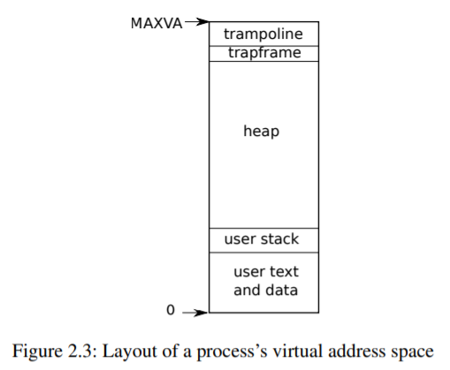
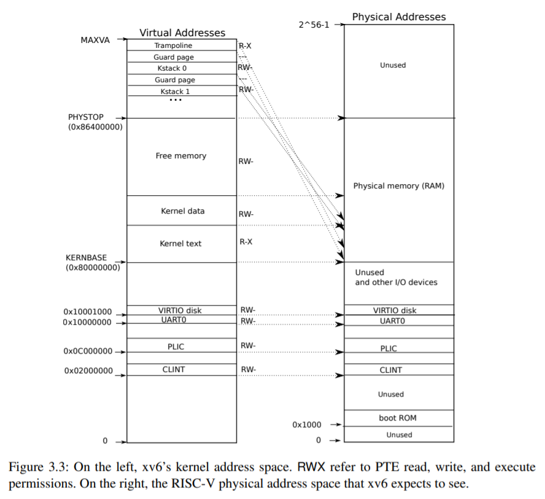

Russ Cox Frans Kaashoek Robert Morris
2020年8月31日
這是一篇為操作系統課準備的草稿，它通過研究一個名為xv6的內核例子來解釋操作系統的主要概念。xv6以Dennis Ritchie和Ken Thompson的Unix Version 6 (v6)[14]為藍本。xv6大致沿用了v6的結構和風格，但在多核RISC-V[12]中用ANSI C[6]實現。
這篇文章應該和xv6的源代碼一起閱讀，這種方法受到John Lions的UNIX第六版注釋[9]的啟发。參見https://pdos.csail.mit.edu/6.S081，以獲得 v6 和 xv6 的在線資源指針，包括一些使用 xv6 的實驗作業。
我們在麻省理工學院的操作系統課6.828和6.S081中使用過這篇課文。我們感謝這些課程的教師、助教和學生，他們都對xv6做出了直接或間接的貢獻。我們尤其要感謝Adam Belay、Austin Clements和Nickolai Zeldovich。最後，我們要感謝那些通過電子郵件向我們发送文本中的錯誤或改進建議的人。Abutalib Aghayev、Sebastian Boehm、Anton Burtsev、Raphael Carvalho、Tej Chajed、Rasit Eskicioglu、Color Fuzzy、Giuseppe、Tao Guo、Naoki Hayama、Robert Hilderman、Wolfgang Keller、Austin Liew、Pavan Maddamsetti。Jacek Masiulaniec、Michael cConville、m3hm00d、miguelgvieira、Mark Morrissey、Harry Pan、Askar Safin、Salman Shah、Adeodato Simó、Ruslan Savchenko、Pawel Szczurko、Warren Toomey、tyfkda、tzerbib、Xi Wang、鄒昌偉。
如果您发現錯誤或有改進建議，請发郵件給Frans Kaashoek和Robert Morris（kaashoek,rtm@csail.mit.edu）。
操作系統的工作是在多個程序之間共享一台計算機，並提供一套比硬件單獨支持更有用的服務。操作系統管理和抽象低級硬件，因此，例如，文字處理機不需要關心正在使用哪種類型的磁盤硬件。操作系統在多個程序之間共享硬件，使它們能同時運行（或看起來是運行）。最後，操作系統為程序提供了可控的交互方式，使它們能夠共享數據或共同工作。
一個操作系統通過一個界面為用戶程序提供服務。設計一個好的界面原來是很困難的。一方面，我們希望界面簡單而狹窄，因為這樣更容易得到正確的實現。另一方面，我們可能會想為應用程序提供許多複雜的功能。解決這種緊張關系的訣竅是設計出依靠一些機制的接口，這些機制可以結合起來提供很多通用性。
本書以一個單一的操作系統作為具體的例子來說明操作系統的概念。該操作系統xv6提供了Ken Thompson和Dennis Ritchie的Unix操作系統[14]所介紹的基本接口，同時也模仿了Unix的內部設計。
Unix提供了一個狹窄的接口，其機制結合得很好，提供了驚人的通用性。這種接口非常成功，以至於現代操作系統–BSD、Linux、Mac OS X、Solaris，甚至在較小的程度上，微軟的Windows也有類似Unix的接口。
了解xv6是了解這些系統和其他許多系統的一個良好開端。
如圖1.1所示，xv6采用了傳統的內核形式，一個為運行中的程序提供服務的特殊程序。每個正在運行的程序，稱為進程，有包含指令、數據和堆棧的內存。指令實現了程序的計算。數據是計算作用的變量。棧組織了程序的過程調用。
一台特定的計算機通常有許多進程，但只有一個內核。
當一個進程需要調用一個內核服務時，它就會調用一個系統調用，也就是操作系統接口中的一個調用。系統調用進入內核，內核執行服務並返回。這樣一個進程就在用戶空間和內核空間中交替執行。
內核使用CPU[1]提供的硬件保護機制來確保在用戶空間執行的每個進程只能訪問自己的內存。內核以實現這些保護所需的硬件權限來執行，而用戶程序的執行則沒有這些權限。當用戶程序調用系統調用時，硬件會提高特權級別，並開始執行內核中預先安排好的函數。
內核提供的系統調用集合是用戶程序看到的界面。xv6內核提供了Unix內核傳統上提供的服務和系統調用的子集。
圖1.2列出了xv6的所有系統調用。

本章的其余部分概述了xv6的服務–處理、內存、文件描述符、管道和文件系統，並通過代碼片段和討論shell（Unix的命令行用戶界面）如何使用它們來說明。shell對系統調用的使用說明了它們是如何被精心設計的。
shell是一個普通的程序，它從用戶那里讀取命令並執行它們。事實上，shell是一個用戶程序，而不是內核的一部分，這說明了系統調用接口的力量：shell沒有什麽特別之處。這也意味著shell很容易替換；因此，現代Unix系統有多種shell可供選擇，每種shell都有自己的用戶界面和腳本功能。xv6 shell是Unix Bourne shell本質的簡單實現。它的實現可以在(user/sh.c:1)找到。
一個xv6進程由用戶空間內存（指令、數據和堆棧）和內核私有的每個進程狀態組成。Xv6共享進程的時間：它透明地在等待執行的進程集之間切換可用的CPU。當一個進程不執行時，xv6會保存它的CPU寄存器，在下次運行進程時恢復它們。內核為每個進程關聯一個進程標識符，或PID。
一個進程可以使用fork系統調用創建一個新進程。Fork創建一個新的進程，稱為子進程，其內存內容與調用的進程，稱為父進程完全相同。在父進程和子進程中，fork都會返回。在父進程中，fork返回子進程的PID；在子進程中，fork返回0。例如，考慮以下用C程序語言編寫的程序片段[6]。
int pid = fork();
if(pid > 0){
printf("parent: child=%d\n", pid);
pid = wait((int *) 0);
printf("child %d is done\n", pid);
} else if(pid == 0){
printf("child: exiting\n");
exit(0);
} else {
printf("fork error\n");
}退出系統調用使調用進程停止執行，並釋放資源，如內存和打開的文件。exit需要一個整數狀態參數，傳統上0表示成功，1表示失敗。wait系統調用返回當前進程的一個已退出（或被殺死）的子進程的PID，並將該子進程的退出狀態複製到傳遞給wait的地址；如果調用者的子進程都沒有退出，則wait等待一個子進程退出。如果調用者沒有子女，wait立即返回-1。如果父代不關心子代的退出狀態，可以傳遞一個0地址給wait。
在這個例子中，輸出行可能以任何一種順序出來，這取決於父程序還是子程序先到它的printf調用。在子程序退出後，父程序的wait返回，導致父程序打印父程序：child 1234 is done
parent: child=1234
child: exiting雖然子進程最初的內存內容與父進程相同，但父進程和子進程的執行內存和寄存器不同：改變其中一個進程的變量不會影響另一個進程。例如，當wait的返回值被存儲到父進程的pid中時，並不會改變子進程中的變量pid。子進程中的pid值仍然為零。
exec系統調用用從文件系統中存儲的文件加載的新內存映像替換調用進程的內存。該文件必須有特定的格式，它規定了文件中哪部分存放指令，哪部分是數據，在哪條指令啟動等，xv6使用ELF格式，第3章將詳細討論。當exec成功時，它並不返回到調用程序；相反，從文件中加載的指令在ELF頭聲明的入口點開始執行。exec需要兩個參數：包含可執行文件的文件名和一個字符串參數數組。例如
char *argv[3];
argv[0] = "echo";
argv[1] = "hello";
argv[2] = 0;
exec("/bin/echo", argv);
printf("exec error\n");這個片段將調用的程序替換為運行參數列表echo hello的程序/bin/echo的實例。大多數程序都會忽略參數數組的第一個元素，也就是傳統的程序名稱。
v6 shell使用上述調用代表用戶運行程序。shell的主要結構很簡單，參見main(user/sh.c:145)。主循環用getcmd讀取用戶的一行輸入，然後調用fork，創建shell的副本。然後調用fork，創建一個shell進程的副本。父循環調用wait，而子循環則運行命令。例如，如果用戶向shell輸入了 “echo hello”，那麽runcmd就會被調用，參數是 “echo hello”，runcmd(user/sh.c:58)運行實際的命令。對於 “echo hello”，它會調用exec (user/sh.c:78)。如果exec成功，那麽子程序將執行來自echo的指令，而不是runcmd。在某些時候，echo會調用exit，這將導致父程序從main(user/sh.c:145)中的wait返回。
你可能會問為什麽fork和exec不在一個調用中合並；我們稍後會看到shell在實現I/O重定向時利用了這種分離。為了避免創建一個重覆的進程，然後立即替換它（用exec）的浪費，操作內核通過使用虛擬內存技術（如copy-on-write）來優化這種用例的fork實現（見4.6節）。
Xv6隱式分配大部分用戶空間內存：fork分配子程序拷貝父程序內存所需的內存，exec分配足夠的內存來容納可執行文件。一個進程如果在運行時需要更多的內存（可能是為了malloc），可以調用sbrk(n)將其數據內存增長n個字節；sbrk返回新內存的位置。
文件描述符是一個小的整數，代表一個進程可以讀取或寫入的內核管理對象。一個進程可以通過打開一個文件、目錄或設備，或通過創建一個管道，或通過複製一個現有的描述符來獲得一個文件描述符。為了簡單起見，我們經常把文件描述符所指的對象稱為 “文件”；文件描述符接口抽象掉了文件、管道和設備之間的差異，使它們看起來都像字節流。我們會把輸入和輸出稱為I/O。
在內部，xv6內核使用文件描述符作為每個進程表的索引，因此每個進程都有一個從0開始的文件描述符私有空間。按照慣例，一個進程從文件描述符0(標準輸入)讀取數據，向文件描述符1(標準輸出)寫入輸出，向文件描述符2(標準錯誤)寫入錯誤信息。正如我們將看到的，shell利用了 慣例來實現I/O重定向和管道。shell確保它始終有三個文件描述符打開（user/sh.c:151），這些文件描述符默認是控制台的文件描述符。
讀寫系統調用從文件描述符命名的文件中讀取字節，並向打開的文件寫入字節。調用read(fd, buf, n)從文件描述符fd中最多讀取n個字節，將它們複製到buf中，並返回讀取的字節數。每個引用文件的文件描述符都有一個與之相關的偏移量。讀取從當前文件偏移量中讀取數據，然後按讀取的字節數推進偏移量：隨後的讀取將返回第一次讀取所返回的字節之後的字節。當沒有更多的字節可讀時，讀返回零，表示文件的結束。
調用write(fd, buf, n)將buf中的n個字節寫入文件描述符fd，並返回寫入的字節數。少於n個字節的數據只有在发生錯誤時才會寫入。和read一樣，write在當前文件偏移量處寫入數據，然後按寫入的字節數將偏移量向前推進：每次寫入都從上一次寫入的地方開始。
下面的程序片段（它構成了程序cat的本質）將數據從標準輸入複製到標準輸出。如果发生錯誤，它就會向標準錯誤寫入一條信息。
char buf[512];
int n;
for(;;){
n = read(0, buf, sizeof buf);
if(n == 0)
break;
if(n < 0){
fprintf((FILE*)2, "read error\n");
exit(1);
}
if(write(1, buf, n) != n) {
fprintf((FILE*)2, "write error\n");
exit(1);
}
}在代碼片段中需要注意的是，cat不知道它是在從文件、控制台還是管道中讀取。同樣，cat也不知道它是打印到控制台、文件還是其他什麽地方。使用文件描述符和文件描述符 0 是輸入，文件描述符 1 是輸出的約定，使得 cat 的實現非常簡單。
關閉系統調用會釋放一個文件描述符，使它可以被未來的open、pipe或dup系統調用所自由重用（見下文）。新分配的文件描述符總是當前進程中編號最小的未使用描述符。
文件描述符和fork相互作用，使I/O重定向易於實現。Fork將父進程的文件描述符表和它的內存一起複製，這樣子進程開始時打開的文件和父進程完全一樣。系統調用exec替換了調用進程的內存，但保留了它的文件表。這種行為允許shell通過分叉實現I/O重定向，在子進程中重新打開選定的文件描述符，然後調用exec運行新的程序。下面是shell運行cat < input.txt命令的簡化版代碼。
char *argv[2];
argv[0] = "cat";
argv[1] = 0;
if(fork() == 0) {
close(0);
open("input.txt", O_RDONLY);
exec("cat", argv);
}在子程序關閉文件描述符0後，open保證對新打開的input.txt使用該文件描述符。0將是最小的可用文件描述符。然後Cat執行時，文件描述符0（標準輸入）指的是input.txt。這個序列不會改變父進程的文件描述符，因為它只修改子進程的描述符。
xv6 shell中I/O重定向的代碼完全是這樣工作的（user/sh.c:82）。回想一下，在代碼的這一點上，shell已經分叉了子shell，runcmd將調用exec來加載新的程序。
open的第二個參數由一組用位表示的標志組成，用來控制open的工作。可能的值在文件控制(fcntl)頭(kernel/fcntl.h:1-5)中定義。O_RDONLY、O_WRONLY、O_RDWR、O_CREATE和O_TRUNC，它們指示open打開文件進行讀、寫、或同時進行讀和寫，如果文件不存在，則創建文件，並將文件截斷為零長度。
現在應該清楚為什麽fork和exec是分開調用的：在這兩個調用之間，shell有機會重定向子系統的I/O，而不幹擾主shell的I/O設置。我們可以想象一個假想的結合forkexec的系統調用，但用這種調用來做I/O重定向的選擇似乎很尷尬。shell可以在調用forkexec之前修改自己的I/O設置（然後取消這些修改）；或者forkexec可以將I/O重定向的指令作為參數；或者（最不吸引人的是）每個程序（比如cat）都可以被教導做自己的I/O重定向。
雖然fork複製了文件描述符表，但每個底層文件的偏移量是父子共享的。考慮這個例子。
在這個片段的最後，文件描述符1所附的文件將包含數據hello world。父文件中的寫（由於有了wait，只有在子文件完成後才會運行）會從子文件的寫結束的地方開始。這種行為有助於從shell命令的序列中產生連續的輸出，比如(echo hello; echo world) >output.txt。
dup系統調用複製一個現有的文件描述符，返回一個新的描述符，它指向同一個底層I/O對象。兩個文件描述符共享一個偏移量，就像被fork複製的文件描述符一樣。這是將hello world寫入文件的另一種方式。
如果兩個文件描述符是通過一系列的fork和dup調用從同一個原始文件描述符衍生出來的，那麽這兩個文件描述符共享一個偏移量。否則，文件描述符不共享偏移量，即使它們是由同一文件的打開調用產生的。Dup允許shell實現這樣的命令。
ls existing-file non-existing-file > tmp1 2>&1。2>&1告訴shell給命令一個與描述符1重覆的文件描述符2。現有文件的名稱和不存在文件的錯誤信息都會顯示在文件tmp1中。xv6 shell不支持錯誤文件描述符的I/O重定向，但現在你知道如何實現它了。
文件描述符是一個強大的抽象，因為它們隱藏了它們所連接的細節：一個向文件描述符1寫入的進程可能是在向一個文件、控制台等設備或向一個管道寫入。
管道是一個小的內核緩沖區，作為一對文件描述符暴露給進程，一個用於讀，一個用於寫。將數據寫入管道的一端就可以從管道的另一端讀取數據。管道為進程提供了一種通信方式。
下面的示例代碼運行程序wc，標準輸入連接到管道的讀端。
int p[2];
char *argv[2];
argv[0] = "wc";
argv[1] = 0;
pipe(p);
if(fork() == 0) {
close(0);
dup(p[0]); // 複製 p[0] 到 fd:0
close(p[0]);
close(p[1]);
exec("/bin/wc", argv); // child: 這樣 wc 會由 stdin (p[0], fd:0) 讀入，於是讀到 hello world
} else {
close(p[0]);
write(p[1], "hello world\n", 12); // parent: 寫入 hello world 到 p[1]
close(p[1]);
}程序調用pipe，創建一個新的管道，並將讀寫文件描述符記錄在數組p中，經過fork後，父代和子代的文件描述符都指向管道。子程序調用close和dup使文件描述符0引用到管道的讀端，關閉p中的文件描述符，並調用exec運行wc。當wc從其標準輸入端讀取時，它從管道讀。母體關閉管道的讀端，向管道寫入，然後關閉寫端。
如果沒有數據，管道上的讀會等待數據被寫入或等待所有引用寫端的文件描述符被關閉；在後一種情況下，讀將返回0，就像已經到達數據文件的末端一樣。事實上，讀會阻塞直到不可能有新的數據到達，這也是一個原因，即在執行 上面的wc：如果wc的文件描述符之一指向管道的寫端，wc將永遠不會看到文件結束。
xv6的shell實現管道，如 grep fork sh.c | wc -l 的方式類似於上面的代碼（user/sh.c:100）。子進程創建一個管道來連接管道的左端和右端。然後，它為管道左端調用fork和runcmd，為右端調用fork和runcmd，並等待兩者的完成。管道的右端可以是一個命令，它本身包括一個管道（例如，a | b | c），它本身會分叉兩個新的子進程（一個是b，一個是c）。因此，shell可以創建一棵進程樹。這棵樹的葉子是命令，內部節點是等待左右子進程完成的進程。
原則上，我們可以讓內部節點運行管道的左端，但正確地這樣做會使實現變得複雜。考慮只做以下修改：將sh.c改為不為p->left分叉，在內部進程中運行runcmd(p->left)。然後，例如，echo hi | wc不會產生輸出，因為當echo hi在runcmd中退出時，內部進程會退出，並且從未調用fork來運行管道的右端。這種不正確的行為可以通過不在runcmd中對內部進程調用exit來修正，但是這種修正使代碼變得複雜：現在runcmd需要知道它是否是內部進程。當不對runcmd(p->right)進行分叉時，也會產生複雜的情況。例如，僅僅是這樣的修改，sleep 10 | echo hi會立即打印 “hi”，而不是在10秒後，因為echo會立即運行並退出，而不是等待sleep結束。由於sh.c的目標是要讓它像 盡可能的簡單，它並不試圖避免創建內部流程。
管道似乎並不比臨時文件強大：管道 echo hello world | wc可以不用管道實現為 echo hello world >/tmp/xyz; wc </tmp/xyz 在這種情況下，管道比臨時文件至少有四個優勢。首先，管道會自動清理自己；如果使用文件重定向，shell在完成後必須小心翼翼地刪除/tmp/xyz。第二，管道可以傳遞任意長的數據流，而文件重定向則需要磁盤上有足夠的空閑空間來存儲所有數據。第三，管道可以實現管道階段的並行執行，而文件方式則需要在第二個程序開始之前完成第一個程序。第四，如果你要實現進程間的通信，管道的阻塞讀寫比文件的非阻塞語義更有效率。
xv6 文件系統提供了數據文件（包含未解釋的字節數組）和目錄（包含對數據文件和其他目錄的命名引用）。這些目錄形成一棵樹，從一個稱為根目錄的特殊目錄開始。像/a/b/c這樣的路徑指的是根目錄/中名為b的目錄內名為c的文件或名為c的目錄，不以/開頭的路徑是相對於調用進程的當前目錄進行評估的，可以通過chdir系統調用來改變。這兩個代碼片段都會打開同一個文件（假設所有涉及的目錄都存在）。
第一個片段將進程的當前目錄改為/a/b；第二個片段既不引用也不改變進程的當前目錄。
有一些系統調用來創建新的文件和目錄：mkdir創建一個新的目錄，用O_CREATE標志打開創建一個新的數據文件，以及mknod創建一個新的設備文件。這個例子說明了這三種方法。
Mknod創建了一個特殊的文件，它指的是一個設備。與設備文件相關聯的是主要設備號和次要設備號(mknod的兩個參數)，它們唯一地標識一個內核設備。
當一個進程後來打開設備文件時，內核會將系統的讀寫調用分流給內核設備實現，而不是將它們傳遞給文件系統。
一個文件的名稱與文件本身是不同的；同一個基礎文件，稱為inode，可以有多個名稱，稱為鏈接。每個鏈接由目錄中的一個條目組成；該條目包含一個文件名和對inode的引用。一個inode保存著一個文件的元數據，包括它的類型(文件或目錄或設備)、它的長度、文件內容在磁盤上的位置以及到文件的鏈接數量。
fstat系統調用從文件描述符引用的inode中檢索信息。它在 stat.h (kernel/stat.h)中定義的 stat 結構中填入。
#define T_DIR 1 // Directory
#define T_FILE 2 // File
#define T_DEVICE 3 // Device
struct stat {
int dev; // File system’s disk device
uint ino; // Inode number
short type; // Type of file
short nlink; // Number of links to file
uint64 size; // Size of file in bytes
};鏈接系統調用創建了另一個文件系統名，引用同一個inode作為現有文件。這個片段創建了一個同時命名為a和b的新文件。
從a讀入或寫入a與從b讀入或寫入b是一樣的，每個inode都有一個唯一的inode號來標識。經過上面的代碼序列，可以通過檢查fstat的結果來確定a和b指的是同一個底層內容：兩者將返回相同的inode號（ino），並且nlink計數將被設置為2。
取消鏈接系統調用從文件系統中刪除一個名字。只有當文件的鏈接數為零且沒有文件描述符引用它時，文件的inode和存放其內容的磁盤空間才會被釋放。因此，在文件系統中添加
到最後一個代碼序列，使inode和文件內容以b的形式被訪問，此外,
是一種習慣性的方法，用來創建一個沒有名字的臨時inode，當進程關閉fd或退出時，這個inode會被清理掉。
Unix提供了可從shell調用的用戶級文件實用程序，例如mkdir、ln和rm。這種設計允許任何人通過添加新的用戶級程序來擴展命令行界面。事後看來，這個計劃似乎是顯而易見的，但在Unix時期設計的其他系統通常將這類命令內置到shell中（並將shell內置到內核中）。
一個例外是cd，它是內置在shell中的(user/sh.c:160)，cd必須改變shell本身的當前工作目錄。如果cd是作為常規命令運行，那麽shell將分叉一個子進程，子進程將運行cd，cd將改變子進程的工作目錄。父進程（即shell）的工作目錄不會改變。
Unix將 “標準”文件描述符、管道和方便的shell語法結合起來對它們進行操作，是編寫通用可重用程序的一大進步。這個想法引发了一種 “軟件工具”文化，Unix的強大和流行在很大程度上要歸功於這種文化，shell是第一種所謂的 “腳本語言”。今天，Unix系統調用接口在BSD、Linux和Mac OS X等系統中依然存在。
Unix系統調用接口已經通過便攜式操作系統接口(POSIX)標準進行了標準化。Xv6 並不符合 POSIX 標準：它缺少許多系統調用（包括基本的系統調用，如 lseek），而且它提供的許多系統調用與標準不同。我們對xv6的主要目標是簡單明了，同時提供一個簡單的類似UNIX的系統調用接口。一些人已經用一些更多的系統調用和一個簡單的C庫擴展了xv6，以便運行基本的Unix程序。然而，現代內核比xv6提供了更多的系統調用和更多種類的內核服務。例如，它們支持網絡、窗口系統、用戶級線程、許多設備的驅動程序等等。現代內核不斷快速发展，並提供了許多超越POSIX的功能。
Unix用一套文件名和文件描述符接口統一了對多種類型資源（文件、目錄和設備）的訪問。這個思想可以擴展到更多種類的資源；一個很好的例子是Plan 9[13]，它把 “資源就是文件”的概念應用到網絡、圖形等方面。然而，大多數Unix衍生的操作系統都沒有遵循這一路線。
文件系統和文件描述符已經是強大的抽象。即便如此，操作系統接口還有其他模式。Multics是Unix的前身，它以一種使文件存儲看起來像內存的方式抽象了文件存儲，產生了一種截然不同的界面風味。Multics設計的複雜性直接影響了Unix的設計者，他們試圖建立一些更簡單的東西。
Xv6沒有提供用戶的概念，也沒有提供保護一個用戶與另一個用戶的概念；用Unix的術語來說，所有的xv6進程都以root身份運行。
本書研究的是xv6如何實現其類似Unix的接口，但其思想和概念不僅僅適用於Unix。任何操作系統都必須將進程覆用到底層硬件上，將進程相互隔離，並提供受控進程間通信的機制。在學習了xv6之後，您應該能夠研究其他更複雜的操作系統，並在這些系統中看到xv6的基本概念。
一個操作系統的一個關鍵要求是同時支持幾個活動。例如，使用第1章中描述的系統調用接口，一個進程可以用fork啟動新的進程。
操作系統必須在這些進程之間對計算機的資源進行時間分配。例如，即使進程數量多於硬件CPU數量，操作系統也必須確保所有進程都有機會執行。操作系統還必須安排進程之間的隔離。也就是說，如果一個進程出現了bug，发生了故障，不應該影響到不依賴bug進程的進程。然而，完全隔離太強了，因為進程應該有可能有意地進行交互，管道就是一個例子。因此，一個操作系統必須滿足三個要求：覆用、隔離和交互。
本章概述了如何組織操作系統來實現這三個要求。原來有很多方法，但本文主要介紹以單片機內核為中心的主流設計，很多Unix操作系統都采用這種設計。本章還介紹了xv6進程的概述，xv6進程是xv6中的隔離單元，以及xv6啟動時第一個進程的創建。
Xv6運行在多核RISC-V微處理器上，它的許多低級功能（例如，它的進程實現）是RISC-V所特有的。RISC-V是一個64位的CPU，xv6是用 “LP64”C語言編寫的，這意味著C編程語言中的long(L)和指針(P)是64位的，但int是32位的。本書假設讀者在某種架構上做過一點機器級的編程，會在出現RISC-V特有的思想時介紹。RISC-V的有用參考資料是 "The RISC-V Reader: 開放架構圖集》[12]。用戶級ISA[2]和特權架構[1]是官方規範。
- 本文所說的 “多核”是指多個CPU共享內存，但並行執行，每個CPU有自己的一套寄存器。本文有時使用多處理器一詞作為多核的同義詞，盡管多處理器也可以更具體地指具有多個不同處理器芯片的計算機。
一台完整的計算機中的CPU周圍都是支持硬件，其中大部分是I/O接口的形式。Xv6是為qemu的“-machine virt”選項模擬的支持硬件編寫的。這包括RAM、包含啟動代碼的ROM、與用戶鍵盤/屏幕的串行連接以及用於存儲的磁盤。
遇到一個操作系統，人們可能會問的第一個問題是為什麽要有它呢？也就是說，我們可以把圖1.2中的系統調用作為一個庫來實現，應用程序與之鏈接。在這個計劃中，每個應用程序甚至可以根據自己的需要定制自己的庫。應用程序可以直接與硬件資源進行交互，並以最適合應用程序的方式使用這些資源（例如，實現高或可預測的性能）。一些用於嵌入式設備或實時系統的操作系統就是以這種方式組織的。
這種庫方式的缺點是，如果有多個應用程序在運行，這些應用程序必須表現良好。例如，每個應用程序必須定期放棄CPU，以便其他應用程序能夠運行。如果所有的應用程序都相互信任並且沒有bug，這樣的合作分時方案可能是可以的。比較典型的情況是，應用程序之間互不信任，並且有bug，所以人們往往希望比合作方案提供更強的隔離性。
為了實現強隔離，禁止應用程序直接訪問敏感的硬件資源，而將資源抽象為服務是很有幫助的。例如，Unix應用程序只通過文件系統的打開、讀取、寫入和關閉系統調用與存儲進行交互，而不是直接讀寫磁盤。這為應用程序提供了路徑名的便利，而且它允許操作系統（作為接口的實現者）管理磁盤。即使不考慮隔離問題，那些有意交互的程序（或者只是希望互不幹擾）很可能會发現文件系統是一個比直接使用磁盤更方便的抽象。
同樣，Unix在進程之間透明地切換硬件CPU，必要時保存和恢復寄存器狀態，因此應用程序不必意識到時間共享。這種透明度使得操作系統可以共享CPU，即使一些應用程序處於無限循環中。
另一個例子是，Unix進程使用exec來建立它們的內存映像，而不是直接與物理內存交互。這使得操作系統可以決定將進程放在內存的什麽位置；如果內存緊張，操作系統甚至可能將進程的部分數據存儲在磁盤上。Exec還為用戶提供了文件系統存儲可執行程序映像的便利。
Unix進程之間的許多形式的交互都是通過文件描述符進行的。文件描述符不僅可以抽象出許多細節（例如，管道或文件中的數據存儲在哪里），而且它們的定義方式也可以簡化交互。例如，如果管道中的一個應用程序失敗了，內核就會為管道中的下一個進程產生一個文件結束信號。
圖1.2中的系統調用接口經過精心設計，既為程序員提供了方便，又提供了強隔離的可能。Unix接口並不是抽象資源的唯一方式，但事實證明它是一種非常好的方式。
強隔離要求應用程序和操作系統之間有一個硬邊界。如果應用程序犯了錯誤，我們不希望操作系統失敗，也不希望其他應用程序失敗。相反，操作系統應該能夠清理失敗的應用程序並繼續運行其他應用程序。為了實現強隔離，操作系統必須安排應用程序不能修改（甚至不能讀取）操作系統的數據結構和指令，應用程序不能訪問其他進程的內存。
CPU提供了強隔離的硬件支持。例如，RISC-V有三種模式，CPU可以執行指令：機器模式、監督者模式和用戶模式。在機器模式下執行的指令具有完全的權限，一個CPU在機器模式下啟動。機器模式主要用於配置計算機。Xv6在機器模式下執行幾行指令，然後轉為監督者模式。
在監督者模式下，CPU被允許執行特權指令：例如，啟用和禁用中斷，讀寫保存頁表地址的寄存器等。如果用戶模式下的應用程序試圖執行一條特權指令，那麽CPU不會執行該指令，而是切換到監督者模式，這樣監督者模式的代碼就可以終止應用程序，因為它做了不該做的事情。第1章的圖1.1說明了這種組織方式。一個應用程序只能執行用戶模式的指令（如加數字等），被稱為運行在用戶空間，而處於監督者模式的軟件也可以執行特權指令，被稱為運行在內核空間。運行在內核空間（或主管模式）的軟件稱為內核。
一個應用程序如果要調用內核函數（如xv6中的讀系統調用），必須過渡到內核。CPU提供了一個特殊的指令，可以將CPU從用戶模式切換到監督模式，並在內核指定的入口處進入內核。(RISC-V為此提供了ecall指令。)一旦CPU切換到監督者模式，內核就可以驗證系統調用的參數，決定是否允許應用程序執行請求的操作，然後拒絕或執行。內核控制過渡到監督者模式的入口點是很重要的，如果應用程序可以決定內核的入口點，那麽惡意應用程序就可以，例如，在跳過驗證參數的點進入內核。
一個關鍵的設計問題是操作系統的哪一部分應該在監督者模式下運行。一種可能是整個操作系統駐留在內核中，這樣所有系統調用的實現都在監督者模式下運行。這種組織方式稱為單片內核。
在這種組織中，整個操作系統以全硬件權限運行。這種組織方式很方便，因為操作系統設計者不必決定操作系統的哪一部分不需要全硬件權限。此外，操作系統的不同部分更容易合作。例如，一個操作系統可能有一個緩沖區緩存，可以由文件系統和虛擬內存系統共享。
單片機組織的一個缺點是操作系統的不同部分之間的接口通常是複雜的（我們將在本文的其余部分看到），因此操作系統開发者很容易犯錯誤。在單片機內核中，一個錯誤是致命的，因為在主管模式下的錯誤往往會導致內核失敗。如果內核失敗，計算機就會停止工作，因此所有的應用程序也會失敗。計算機必須重啟才能再次啟動。
為了降低內核出錯的風險，操作系統設計者可以盡量減少在主管模式下運行的操作系統代碼量，而在用戶模式下執行操作系統的大部分代碼。這種內核組織方式稱為微內核。

圖2.1說明了這種微內核設計。在圖中，文件系統作為一個用戶級進程運行。作為進程運行的操作系統服務稱為服務器。為了讓應用程序與文件服務器進行交互，內核提供了一種進程間通信機制，用於從一個用戶模式進程向另一個進程发送消息。例如，如果一個像shell這樣的應用程序想要讀取或寫入一個文件，它就會向文件服務器发送一個消息並等待響應。
在微內核中，內核接口由一些低級函數組成，用於啟動應用程序、发送消息、訪問設備硬件等。這種組織方式使得內核相對簡單，因為大部分操作系統駐留在用戶級服務器中。
xv6和大多數Unix操作系統一樣，是以單片機內核的形式實現的。因此，xv6內核接口與操作系統接口相對應，內核實現了完整的操作系統。由於xv6不提供很多服務，所以它的內核比一些微內核小，但從概念上講xv6是單片的。
xv6內核源碼在kernel/子目錄下。按照模塊化的概念，源碼被分成了多個文件，圖2.2列出了這些文件。模塊間的接口在defs.h(kernel/defs.h)中定義。

xv6中的隔離單位（和其他Unix操作系統一樣）是一個進程。進程抽象可以防止一個進程破壞或監視另一個進程的內存、CPU、文件描述符等。它還可以防止一個進程破壞內核本身，所以一個進程不能顛覆內核的隔離機制。內核必須小心翼翼地實現進程抽象，因為一個錯誤的或惡意的應用程序可能會欺騙內核或硬件做一些不好的事情（例如，規避隔離）。內核用來實現進程的機制包括用戶/監督模式標志、地址空間和線程的時間分割。
為了幫助實施隔離，進程抽象為程序提供了一種錯覺，即它有自己的私人機器。一個進程為程序提供了一個看似私有的內存系統，或者說是地址空間，其他進程不能對其進行讀寫。一個進程還為程序提供了看似是自己的CPU來執行程序的指令。
Xv6使用頁表（由硬件實現）給每個進程提供自己的地址空間。RISC-V頁表將虛擬地址(RISC-V指令操作的地址)轉換(或 “映射”)為物理地址(CPU芯片发送到主存儲器的地址)。
Xv6為每個進程維護一個單獨的頁表，定義該進程的地址空間。如圖2.3所示，一個地址空間包括從虛擬地址0開始的進程的用戶內存。指令排在第一位，其次是全局變量，然後是堆，最後是一個 “堆”區域（用於malloc），進程可以根據需要擴展。有一些因素限制了進程的地址空間的最大大小：RISC-V上的指針是64位寬；在頁表中查找虛擬地址時，硬件只使用低的39位；xv6只使用這39位中的38位。因此，最大地址是2^38 - 1 = 0x3fffffffff，即MAXVA（kernel/riscv.h:348）。在地址空間的頂端，xv6保留了一個頁，用於放置一個蹦床和一個映射進程的trapframe的頁，以便切換到內核，我們將在第4章中解釋。

xv6內核為每個進程維護了許多狀態，它將這些狀態收集到一個proc結構中(kernel/proc.h:86)。一個進程最重要的內核狀態是它的頁表、內核棧和運行狀態。我們用p->xxx來表示proc結構的元素，例如，p->pagetable是指向進程頁表的指針。
enum procstate { UNUSED, USED, SLEEPING, RUNNABLE, RUNNING, ZOMBIE };
// Per-process state
struct proc {
struct spinlock lock;
// p->lock must be held when using these:
enum procstate state; // Process state
void *chan; // If non-zero, sleeping on chan
int killed; // If non-zero, have been killed
int xstate; // Exit status to be returned to parent's wait
int pid; // Process ID
// proc_tree_lock must be held when using this:
struct proc *parent; // Parent process
// these are private to the process, so p->lock need not be held.
uint64 kstack; // Virtual address of kernel stack
uint64 sz; // Size of process memory (bytes)
pagetable_t pagetable; // User page table
struct trapframe *trapframe; // data page for trampoline.S
struct context context; // swtch() here to run process
struct file *ofile[NOFILE]; // Open files
struct inode *cwd; // Current directory
char name[16]; // Process name (debugging)
};每個進程都有一個執行線程（簡稱線程），執行進程的指令。一個線程可以被暫停，然後再恢復。為了在進程之間透明地切換，內核會暫停當前運行的線程，並恢復另一個進程的線程。線程的大部分狀態（局部變量、函數調用返回地址）都存儲在線程的棧上。
每個進程都有兩個棧：用戶棧和內核棧（p->kstack）。當進程在執行用戶指令時，只有它的用戶棧在使用，而它的內核棧是空的。當進程進入內核時（為了系統調用或中斷），內核代碼在進程的內核堆棧上執行；當進程在內核中時，它的用戶堆棧仍然包含保存的數據，但不被主動使用。一個進程的線程在主動使用其用戶棧和內核棧之間交替進行。
內核堆棧是獨立的（避免用戶代碼存取），因此即使一個進程破壞了它的用戶堆棧，內核也可以執行。一個進程可以通過執行RISC-V ecall指令進行系統調用。這條指令會提高硬件權限級別，並將程序計數器改為內核定義的入口點。
入口處的代碼切換到內核棧，執行實現系統調用的內核指令。當系統調用完成後，內核切換回用戶棧，並通過調用sret指令返回用戶空間，降低硬件權限級別，恢復執行系統調用指令後的用戶指令。一個進程的線程可以在內核中 “阻塞”等待I/O，當I/O完成後，再從原地恢復。
p->state表示進程是被分配、準備運行、運行、等待I/O，還是退出。
p->pagetable以RISC-V硬件所期望的格式保存進程的頁表，xv6使分頁硬件在用戶空間執行進程時使用進程的p->pagetable。進程的頁表還作為分配給存儲進程內存的物理頁的地址記錄。
為了使xv6更加具體，我們將概述內核如何啟動和運行第一個進程。後面的章節將更詳細地描述這個概述中出現的機制。
當RISC-V計算機開機時，它會初始化自己，並運行一個存儲在只讀存儲器中的引導加載器。引導加載器將xv6內核加載到內存中。然後，在機器模式下，CPU從_entry（kernel/entry.S:6）開始執行xv6。RISC-V在禁用分頁硬件的情況下啟動：虛擬地址直接映射到物理地址。
entry.S
# qemu -kernel loads the kernel at 0x80000000
# and causes each CPU to jump there.
# kernel.ld causes the following code to
# be placed at 0x80000000.
.section .text
_entry:
# set up a stack for C.
# stack0 is declared in start.c,
# with a 4096-byte stack per CPU.
# sp = stack0 + (hartid * 4096)
la sp, stack0
li a0, 1024*4
csrr a1, mhartid
addi a1, a1, 1
mul a0, a0, a1
add sp, sp, a0
# jump to start() in start.c
call start
spin:
j spinstart.c
...
// entry.S needs one stack per CPU.
__attribute__ ((aligned (16))) char stack0[4096 * NCPU];
...載入器將xv6內核加載到物理地址0x80000000的內存中。之所以將內核放在0x80000000而不是0x0，是因為地址範圍0x0:0x80000000包含I/O設備。
kernel.ld
OUTPUT_ARCH( "riscv" )
ENTRY( _entry )
SECTIONS
{
/*
* ensure that entry.S / _entry is at 0x80000000,
* where qemu's -kernel jumps.
*/
. = 0x80000000;
..._entry處的指令設置了一個棧，這樣xv6就可以運行C代碼。Xv6在文件start.c(kernel/start.c:11)中聲明了初始棧的空間，即stack0。在_entry處的代碼加載堆棧指針寄存器sp，地址為stack0+4096，也就是堆棧的頂部，因為RISC-V的堆棧是向下生長的。現在內核有了棧，_entry在start(kernel/start.c:21)處調用到C代碼。
函數start執行一些只有在機器模式下才允許的配置，然後切換到主管模式。為了進入主管模式，RISC-V提供了指令mret。這個指令最常用來從上一次的調用中返回，從supervisor模式到機器模式，start並不是從這樣的調用中返回，而是把事情設置得像有過這樣的調用一樣：它在寄存器mstatus中把以前的特權模式設置為supervisor，它通過把main的地址寫入寄存器mepc來把返回地址設置為main，通過把0寫入頁表寄存器satp來禁用supervisor模式下的虛擬地址轉換，並把所有的中斷和異常委托給supervisor模式。
start.c
// entry.S jumps here in machine mode on stack0.
void
start()
{
// set M Previous Privilege mode to Supervisor, for mret.
unsigned long x = r_mstatus();
x &= ~MSTATUS_MPP_MASK;
x |= MSTATUS_MPP_S;
w_mstatus(x);
// set M Exception Program Counter to main, for mret.
// requires gcc -mcmodel=medany
w_mepc((uint64)main);
// disable paging for now.
w_satp(0);
// delegate all interrupts and exceptions to supervisor mode.
w_medeleg(0xffff);
w_mideleg(0xffff);
w_sie(r_sie() | SIE_SEIE | SIE_STIE | SIE_SSIE);
// ask for clock interrupts.
timerinit();
// keep each CPU's hartid in its tp register, for cpuid().
int id = r_mhartid();
w_tp(id);
// switch to supervisor mode and jump to main().
asm volatile("mret"); // 因為前面的 w_mepc((uint64)main) ，所以會跳到 main
}在跳入主管模式之前，start還要執行一項任務：對時鐘芯片進行編程以產生定時器中斷。在完成了這些內務管理後，start通過調用mret “返回”到監督模式。這將導致程序計數器變為main（kernel/main.c:11）。
main.c
// start() jumps here in supervisor mode on all CPUs.
void
main()
{
if(cpuid() == 0){
consoleinit();
printfinit();
printf("\n");
printf("xv6 kernel is booting\n");
printf("\n");
kinit(); // physical page allocator
kvminit(); // create kernel page table
kvminithart(); // turn on paging
procinit(); // process table
trapinit(); // trap vectors
trapinithart(); // install kernel trap vector
plicinit(); // set up interrupt controller
plicinithart(); // ask PLIC for device interrupts
binit(); // buffer cache
iinit(); // inode cache
fileinit(); // file table
virtio_disk_init(); // emulated hard disk
userinit(); // first user process
__sync_synchronize();
started = 1;
} else {
while(started == 0)
;
__sync_synchronize();
printf("hart %d starting\n", cpuid());
kvminithart(); // turn on paging
trapinithart(); // install kernel trap vector
plicinithart(); // ask PLIC for device interrupts
}
scheduler();
}在main(kernel/main.c:11)初始化幾個設備和子系統後，它通過調用userinit(kernel/proc.c:212)創建第一個進程。第一個進程執行一個用RISC-V匯編編寫的小程序initcode.S（user/initcode.S:1），它通過調用exec系統調用重新進入內核。正如我們在第一章中所看到的，exec用一個新的程序（本例中是/init）替換當前進程的內存和寄存器。一旦內核完成exec，它就會在/init進程中返回到用戶空間。Init (user/init.c:15)在需要時創建一個新的控制台設備文件，然後以文件描述符0、1和2的形式打開它。然後它在控制台上啟動一個shell。系統已經啟動了。
initcode.S
# Initial process that execs /init.
# This code runs in user space.
#include "syscall.h"
# exec(init, argv)
.globl start
start:
la a0, init
la a1, argv
li a7, SYS_exec
ecall
# for(;;) exit();
exit:
li a7, SYS_exit
ecall
jal exit
# char init[] = "/init\0";
init:
.string "/init\0"
# char *argv[] = { init, 0 };
.p2align 2
argv:
.long init
.long 0init.c
// init: The initial user-level program
#include "kernel/types.h"
#include "kernel/stat.h"
#include "kernel/spinlock.h"
#include "kernel/sleeplock.h"
#include "kernel/fs.h"
#include "kernel/file.h"
#include "user/user.h"
#include "kernel/fcntl.h"
char *argv[] = { "sh", 0 };
int
main(void)
{
int pid, wpid;
if(open("console", O_RDWR) < 0){
mknod("console", CONSOLE, 0);
open("console", O_RDWR);
}
dup(0); // stdout
dup(0); // stderr
for(;;){
printf("init: starting sh\n");
pid = fork();
if(pid < 0){
printf("init: fork failed\n");
exit(1);
}
if(pid == 0){
exec("sh", argv);
printf("init: exec sh failed\n");
exit(1);
}
for(;;){
// this call to wait() returns if the shell exits,
// or if a parentless process exits.
wpid = wait((int *) 0);
if(wpid == pid){
// the shell exited; restart it.
break;
} else if(wpid < 0){
printf("init: wait returned an error\n");
exit(1);
} else {
// it was a parentless process; do nothing.
}
}
}
}在現實世界中，既可以找到單片機內核，也可以找到微內核。許多Unix內核都是單片式的。例如，Linux的內核是單片的，盡管有些操作系統的功能是作為用戶級服務器運行的（如窗口系統）。L4、Minix和QNX等內核是以服務器的形式組織的微內核，並在嵌入式環境中得到廣泛部署。
大多數操作系統都采用了進程概念，大多數進程的外觀與xv6的相似。然而，現代操作系統支持一個進程中的多個線程，以允許一個進程利用多個CPU。在一個進程中支持多個線程涉及到不少xv6沒有的機制，包括潛在的接口變化（如Linux的克隆，fork的變種），以控制進程線程共享哪些方面。
頁表是操作系統為每個進程提供自己私有地址空間和內存的機制。頁表決定了內存地址的含義，以及物理內存的哪些部分可以被訪問。它們允許xv6隔離不同進程的地址空間，並將它們覆用到單個物理內存上。頁表還提供了一個間接層次，允許xv6執行一些技巧：在幾個地址空間中映射同一內存（一個蹦床頁），以及用一個未映射的頁來保護內核和用戶堆棧。本章其余部分將解釋RISC-V硬件提供的頁表以及xv6如何使用它們。
提醒一下，RISC-V指令(包括用戶和內核)操縱的是虛擬地址。機器的RAM，也就是物理內存，是以物理地址為索引的。RISC-V頁表硬件將這兩種地址連接起來，通過將每個虛擬地址映射到物理地址。
xv6運行在Sv39 RISC-V上，這意味著只使用64位虛擬地址的底部39位，頂部25位沒有使用。在這種Sv39配置中，一個RISC-V頁表在邏輯上是一個2^27(134,217,728)頁表項(PTE)的數組。每個PTE包含一個44位的物理頁號（PPN）和一些標志。分頁硬件翻譯虛擬地址時，利用39位中的前27位索引到頁表中找到一個PTE，並做出一個56位的物理地址，其前44位來自於PTE中的PPN，而其後12位則是從原虛擬地址中複製過來的。圖3.1顯示了這個過程，邏輯上把頁表看成是一個簡單的PTE數組（更完整的故事見圖3.2）。頁表讓操作系統控制虛擬地址到物理地址的轉換，其粒度為4096（2^12）字節的對齊塊。這樣的塊稱為頁。

在Sv39 RISC-V中，虛擬地址的前25位不用於翻譯；將來，RISC-V可能會使用這些位來定義更多的翻譯級別。物理地址也有增長的空間：在PTE格式中，物理頁數還有10位的增長空間。
如圖3.2所示，實際翻譯分三步進行。一個頁表以三層樹的形式存儲在物理內存中。樹的根部是一個4096字節的頁表頁，它包含512個PTE，這些PTE包含樹的下一級頁表頁的物理地址。這些頁面中的每一個都包含512個PTE，用於樹的最後一級。分頁硬件用27位中的頂9位選擇根頁表頁中的PTE，用中間9位選擇樹中下一級頁表頁中的PTE，用底9位選擇最後的PTE。
如果翻譯一個地址所需的三個PTE中的任何一個不存在，尋呼硬件就會引发一個頁面錯誤的異常，讓內核來處理這個異常（見第4章）。
這種三級結構允許頁表在常見的大範圍虛擬地址沒有映射的情況下省略整個頁表頁。
每個PTE包含標志位，告訴尋呼硬件如何允許使用相關的虛擬地址。PTE_V表示PTE是否存在：如果沒有設置，對該頁的引用會引起異常（即不允許）。PTE_R控制是否允許指令讀取到頁面。PTE_W控制是否允許指令向頁面寫入。PTE_X控制CPU是否可以將頁面的內容解釋為指令並執行。
PTE_U控制是否允許用戶模式下的指令訪問頁面；如果不設置PTE_U，PTE只能在主管模式下使用。圖3.2顯示了這一切的工作原理。標志和其他所有與頁硬件相關的結構在(kernel/riscv.h)中定義 要告訴硬件使用頁表，內核必須將根頁表頁的物理地址寫入satp寄存器中。每個CPU都有自己的satp。一個CPU將使用自己的satp指向的頁表來翻譯後續指令產生的所有地址。
每個CPU都有自己的satp，這樣不同的CPU可以運行不同的進程，每個進程都有自己的頁表所描述的私有地址空間。

關於術語的一些說明。物理內存指的是DRAM中的存儲單元。物理存儲器的一個字節有一個地址，稱為物理地址。指令只使用虛擬地址，分頁硬件將其翻譯成物理地址，然後发送給DRAM硬件，以讀取或寫入存儲。與物理內存和虛擬地址不同，虛擬內存並不是一個物理對象，而是指內核提供的管理物理內存和虛擬地址的抽象和機制的集合。
Xv6為每個進程維護一個頁表，描述每個進程的用戶地址空間，另外還有一個描述內核地址空間的單頁表。內核配置其地址空間的布局，使自己能夠在可預測的虛擬地址上訪問物理內存和各種硬件資源。圖3.3顯示了這種布局如何將內核虛擬地址映射到物理地址。文件（kernel/memlayout.h）聲明了xv6的內核內存布局的常量
kernel/memlayout.h
// Physical memory layout
// qemu -machine virt is set up like this,
// based on qemu's hw/riscv/virt.c:
//
// 00001000 -- boot ROM, provided by qemu
// 02000000 -- CLINT
// 0C000000 -- PLIC
// 10000000 -- uart0
// 10001000 -- virtio disk
// 80000000 -- boot ROM jumps here in machine mode
// -kernel loads the kernel here
// unused RAM after 80000000.QEMU模擬的計算機包括RAM（物理內存），從物理地址0x80000000開始，一直到至少0x86400000，xv6稱之為PHYSTOP。
QEMU模擬還包括I/O設備，如磁盤接口。QEMU將設備接口作為內存映射的控制寄存器暴露給軟件，這些寄存器位於物理地址空間的0x80000000以下。內核可以通過讀取/寫入這些特殊的物理地址與設備進行交互；這種讀取和寫入與設備硬件而不是與RAM進行通信。第4章解釋了xv6如何與設備交互。

內核通過 “直接映射”的方式獲取RAM和內存映射的設備寄存器，也就是將資源映射到與物理地址相等的虛擬地址上，例如，內核本身在虛擬地址空間和物理內存中都位於KERNBASE=0x80000000處。例如，內核本身在虛擬地址空間和物理內存中的位置都是KERNBASE=0x80000000。直接映射簡化了讀或寫物理內存的內核代碼。例如,當fork為子進程分配用戶內存時,分配器返回該內存的物理地址;fork在將父進程的用戶內存複製到子進程時,直接將該地址作為虛擬地址。
有幾個內核虛擬地址不是直接映射的。
當內核通過高內存映射使用堆棧時，它們也可以通過直接映射的地址被內核訪問。另一種設計可能只有直接映射，並在直接映射的地址上使用堆棧。然而，在這種安排中，提供保護頁將涉及到取消映射虛擬地址，否則這些地址將指向物理內存，這將很難使用。
內核將蹦床和內核文本的頁面映射為PTE_R和PTE_X權限。內核從這些頁面讀取和執行指令。內核用PTE_R和PTE_W權限映射其他頁面，這樣它就可以讀寫這些頁面的內存。守護頁的映射是無效的。
riscv.h
大部分的xv6操作地址空間和頁表的代碼都在vm.c(kernel/vm.c:1)中。中心數據結構是pagetable_t，它實際上是一個指向RISC-V根頁表頁的指針；pagetable_t可以是內核頁表，也可以是每個進程的頁表之一。核心函數是Walk和mappages，前者為虛擬地址尋找PTE，後者為新的映射安裝PTE。以 kvm 開頭的函數操作內核頁表；以 uvm 開頭的函數操作用戶頁表；其他函數同時用於這兩個方面。copyout 和 copyin 將數據複製到作為系統調用參數提供的用戶虛擬地址，並從這些地址複製數據；它們在 vm.c 中，因為它們需要顯式翻譯這些地址，以便找到相應的物理內存。
在啟動序列的早期，main調用kvminit(kernel/vm.c:22)來創建內核的頁表，這個調用发生在xv6在RISC-V上啟用分頁之前，所以地址直接指物理內存。這個調用发生在xv6在RISC-V上啟用分頁之前，所以地址直接指向物理內存。Kvminit首先分配一頁物理內存來存放根頁表頁。然後調用kvmmap來安裝內核需要的翻譯。這些翻譯包括內核的指令和數據，物理內存到PHYSTOP，以及實際上是設備的內存範圍。
/*
* the kernel's page table.
*/
pagetable_t kernel_pagetable;
extern char etext[]; // kernel.ld sets this to end of kernel code.
extern char trampoline[]; // trampoline.S
// Make a direct-map page table for the kernel.
pagetable_t
kvmmake(void)
{
pagetable_t kpgtbl;
kpgtbl = (pagetable_t) kalloc();
memset(kpgtbl, 0, PGSIZE);
// 1. 輸出入裝置 2. 作業系統 3. 跳轉頁 的記憶體區塊為直接映射 (id mapping)
// uart registers.
kvmmap(kpgtbl, UART0, UART0, PGSIZE, PTE_R | PTE_W);
// virtio mmio disk interface.
kvmmap(kpgtbl, VIRTIO0, VIRTIO0, PGSIZE, PTE_R | PTE_W);
// PLIC
kvmmap(kpgtbl, PLIC, PLIC, 0x400000, PTE_R | PTE_W);
// map kernel text executable and read-only.
kvmmap(kpgtbl, KERNBASE, KERNBASE, (uint64)etext-KERNBASE, PTE_R | PTE_X);
// map kernel data and the physical RAM we'll make use of.
kvmmap(kpgtbl, (uint64)etext, (uint64)etext, PHYSTOP-(uint64)etext, PTE_R | PTE_W);
// map the trampoline for trap entry/exit to
// the highest virtual address in the kernel.
kvmmap(kpgtbl, TRAMPOLINE, (uint64)trampoline, PGSIZE, PTE_R | PTE_X);
// map kernel stacks
proc_mapstacks(kpgtbl);
return kpgtbl;
}
// Initialize the one kernel_pagetable
void
kvminit(void)
{
kernel_pagetable = kvmmake();
}
// Switch h/w page table register to the kernel's page table,
// and enable paging.
void
kvminithart()
{
w_satp(MAKE_SATP(kernel_pagetable)); // 註：riscv.h => #define MAKE_SATP(pagetable) (SATP_SV39 | (((uint64)pagetable) >> 12))
sfence_vma();
}
// ...
// add a mapping to the kernel page table.
// only used when booting.
// does not flush TLB or enable paging.
void
kvmmap(pagetable_t kpgtbl, uint64 va, uint64 pa, uint64 sz, int perm)
{
if(mappages(kpgtbl, va, sz, pa, perm) != 0)
panic("kvmmap");
}
//...
// Create PTEs for virtual addresses starting at va that refer to
// physical addresses starting at pa. va and size might not
// be page-aligned. Returns 0 on success, -1 if walk() couldn't
// allocate a needed page-table page.
int
mappages(pagetable_t pagetable, uint64 va, uint64 size, uint64 pa, int perm)
{
uint64 a, last;
pte_t *pte;
// 映射範圍：從 va 到 va+size
a = PGROUNDDOWN(va); // 第一頁的頁號
last = PGROUNDDOWN(va + size - 1); // 最後一頁的頁號
for(;;){
if((pte = walk(pagetable, a, 1)) == 0) // 找出頁 a 對應的 pte，若不存在則創造一個可用空頁 (因 alloc=1)
return -1;
if(*pte & PTE_V)
panic("remap");
*pte = PA2PTE(pa) | perm | PTE_V;
if(a == last) // 如果已經到了最後一頁，則完成並離開
break;
a += PGSIZE;
pa += PGSIZE;
}
return 0;
}riscv.h
//...
#define PGROUNDUP(sz) (((sz)+PGSIZE-1) & ~(PGSIZE-1))
#define PGROUNDDOWN(a) (((a)) & ~(PGSIZE-1)) // 只保留最後 12 位元的 offset 部分
//...
// shift a physical address to the right place for a PTE.
#define PA2PTE(pa) ((((uint64)pa) >> 12) << 10)
#define PTE2PA(pte) (((pte) >> 10) << 12)
#define PTE_FLAGS(pte) ((pte) & 0x3FF)kvmmap (kernel/vm.c:118) 調用 mappages (kernel/vm.c:149)，它將一個虛擬地址範圍的映射安裝到頁表中，並將其映射到相應的物理地址範圍。它對範圍內的每一個虛擬地址按頁間隔分別進行安裝。對於每個要映射的虛擬地址，mapages調用walk找到該地址的PTE的地址。然後，它初始化PTE，使其持有相關的物理頁號、所需的權限(PTE_W、PTE_X和/或PTE_R)，以及PTE_V來標記PTE為有效(kernel/vm.c:161)。
walk (kernel/vm.c:72)模仿RISC-V分頁硬件查找虛擬地址的PTE(見圖3.2).walk每次下降3級頁表的9位。它利用每一級的9位虛擬地址來查找下一級頁表或最後一頁（kernel/vm.c:78）的PTE。如果PTE無效，則說明所需的頁還沒有被分配；如果設置了alloc參數，walk會分配一個新的頁表頁，並把它的物理地址放在PTE中。它返回樹中最低層的PTE的地址(kernel/vm.c:88)。
vm.c
// Return the address of the PTE in page table pagetable
// that corresponds to virtual address va. If alloc!=0,
// create any required page-table pages.
//
// The risc-v Sv39 scheme has three levels of page-table
// pages. A page-table page contains 512 64-bit PTEs.
// A 64-bit virtual address is split into five fields:
// 39..63 -- must be zero.
// 30..38 -- 9 bits of level-2 index.
// 21..29 -- 9 bits of level-1 index.
// 12..20 -- 9 bits of level-0 index.
// 0..11 -- 12 bits of byte offset within the page.
pte_t *
walk(pagetable_t pagetable, uint64 va, int alloc)
{
if(va >= MAXVA)
panic("walk");
for(int level = 2; level > 0; level--) { // 逐級下降頁表 (共三級)
pte_t *pte = &pagetable[PX(level, va)]; // 看看虛擬位址 va 的是否在頁表裏
if(*pte & PTE_V) { // 若是，則取得頁表。
pagetable = (pagetable_t)PTE2PA(*pte);
} else { // 否則，分配新頁表
if(!alloc || (pagetable = (pde_t*)kalloc()) == 0) // 不分配或分配失敗
return 0;
memset(pagetable, 0, PGSIZE); // 將頁表清為 0
*pte = PA2PTE(pagetable) | PTE_V; // 取得頁表項 PTE
}
}
return &pagetable[PX(0, va)]; // 傳回 0 級頁表
}上述代碼依賴於物理內存直接映射到內核虛擬地址空間。例如，當 walk 下降頁表的級別時，它從 PTE 中提取下一級頁表的（物理）地址（kernel/vm.c:80），然後使用該地址作為虛擬地址來獲取下一級的 PTE（kernel/vm.c:78）。
main 調用 kvminithart (kernel/vm.c:53) 來安裝內核頁表。它將根頁表頁的物理地址寫入寄存器satp中。在這之後，CPU將使用內核頁表翻譯地址。由於內核使用單元映射 (identity mapping)，所以下一條指令的虛擬地址將映射到正確的物理內存地址。
// start() jumps here in supervisor mode on all CPUs.
void
main()
{
if(cpuid() == 0){
consoleinit();
printfinit();
printf("\n");
printf("xv6 kernel is booting\n");
printf("\n");
kinit(); // physical page allocator
kvminit(); // create kernel page table
kvminithart(); // turn on paging
procinit(); // process table
trapinit(); // trap vectors
trapinithart(); // install kernel trap vector
plicinit(); // set up interrupt controller
plicinithart(); // ask PLIC for device interrupts
binit(); // buffer cache
iinit(); // inode cache
fileinit(); // file table
virtio_disk_init(); // emulated hard disk
userinit(); // first user process
__sync_synchronize();
started = 1;
} else {
while(started == 0)
;
__sync_synchronize();
printf("hart %d starting\n", cpuid());
kvminithart(); // turn on paging
trapinithart(); // install kernel trap vector
plicinithart(); // ask PLIC for device interrupts
}
scheduler();
}procinit (kernel/proc.c:26)，它由main調用，為每個進程分配一個內核棧。kvmmap將映射的PTE添加到內核頁表中，調用kvminithart將內核頁表重新加載到satp中，這樣硬件就知道新的PTE了。
每個RISC-V CPU都會在Translation Look-aside Buffer(TLB)中緩存頁表項，當xv6改變頁表時，必須告訴CPU使相應的緩存TLB項無效。如果它沒有這樣做，那麽在以後的某個時刻，TLB可能會使用一個舊的緩存映射，指向一個物理頁，而這個物理頁在此期間已經分配給了另一個進程，結果，一個進程可能會在其他進程的內存上亂寫亂畫。RISC-V有一條指令sfence.vma，可以刷新當前CPU的TLB。xv6在重新加載satp寄存器後，在kvminithart中執行sfence.vma，在返回用戶空間前切換到用戶頁表的trampoline代碼中執行sfence.vma（kernel/trampoline.S:79）。
內核必須在運行時為頁表、用戶內存、內核堆棧和管道緩沖區分配和釋放物理內存。
xv6使用內核結束和PHYSTOP之間的物理內存進行運行時分配。它每次分配和釋放整個4096字節的頁面。它通過對頁面本身的鏈接列表進行線程化，來跟蹤哪些頁面是空閑的。分配包括從鏈接列表中刪除一個頁面；釋放包括將釋放的頁面添加到列表中。
分配器駐留在kalloc.c（kernel/kalloc.c:1）中。分配器的數據結構是一個可供分配的物理內存頁的空閑列表，每個空閑頁的列表元素是一個結構run（kernel/kalloc.c:17）。每個空閑頁的列表元素是一個結構run(kernel/kalloc.c:17)。分配器從哪里獲得內存來存放這個數據結構呢？它把每個空閑頁的run結構存儲在空閑頁本身，因為那里沒有其他東西存儲。空閑列表由一個自旋鎖保護(kernel/kalloc.c:21-24)。列表和鎖被包裹在一個結構中，以明確鎖保護的是結構中的字段。現在，忽略鎖以及獲取和釋放的調用；第6章將詳細研究鎖。
// Physical memory allocator, for user processes,
// kernel stacks, page-table pages,
// and pipe buffers. Allocates whole 4096-byte pages.
#include "types.h"
#include "param.h"
#include "memlayout.h"
#include "spinlock.h"
#include "riscv.h"
#include "defs.h"
void freerange(void *pa_start, void *pa_end);
extern char end[]; // first address after kernel.
// defined by kernel.ld.
struct run {
struct run *next;
};
struct {
struct spinlock lock;
struct run *freelist;
} kmem;
void
kinit()
{
initlock(&kmem.lock, "kmem");
freerange(end, (void*)PHYSTOP);
}
void
freerange(void *pa_start, void *pa_end)
{
char *p;
p = (char*)PGROUNDUP((uint64)pa_start);
for(; p + PGSIZE <= (char*)pa_end; p += PGSIZE)
kfree(p);
}
// Free the page of physical memory pointed at by v,
// which normally should have been returned by a
// call to kalloc(). (The exception is when
// initializing the allocator; see kinit above.)
void
kfree(void *pa)
{
struct run *r;
if(((uint64)pa % PGSIZE) != 0 || (char*)pa < end || (uint64)pa >= PHYSTOP)
panic("kfree");
// Fill with junk to catch dangling refs.
memset(pa, 1, PGSIZE);
r = (struct run*)pa;
acquire(&kmem.lock);
r->next = kmem.freelist;
kmem.freelist = r;
release(&kmem.lock);
}
// Allocate one 4096-byte page of physical memory.
// Returns a pointer that the kernel can use.
// Returns 0 if the memory cannot be allocated.
void *
kalloc(void)
{
struct run *r;
acquire(&kmem.lock);
r = kmem.freelist;
if(r)
kmem.freelist = r->next;
release(&kmem.lock);
if(r)
memset((char*)r, 5, PGSIZE); // fill with junk
return (void*)r;
}函數main調用kinit來初始化分配器(kernel/kalloc.c:27)。kinit初始化自由列表，以保持內核結束和PHYSTOP之間的每一頁。 xv6應該通過解析硬件提供的配置信息來確定有多少物理內存可用。kinit調用freerange通過每頁調用kfree來增加內存到空閑列表中。一個PTE只能引用一個在4096字節邊界上對齊的物理地址（是4096的倍數），所以freerange使用PGROUNDUP來確保它只釋放對齊的物理地址。分配器開始時沒有內存，這些對kfree的調用給了它一些管理內存的機會。
分配器有時把地址當作整數來處理，以便對其進行運算（如遍歷自由區的所有頁），有時把地址當作指針來讀寫內存（如操作存儲在每頁中的運行結構）；這種對地址的雙重使用是分配器代碼中充滿C類型投的主要原因。另一個原因是，釋放和分配本質上改變了內存的類型。
函數kfree (kernel/kalloc.c:47)首先將被釋放的內存中的每一個字節都設置為1。這將導致在釋放內存後使用內存的代碼(使用 “dangling references”)讀取垃圾而不是舊的有效內容；希望這將導致這類代碼更快地崩潰。
然後，kfree將頁面預先添加到自由列表中：它將pa轉換為指向struct run的指針，在r->next中記錄自由列表的舊起點，並將自由列表設為r。kalloc刪除並返回自由列表中的第一個元素。
每個進程都有一個獨立的頁表，當xv6在進程間切換時，也會改變頁表。如圖2.3所示，一個進程的用戶內存從虛擬地址0開始，可以增長到MAXVA(kernel/riscv.h:348)，原則上允許一個進程尋址256GB的內存。
當一個進程要求xv6提供更多的用戶內存時，xv6首先使用kalloc來分配物理頁。然後它將指向新物理頁的PTE添加到進程的頁表中。Xv6在這些PTE中設置PTE_W、PTE_X、PTE_R、PTE_U和PTE_V標志。大多數進程不會使用整個用戶地址空間，xv6在未使用的PTE中讓PTE_V保持清除。
我們在這里看到了幾個很好的頁表使用實例。首先，不同進程的頁表將用戶地址轉化為物理內存的不同頁，因此每個進程都有私有的用戶內存。第二，每個進程都認為自己的內存具有從零開始的連續的虛擬地址，而進程的物理內存可以是非連續的。第三，內核在用戶地址空間的頂端映射出一個帶有蹦床代碼的頁面，因此，在所有的地址空間中，都會出現一個物理內存的頁面。

圖3.4更詳細地顯示了xv6中執行進程的用戶內存布局。棧是一個單頁，圖中顯示的是由exec創建的初始內容。包含命令行參數的字符串，以及指向它們的指針數組，位於堆棧的最頂端。在其下面是允許程序從main開始的值，就像函數main(argc, argv)剛剛被調用一樣。
為了檢測用戶堆棧溢出分配的堆棧內存，xv6會在堆棧的正下方放置一個無效的保護頁。如果用戶堆棧溢出，而進程試圖使用堆棧下面的地址，硬件會因為映射無效而產生一個頁錯誤異常。現實世界中的操作系統可能會在用戶堆棧溢出時自動為其分配更多的內存。
Sbrk是一個進程收縮或增長內存的系統調用，系統調用由函數growproc(kernel/proc.c:239)實現。該系統調用由函數growproc(kernel/proc.c:239)實現，growproc調用uvmalloc或uvmdealloc，這取決於n是正數還是負數。 uvmdealloc 調用 uvmunmap (kernel/vm.c:174)，它使用 walk 來查找 PTEs，使用 kfree 來釋放它們所引用的物理內存。
proc.c
// Grow or shrink user memory by n bytes.
// Return 0 on success, -1 on failure.
int
growproc(int n)
{
uint sz;
struct proc *p = myproc();
sz = p->sz;
if(n > 0){
if((sz = uvmalloc(p->pagetable, sz, sz + n)) == 0) {
return -1;
}
} else if(n < 0){
sz = uvmdealloc(p->pagetable, sz, sz + n);
}
p->sz = sz;
return 0;
}xv6使用進程的頁表不僅是為了告訴硬件如何映射用戶虛擬地址，也是作為分配給該進程哪些物理內存頁的唯一記錄。這就是為什麽釋放用戶內存（在uvmunmap中）需要檢查用戶頁表的原因。
Exec是創建地址空間用戶部分的系統調用。它從文件系統中存儲的文件初始化地址空間的用戶部分。Exec (kernel/exec.c:13)使用namei (kernel/exec.c:26)打開命名的二進制路徑，這在第8章中有解釋。然後，它讀取ELF頭。Xv6應用程序用廣泛使用的ELF格式來描述，定義在(kernel/elf.h)。一個ELF二進制文件包括一個ELF頭，elfhdr結構(kernel/elf.h:6)，後面是一個程序節頭序列，proghdr結構(kernel/elf.h:25)。每一個proghdr描述了一個必須加載到內存中的程序部分；xv6程序只有一個程序部分頭，但其他系統可能有單獨的指令和數據部分。
exec.c
// ...
static int loadseg(pde_t *pgdir, uint64 addr, struct inode *ip, uint offset, uint sz);
int
exec(char *path, char **argv)
{
char *s, *last;
int i, off;
uint64 argc, sz = 0, sp, ustack[MAXARG+1], stackbase;
struct elfhdr elf;
struct inode *ip;
struct proghdr ph;
pagetable_t pagetable = 0, oldpagetable;
struct proc *p = myproc();
begin_op();
if((ip = namei(path)) == 0){ // 取得 path ELF 檔對應的 inode ptr (ip)
end_op();
return -1;
}
ilock(ip);
// Check ELF header
if(readi(ip, 0, (uint64)&elf, 0, sizeof(elf)) != sizeof(elf)) // 讀取該 inode
goto bad;
if(elf.magic != ELF_MAGIC) // 若不是 ELF 則失敗
goto bad;
if((pagetable = proc_pagetable(p)) == 0) // 分配頁表
goto bad;
// Load program into memory.
for(i=0, off=elf.phoff; i<elf.phnum; i++, off+=sizeof(ph)){
if(readi(ip, 0, (uint64)&ph, off, sizeof(ph)) != sizeof(ph))
goto bad;
if(ph.type != ELF_PROG_LOAD)
continue;
if(ph.memsz < ph.filesz)
goto bad;
if(ph.vaddr + ph.memsz < ph.vaddr)
goto bad;
uint64 sz1;
if((sz1 = uvmalloc(pagetable, sz, ph.vaddr + ph.memsz)) == 0) // 為每個ELF段分配內存
goto bad;
sz = sz1;
if(ph.vaddr % PGSIZE != 0)
goto bad;
if(loadseg(pagetable, ph.vaddr, ip, ph.off, ph.filesz) < 0) // 把每個段加載到內存中 (loadseg用walkaddr找到分配的內存的物理地址，在這個地址上寫入ELF段的每一頁，用readi從文件中讀取)
goto bad;
}
iunlockput(ip);
end_op();
ip = 0;
p = myproc();
uint64 oldsz = p->sz;
// Allocate two pages at the next page boundary. 為何分配兩頁？第二個是堆疊，那第一個幹嘛用？
// Use the second as the user stack. 答：第一個是不可訪問頁，當堆疊溢位時會觸發錯誤中斷。
sz = PGROUNDUP(sz);
uint64 sz1;
if((sz1 = uvmalloc(pagetable, sz, sz + 2*PGSIZE)) == 0)
goto bad;
sz = sz1;
uvmclear(pagetable, sz-2*PGSIZE);
sp = sz;
stackbase = sp - PGSIZE;
// Push argument strings, prepare rest of stack in ustack. 在堆疊中推入 argv 字串
for(argc = 0; argv[argc]; argc++) {
if(argc >= MAXARG)
goto bad;
sp -= strlen(argv[argc]) + 1;
sp -= sp % 16; // riscv sp must be 16-byte aligned
if(sp < stackbase)
goto bad;
if(copyout(pagetable, sp, argv[argc], strlen(argv[argc]) + 1) < 0) // 複製失敗就離開
goto bad;
ustack[argc] = sp;
}
ustack[argc] = 0;
// push the array of argv[] pointers. 推入 argv 的指標
sp -= (argc+1) * sizeof(uint64);
sp -= sp % 16;
if(sp < stackbase)
goto bad;
if(copyout(pagetable, sp, (char *)ustack, (argc+1)*sizeof(uint64)) < 0)
goto bad;
// arguments to user main(argc, argv)
// argc is returned via the system call return
// value, which goes in a0.
p->trapframe->a1 = sp; // 設定 a1=argv
// Save program name for debugging.
for(last=s=path; *s; s++)
if(*s == '/')
last = s+1;
safestrcpy(p->name, last, sizeof(p->name));
// Commit to the user image.
oldpagetable = p->pagetable; // 註：oldpagetable 指向 fork 時的 process，現在已經換成新 process 了。
p->pagetable = pagetable;
p->sz = sz;
p->trapframe->epc = elf.entry; // initial program counter = main (進入點為 main)
p->trapframe->sp = sp; // initial stack pointer
proc_freepagetable(oldpagetable, oldsz);
return argc; // this ends up in a0, the first argument to main(argc, argv)
bad:
if(pagetable)
proc_freepagetable(pagetable, sz);
if(ip){
iunlockput(ip);
end_op();
}
return -1;
}第一步是快速檢查文件是否包含一個ELF二進制文件。一個ELF二進制文件以四個字節的 “魔數”0x7F、“E”、“L”、“F”或ELF_MAGIC(kernel/elf.h:3)開頭。如果ELF頭有正確的魔數，exec就會認為二進制格式良好。
Exec用proc_pagetable(kernel/exec.c:38)分配一個沒有用戶映射的新頁表，用uvmalloc(kernel/exec.c:52)為每個ELF段分配內存，用loadseg(kernel/exec.c:10)把每個段加載到內存中。loadseg用walkaddr找到分配的內存的物理地址，在這個地址上寫入ELF段的每一頁，用readi從文件中讀取。
用exec創建的第一個用戶程序/init的程序段頭是這樣的。
# objdump -p _init
user/_init: file format elf64-littleriscv
Program Header:
LOAD off 0x00000000000000b0 vaddr 0x0000000000000000 paddr 0x0000000000000000 align 2**3 filesz 0x0000000000000840 memsz 0x0000000000000858 flags rwx
STACK off 0x0000000000000000 vaddr 0x0000000000000000 paddr 0x0000000000000000 align 2**4 filesz 0x0000000000000000 memsz 0x0000000000000000 flags rw程序節頭的filesz可能小於memsz，說明它們之間的空隙應該用零來填充（對於C語言全局變量），而不是從文件中讀取。
對於/init來說，filesz是2112字節，memsz是2136字節，因此uvmalloc分配了足夠的物理內存來容納2136字節，但只從文件/init中讀取了2112字節。
現在exec分配並初始化用戶棧。它只分配一個棧頁。Exec每次將參數字符串複製到堆棧的頂部，在ustack中記錄它們的指針。
它將一個空指針放在傳遞給main的argv列表的最後。ustack中的前三個條目是假返回程序計數器、argc和argv指針。
exec在堆棧頁的下方放置了一個不可訪問頁，這樣程序如果試圖使用多個頁面，就會出現故障。這個不可訪問的頁面也允許exec處理過大的參數；在這種情況下，exec用來複製參數到堆棧的copyout(kernel/vm.c:355)函數會注意到目標頁不可訪問，並返回-1。
在準備新的內存映像的過程中，如果exec檢測到一個錯誤，比如一個無效的程序段，它就會跳轉到標簽bad，釋放新的映像，並返回-1。exec必須等待釋放舊映像，直到它確定系統調用會成功：如果舊映像消失了，系統調用就不能向它返回-1。exec中唯一的錯誤情況发生在創建映像的過程中。一旦鏡像完成，exec就可以提交到新的頁表(kernel/exec.c:113)並釋放舊的頁表(kernel/exec.c:117)
Exec將ELF文件中的字節按ELF文件指定的地址加載到內存中。用戶或進程可以將任何他們想要的地址放入ELF文件中。因此，Exec是有風險的，因為ELF文件中的地址可能會意外地或故意地指向內核。對於不小心的內核來說，後果可能從崩潰到惡意顛覆內核的隔離機制(即安全漏洞)不等。xv6執行了一些檢查來避免這些風險。例如if(ph.vaddr + ph.memsz < ph.vaddr)檢查和是否溢出64位整數。危險的是，用戶可以用指向用戶選擇的地址的 ph.vaddr 和足夠大的 ph.memsz 來構造一個 ELF 二進制，使總和溢出到 0x1000，這看起來像是一個有效值。在舊版本的xv6中，用戶地址空間也包含了內核（但在用戶模式下不可讀/寫），用戶可以選擇一個對應內核內存的地址，從而將ELF二進制中的數據複製到內核中。在RISC-V版本的xv6中，這是不可能发生的，因為內核有自己獨立的頁表；loadseg加載到進程的頁表中，而不是內核的頁表中。
內核開发者很容易遺漏一個關鍵的檢查，現實世界的內核有很長的歷史遺漏檢查，其缺失可以被用戶程序利用來獲取內核權限。很可能xv6並沒有對提供給內核的用戶級數據進行完整的驗證，惡意的用戶程序可能會利用這一點來規避xv6的隔離。
像大多數操作系統一樣，xv6使用分頁硬件進行內存保護和映射。大多數操作系統對分頁的使用要比xv6複雜得多，它將分頁和分頁錯誤異常結合起來，我們將在第4章中討論。
Xv6通過內核使用虛擬地址和物理地址之間的直接映射來簡化，並假設在地址0x8000000處有物理RAM，即內核期望加載的地方。這在QEMU上是可行的，但在真實的硬件上，它被證明是一個糟糕的想法；真實的硬件將RAM和設備放置在不可預測的物理地址上，所以（例如）在0x8000000處可能沒有RAM，xv6期望能夠在那里存儲內核。更嚴重的內核設計利用頁表將任意的硬件物理內存布局變成可預測的內核虛擬地址布局。
RISC-V支持物理地址級別的保護，但xv6沒有使用這個功能。
在內存很大的機器上，使用RISC-V對 “超級頁”的支持可能是有意義的。當物理內存很小的時候，小頁是有意義的，可以細粒度地分配和分頁到磁盤。例如，如果一個程序只使用8千字節的內存，給它整整4兆字節的超級物理內存頁是浪費的。更大的頁面在有大量內存的機器上是有意義的，並且可以減少頁表操作的開銷。
xv6內核缺乏一個類似malloc的分配器，可以為小對象提供內存，這使得內核無法使用需要動態分配的複雜數據結構。
內存分配是一個常年的熱門話題，基本問題是有效利用有限的內存和為未來未知的請求做準備[7]。如今人們更關心的是速度而不是空間效率。此外，一個更複雜的內核可能會分配許多不同大小的小塊，而不是（在xv6中）只分配4096字節的塊；一個真正的內核分配器需要處理小塊分配以及大塊分配。
解析RISC-V的設備樹，找出計算機的物理內存量。
編寫一個用戶程序，通過調用sbrk(1)使其地址空間增長一個字節。運行該程序，調查調用sbrk之前和調用sbrk之後的程序頁表。內核分配了多少空間？新的PTE是多少？ 內存包含哪些內容？
修改xv6，使內核使用超級頁。
修改xv6，使用戶程序取消引用一個空指針時，會收到一個異常。也就是修改xv6，使虛擬地址0不被映射給用戶程序。
Unix實現的exec傳統上包含了對shell腳本的特殊處理。如果要執行的文件以文本#！開頭，那麽第一行就會被認為是要運行解釋文件的程序。例如，如果調用exec運行myprog arg1，而myprog的第一行是#！/interp，那麽exec運行/interp，命令行為/interp myprog arg1。在xv6中實現對這個約定的支持。
實現內核的地址空間隨機化。
有三種事件會導致CPU擱置普通指令的執行，強制將控制權轉移給處理該事件的特殊代碼。一種情況是系統調用，當用戶程序執行ecall指令要求內核為其做某事時。另一種情況是異常：一條指令（用戶或內核）做了一些非法的事情，如除以零或使用無效的虛擬地址。第三種情況是設備中斷，當一個設備发出需要注意的信號時，例如當磁盤硬件完成一個讀寫請求時。
本書使用陷阱作為這些情況的通用術語。通常不管在陷阱发生時正在執行的代碼以後都需要恢復，不應該需要意識到发生了什麽特別的事情。也就是說，我們通常希望陷阱是透明的；這一點對於中斷來說尤其重要，被中斷的代碼通常不會想到會发生這種情況。通常的順序是：陷阱迫使控制權轉移到內核；內核保存寄存器和其他狀態，以便恢復執行；內核執行適當的處理程序代碼（例如，系統調用實現或設備驅動程序）；內核恢復保存的狀態，並從陷阱中返回；原始代碼從原來的地方恢復。
xv6內核會處理所有的陷阱。這對於系統調用來說是很自然的。這對中斷是有意義的，因為隔離要求用戶進程不能直接使用設備，而且只有內核才有設備處理所需的狀態。這對異常也是有意義的，因為xv6對所有來自用戶空間的異常的響應是殺死違規程序。
Xv6的陷阱處理分為四個階段：RISC-V CPU的硬件操作，為內核C代碼準備的匯編 “向量”，決定如何處理陷阱的C陷阱處理程序，以及系統調用或設備驅動服務例程。雖然這三種陷阱類型的共性表明，內核可以用一個單一的代碼路徑來處理所有的陷阱，但事實證明，為三種不同的情況，即來自用戶空間的陷阱、來自內核空間的陷阱和定時器中斷，分別設置不同的匯編向量和C陷阱處理程序是很方便的。
每個RISC-V CPU都有一組控制寄存器，內核寫入這些寄存器來告訴CPU如何處理陷阱，內核可以通過讀取這些寄存器來发現已經发生的陷阱。RISC-V文檔包含了完整的故事[1]。riscv.h（kernel/riscv.h:1）包含了xv6使用的定義。這里是最重要的寄存器的概要。
riscv.h
// Supervisor Trap-Vector Base Address
// low two bits are mode.
static inline void
w_stvec(uint64 x)
{
asm volatile("csrw stvec, %0" : : "r" (x));
}
static inline uint64
r_stvec()
{
uint64 x;
asm volatile("csrr %0, stvec" : "=r" (x) );
return x;
}
// Machine-mode interrupt vector
static inline void
w_mtvec(uint64 x)
{
asm volatile("csrw mtvec, %0" : : "r" (x));
}上述寄存器與在主管模式下處理的陷阱有關，在用戶模式下不能讀或寫。對於機器模式下處理的陷阱，有一組等效的控制寄存器，xv6只在定時器中斷的特殊情況下使用它們。
多核芯片上的每個CPU都有自己的一組這些寄存器，而且任何時候都可能有多個CPU在處理一個陷阱。
當需要強制陷阱時，RISC-V硬件對所有的陷阱類型（除定時器中斷外）都會進行以下操作。
注意，CPU不會切換到內核頁表，不會切換到內核中的堆棧，也不會保存pc以外的任何寄存器。內核軟件必須執行這些任務。
CPU在陷阱期間做最少的工作的原因之一是為了給軟件提供靈活性；例如，一些操作系統在某些情況下不需要切換頁表，這可以提高性能。
你可能會想，CPU硬件的陷阱處理順序是否可以進一步簡化。例如，假設CPU沒有切換程序計數器。那麽陷阱可能會切換到主管模式 (supervisor mode)，同時還在運行用戶指令。這些用戶指令可以打破《用戶/內核》的隔離，例如通過修改satp寄存器指向一個允許訪問所有物理內存的頁表。因此，CPU必須切換到內核指定的指令地址，即stvec。
在用戶空間執行時，如果用戶程序進行了系統調用(ecall指令)，或者做了一些非法的事情，或者設備中斷，都可能发生陷阱。從用戶空間发出陷阱的順序是uservec(kernel/trampoline.S:16)，然後是usertrap(kernel/trap.c:37)；返回時是usertrapret(kernel/trap.c:90)，然後是userret(kernel/trampoline.S:16)。
trap.c
//
// handle an interrupt, exception, or system call from user space.
// called from trampoline.S
//
void
usertrap(void)
{
int which_dev = 0;
if((r_sstatus() & SSTATUS_SPP) != 0)
panic("usertrap: not from user mode");
// send interrupts and exceptions to kerneltrap(),
// since we're now in the kernel.
w_stvec((uint64)kernelvec);
struct proc *p = myproc();
// save user program counter.
p->trapframe->epc = r_sepc();
if(r_scause() == 8){
// system call
if(p->killed)
exit(-1);
// sepc points to the ecall instruction,
// but we want to return to the next instruction.
p->trapframe->epc += 4;
// an interrupt will change sstatus &c registers,
// so don't enable until done with those registers.
intr_on();
syscall();
} else if((which_dev = devintr()) != 0){
// ok
} else {
printf("usertrap(): unexpected scause %p pid=%d\n", r_scause(), p->pid);
printf(" sepc=%p stval=%p\n", r_sepc(), r_stval());
p->killed = 1;
}
if(p->killed)
exit(-1);
// give up the CPU if this is a timer interrupt.
if(which_dev == 2)
yield();
usertrapret();
}來自用戶代碼的陷阱比來自內核的陷阱更具挑戰性，因為satp指向的用戶頁表並不映射內核，而且堆棧指針可能包含一個無效甚至惡意的值。
由於RISC-V硬件在陷阱過程中不會切換頁表，所以用戶頁表必須包含uservec的映射，即stvec指向的陷阱向量指令，uservec必須切換satp指向內核頁表；為了在切換後繼續執行指令，uservec必須在內核頁表中映射到與用戶頁表相同的地址。
Xv6用一個包含uservec的trampoline頁來滿足這些約束。Xv6在內核頁表和每個用戶頁表中的同一個虛擬地址上映射了trampoline頁。 (註：這點很重要，可以從 kernel.ld 看出 trampline 被映射到 0x80001000)
kernel.ld
OUTPUT_ARCH( "riscv" )
ENTRY( _entry )
SECTIONS
{
/*
* ensure that entry.S / _entry is at 0x80000000,
* where qemu's -kernel jumps.
*/
. = 0x80000000;
.text : {
*(.text .text.*)
. = ALIGN(0x1000);
_trampoline = .;
*(trampsec)
. = ALIGN(0x1000);
ASSERT(. - _trampoline == 0x1000, "error: trampoline larger than one page");
PROVIDE(etext = .);
}
.rodata : {
. = ALIGN(16);
*(.srodata .srodata.*) /* do not need to distinguish this from .rodata */
. = ALIGN(16);
*(.rodata .rodata.*)
}
.data : {
. = ALIGN(16);
*(.sdata .sdata.*) /* do not need to distinguish this from .data */
. = ALIGN(16);
*(.data .data.*)
}
.bss : {
. = ALIGN(16);
*(.sbss .sbss.*) /* do not need to distinguish this from .bss */
. = ALIGN(16);
*(.bss .bss.*)
}
PROVIDE(end = .);
}這個虛擬地址就是trampoline（如我們在圖2.3和圖3.3中看到的）。trampoline內容設置在trampoline.S中，（執行用戶代碼時）stvec設置為uservec（kernel/trampoline.S:16）。
當uservec啟動時，所有32個寄存器都包含被中斷的代碼所擁有的值。但是uservec需要能夠修改一些寄存器，以便設置satp和生成保存寄存器的地址。RISC-V以sscratch寄存器的形式提供了幫助。(註：以 sscratch 暫存 a0, 使得 a0 可以作為其他用途)
uservec開頭的csrrw指令將a0和sscratch的內容互換。現在用戶代碼的a0被保存了；uservec有一個寄存器（a0）可以玩；a0包含了內核之前放在sscratch中的值。
trampoline.S
.section trampsec
.globl trampoline
trampoline:
.align 4
.globl uservec
uservec:
#
# trap.c sets stvec to point here, so
# traps from user space start here,
# in supervisor mode, but with a
# user page table.
#
# sscratch points to where the process's p->trapframe is
# mapped into user space, at TRAPFRAME.
#
# swap a0 and sscratch
# so that a0 is TRAPFRAME
csrrw a0, sscratch, a0
# save the user registers in TRAPFRAME
sd ra, 40(a0)
sd sp, 48(a0)
sd gp, 56(a0)
sd tp, 64(a0)
sd t0, 72(a0)
sd t1, 80(a0)
sd t2, 88(a0)
sd s0, 96(a0)
sd s1, 104(a0)
sd a1, 120(a0)
sd a2, 128(a0)
sd a3, 136(a0)
sd a4, 144(a0)
sd a5, 152(a0)
sd a6, 160(a0)
sd a7, 168(a0)
sd s2, 176(a0)
sd s3, 184(a0)
sd s4, 192(a0)
sd s5, 200(a0)
sd s6, 208(a0)
sd s7, 216(a0)
sd s8, 224(a0)
sd s9, 232(a0)
sd s10, 240(a0)
sd s11, 248(a0)
sd t3, 256(a0)
sd t4, 264(a0)
sd t5, 272(a0)
sd t6, 280(a0)
# save the user a0 in p->trapframe->a0
csrr t0, sscratch
sd t0, 112(a0)
# restore kernel stack pointer from p->trapframe->kernel_sp
ld sp, 8(a0)
# make tp hold the current hartid, from p->trapframe->kernel_hartid
ld tp, 32(a0)
# load the address of usertrap(), p->trapframe->kernel_trap
ld t0, 16(a0)
# restore kernel page table from p->trapframe->kernel_satp
ld t1, 0(a0)
csrw satp, t1
sfence.vma zero, zero
# a0 is no longer valid, since the kernel page
# table does not specially map p->tf.
# jump to usertrap(), which does not return
jr t0uservec的下一個任務是保存用戶寄存器。在進入用戶空間之前，內核先前設置sscratch指向一個每進程的trapframe，這個trapframe（除其他外）有保存所有用戶寄存器的空間（kernel/proc.h:44）。因為satp仍然是指用戶頁表，所以uservec需要將trapframe映射到用戶地址空間中。在創建每個進程時，xv6為進程的trapframe分配一個頁面，並安排它始終映射在用戶虛擬地址TRAPFRAME，也就是TRAMPOLINE的下方。進程的p->trapframe也指向trapframe，不過是在它的物理地址，這樣內核就可以通過內核頁表來使用它。
因此在交換a0和sscratch後，a0持有指向當前進程的trapframe的指針。
uservec現在將所有用戶寄存器保存在那里，包括從sscratch讀取的用戶a0。
trapframe包含指向當前進程的內核棧、當前CPU的hartid、usertrap的地址和內核頁表的地址的指針，uservec檢索這些值，將satp切換到內核頁表，然後調用usertrap。
usertrap的工作是確定陷阱的原因，處理它，然後返回(kernel/trap.c:37)。如上所述，它首先改變stvec，這樣在內核中的陷阱將由kernelvec處理。它保存了sepc(保存的用戶程序計數器)，這也是因為usertrap中可能會有一個進程切換，導致sepc被覆蓋。如果陷阱是系統調用，則syscall處理；如果是設備中斷，則devintr處理；否則就是異常，內核會殺死故障進程。系統調用路徑在保存的用戶 pc+4，這是因為 ecall 時保存的 pc 指向 ecall 指令， +4 後才會是下一個指令。
//
// handle an interrupt, exception, or system call from user space.
// called from trampoline.S
//
void
usertrap(void)
{
int which_dev = 0;
if((r_sstatus() & SSTATUS_SPP) != 0) // 是否來自 user mode ?
panic("usertrap: not from user mode");
// send interrupts and exceptions to kerneltrap(),
// since we're now in the kernel.
w_stvec((uint64)kernelvec); // 設定中斷向量為 kernelvec ?
struct proc *p = myproc(); // 取得目前 process
// save user program counter.
p->trapframe->epc = r_sepc(); // 儲存程式計數器 sepc
if(r_scause() == 8){ // 1.系統呼叫
// system call
if(p->killed) // 如果行程已經被殺死
exit(-1);
// sepc points to the ecall instruction,
// but we want to return to the next instruction.
p->trapframe->epc += 4; // 得儲存 ecall 的下一個指令
// an interrupt will change sstatus &c registers,
// so don't enable until done with those registers.
intr_on(); // 允許裝置中斷
syscall(); // 執行系統呼叫
} else if((which_dev = devintr()) != 0){ // 2.裝置中斷，呼叫 devintr() 處理之。
// ok
} else { // 否則，錯誤處理
printf("usertrap(): unexpected scause %p pid=%d\n", r_scause(), p->pid);
printf(" sepc=%p stval=%p\n", r_sepc(), r_stval());
p->killed = 1;
}
if(p->killed)
exit(-1);
// give up the CPU if this is a timer interrupt.
if(which_dev == 2) // 3. 時間中斷，禮讓給其他 process
yield();
usertrapret(); // 從 usertrap 返回
}在退出時，usertrap檢查進程是否已經被殺死或應該讓出CPU（如果這個陷阱是一個定時器中斷）。
回到用戶空間的第一步是調用usertrapret(kernel/trap.c:90)。這個函數設置RISC-V控制寄存器，為將來從用戶空間的陷阱做準備。這包括改變stvec來引用uservec，準備uservec所依賴的trapframe字段，並將sepc設置為先前保存的用戶程序計數器。最後，usertrapret在用戶頁表和內核頁表中映射的trampoline頁上調用userret，原因是userret中的匯編代碼會切換頁表。
//
// return to user space
//
void
usertrapret(void)
{
struct proc *p = myproc();
// we're about to switch the destination of traps from
// kerneltrap() to usertrap(), so turn off interrupts until
// we're back in user space, where usertrap() is correct.
intr_off();
// send syscalls, interrupts, and exceptions to trampoline.S
w_stvec(TRAMPOLINE + (uservec - trampoline));
// 保存 kernel 的相關暫存器
// set up trapframe values that uservec will need when
// the process next re-enters the kernel.
p->trapframe->kernel_satp = r_satp(); // kernel page table
p->trapframe->kernel_sp = p->kstack + PGSIZE; // process's kernel stack
p->trapframe->kernel_trap = (uint64)usertrap;
p->trapframe->kernel_hartid = r_tp(); // hartid for cpuid()
// set up the registers that trampoline.S's sret will use
// to get to user space.
// set S Previous Privilege mode to User.
unsigned long x = r_sstatus();
x &= ~SSTATUS_SPP; // clear SPP to 0 for user mode
x |= SSTATUS_SPIE; // enable interrupts in user mode
w_sstatus(x);
// set S Exception Program Counter to the saved user pc.
w_sepc(p->trapframe->epc);
// tell trampoline.S the user page table to switch to.
uint64 satp = MAKE_SATP(p->pagetable);
// jump to trampoline.S at the top of memory, which
// switches to the user page table, restores user registers,
// and switches to user mode with sret.
uint64 fn = TRAMPOLINE + (userret - trampoline);
((void (*)(uint64,uint64))fn)(TRAPFRAME, satp);
}proc.c
...
extern char trampoline[]; // trampoline.S
...
// Return the current struct proc *, or zero if none.
struct proc*
myproc(void) {
push_off();
struct cpu *c = mycpu();
struct proc *p = c->proc;
pop_off();
return p;
}
...proc.h
...
// Per-CPU state.
struct cpu {
struct proc *proc; // The process running on this cpu, or null.
struct context context; // swtch() here to enter scheduler().
int noff; // Depth of push_off() nesting.
int intena; // Were interrupts enabled before push_off()?
};
...memlayout.h
...
// map the trampoline page to the highest address,
// in both user and kernel space.
#define TRAMPOLINE (MAXVA - PGSIZE)
...usertrapret對userret的調用在a0中傳遞一個指向進程用戶頁表的指針，在a1中傳遞一個指向TRAPFRAME的指針(kernel/trampoline.S:88)，userret將satp切換到進程的用戶頁表。回顧一下，用戶頁表同時映射了trampoline頁和TRAPFRAME，但沒有映射內核的其他內容。同樣，事實上，trampoline頁在用戶頁表和內核頁表中映射在同一個虛擬地址上，這也是允許uservec在改變satp後繼續執行的原因。
.globl userret
userret:
# userret(TRAPFRAME, pagetable)
# switch from kernel to user.
# usertrapret() calls here.
# a0: TRAPFRAME, in user page table.
# a1: user page table, for satp.
# switch to the user page table.
csrw satp, a1
sfence.vma zero, zero
# put the saved user a0 in sscratch, so we
# can swap it with our a0 (TRAPFRAME) in the last step.
ld t0, 112(a0)
csrw sscratch, t0
# restore all but a0 from TRAPFRAME
ld ra, 40(a0)
ld sp, 48(a0)
ld gp, 56(a0)
ld tp, 64(a0)
ld t0, 72(a0)
ld t1, 80(a0)
ld t2, 88(a0)
ld s0, 96(a0)
ld s1, 104(a0)
ld a1, 120(a0)
ld a2, 128(a0)
ld a3, 136(a0)
ld a4, 144(a0)
ld a5, 152(a0)
ld a6, 160(a0)
ld a7, 168(a0)
ld s2, 176(a0)
ld s3, 184(a0)
ld s4, 192(a0)
ld s5, 200(a0)
ld s6, 208(a0)
ld s7, 216(a0)
ld s8, 224(a0)
ld s9, 232(a0)
ld s10, 240(a0)
ld s11, 248(a0)
ld t3, 256(a0)
ld t4, 264(a0)
ld t5, 272(a0)
ld t6, 280(a0)
# restore user a0, and save TRAPFRAME in sscratch
csrrw a0, sscratch, a0
# return to user mode and user pc.
# usertrapret() set up sstatus and sepc.
sretuserret將trapframe保存的用戶a0複製到sscratch中，為以後與TRAPFRAME交換做準備。從這時開始，userret能使用的數據只有寄存器內容和trapframe的內容。接下來userret從trapframe中恢復保存的用戶寄存器，對a0和sscratch做最後的交換，恢復用戶a0並保存TRAPFRAME，為下一次的陷阱做準備，並使用sret返回用戶空間。
第2章以initcode.S調用exec系統調用結束（user/initcode.S:11）。我們來看看用戶調用是如何在內核中實現exec系統調用的。
用戶代碼將exec的參數放在寄存器a0和a1中，並將系統調用號放在a7中。系統調用號與函數指針表syscalls數組（kernel/syscall.c:108）中的條目相匹配。ecall指令陷阱進入內核，並執行uservec、usertrap，然後執行syscall，就像我們上面看到的那樣。
initcode.S
# Initial process that execs /init.
# This code runs in user space.
#include "syscall.h"
# exec(init, argv)
.globl start
start:
la a0, init
la a1, argv
li a7, SYS_exec
ecall
# for(;;) exit();
exit:
li a7, SYS_exit
ecall
jal exit
# char init[] = "/init\0";
init:
.string "/init\0"
# char *argv[] = { init, 0 };
.p2align 2
argv:
.long init
.long 0syscall (kernel/syscall.c:133)從trapframe中保存的a7中檢索系統調用號，並將其用於索引到syscalls中。對於第一次系統調用，a7包含SYS_exec（kernel/syscall.h:8），結果調用系統調用實現函數sys_exec。
syscall.c
// ...
void
syscall(void)
{
int num;
struct proc *p = myproc();
num = p->trapframe->a7;
if(num > 0 && num < NELEM(syscalls) && syscalls[num]) {
p->trapframe->a0 = syscalls[num]();
} else {
printf("%d %s: unknown sys call %d\n",
p->pid, p->name, num);
p->trapframe->a0 = -1;
}
}當系統調用實現函數返回時，syscall將其返回值記錄在p->trapframe->a0中。這將使原來的用戶空間調用exec()返回該值，因為RISC-V上的C調用慣例將返回值放在a0中。系統調用慣例返回負數表示錯誤，0或正數表示成功。如果系統調用號無效，syscall會打印一個錯誤並返回-1。
內核中的系統調用實現需要找到用戶代碼傳遞的參數。因為用戶代碼調用系統調用封裝函數，所以參數最初在RISC-V C調用慣例放置的地方：寄存器中。內核陷阱代碼將用戶寄存器保存到當前進程的陷阱幀中，內核代碼可以在那里找到它們。函數argint、argaddr和argfd從陷阱幀中以整數、指針或文件描述符的形式檢索第n個系統調用參數。它們都調用argraw來檢索保存的用戶寄存器(kernel/syscall.c:35)。
(kernel/syscall.c:35)
static uint64
argraw(int n)
{
struct proc *p = myproc();
switch (n) {
case 0:
return p->trapframe->a0;
case 1:
return p->trapframe->a1;
case 2:
return p->trapframe->a2;
case 3:
return p->trapframe->a3;
case 4:
return p->trapframe->a4;
case 5:
return p->trapframe->a5;
}
panic("argraw");
return -1;
}一些系統調用傳遞指針作為參數，而內核必須使用這些指針來讀取或寫入用戶內存。例如，exec系統調用會向內核傳遞一個指向用戶空間中的字符串參數的指針數組。這些指針帶來了兩個挑戰。首先，用戶程序可能是錯誤的或惡意的，可能會傳遞給內核一個無效的指針或一個旨在欺騙內核訪問內核內存而不是用戶內存的指針。第二，xv6內核頁表映射與用戶頁表映射不一樣，所以內核不能使用普通指令從用戶提供的地址加載或存儲。
內核實現了一些函數，可以安全地將數據傳輸到用戶提供的地址，或者從用戶提供的地址傳輸數據。
fetchstr是一個例子(kernel/syscall.c:25)。文件系統調用，如exec，使用fetchstr從用戶空間中獲取字符串文件名參數，fetchstr調用copyinstr來完成這項艱難的工作。
(kernel/syscall.c:25)
// Fetch the nul-terminated string at addr from the current process.
// Returns length of string, not including nul, or -1 for error.
int
fetchstr(uint64 addr, char *buf, int max)
{
struct proc *p = myproc();
int err = copyinstr(p->pagetable, buf, addr, max);
if(err < 0)
return err;
return strlen(buf);
}copyinstr (kernel/vm.c:406) 將用戶頁表 pagetable 中的虛擬地址 srcva 複製到 dst，最多可複製最大字節。它使用 walkaddr (調用 walk) 在軟件中走頁表來確定 srcva 的物理地址 pa0。由於內核將所有的物理地址 walkaddr(kernel/vm.c:95)檢查用戶提供的虛擬地址是否是進程的用戶地址空間的一部分，所以程序不能欺騙內核讀取其他內存。
(kernel/vm.c)
// Copy a null-terminated string from user to kernel.
// Copy bytes to dst from virtual address srcva in a given page table,
// until a '\0', or max.
// Return 0 on success, -1 on error.
int
copyinstr(pagetable_t pagetable, char *dst, uint64 srcva, uint64 max)
{
uint64 n, va0, pa0;
int got_null = 0;
while(got_null == 0 && max > 0){
va0 = PGROUNDDOWN(srcva);
pa0 = walkaddr(pagetable, va0);
if(pa0 == 0)
return -1;
n = PGSIZE - (srcva - va0);
if(n > max)
n = max;
char *p = (char *) (pa0 + (srcva - va0));
while(n > 0){
if(*p == '\0'){
*dst = '\0';
got_null = 1;
break;
} else {
*dst = *p;
}
--n;
--max;
p++;
dst++;
}
srcva = va0 + PGSIZE;
}
if(got_null){
return 0;
} else {
return -1;
}
}類似的函數copyout，可以將數據從內核複製到用戶提供的地址。
Xv6根據用戶代碼還是內核代碼在執行，對CPU陷阱寄存器的配置有些不同。當內核在CPU上執行時，內核將stvec指向kernelvec處的匯編代碼（kernel/kernelvec.S:10）。由於xv6已經在內核中，kernelvec可以依靠satp被設置為內核頁表，以及堆棧指針指向一個有效的內核堆棧，kernelvec保存了所有的寄存器，這樣被中斷的代碼最終可以不受幹擾地恢復。
kernelvec將寄存器保存在被中斷的內核線程的棧上，這很有意義，因為寄存器的值屬於那個線程。如果陷阱導致切換到不同的線程，這一點尤其重要–在這種情況下，陷阱實際上會在新線程的堆棧上返回，將被中斷線程保存的寄存器安全地留在其堆棧上。
#
# interrupts and exceptions while in supervisor
# mode come here.
#
# push all registers, call kerneltrap(), restore, return.
#
.globl kerneltrap
.globl kernelvec
.align 4
kernelvec:
// make room to save registers.
addi sp, sp, -256
// save the registers.
sd ra, 0(sp)
sd sp, 8(sp)
sd gp, 16(sp)
sd tp, 24(sp)
sd t0, 32(sp)
sd t1, 40(sp)
sd t2, 48(sp)
sd s0, 56(sp)
sd s1, 64(sp)
sd a0, 72(sp)
sd a1, 80(sp)
sd a2, 88(sp)
sd a3, 96(sp)
sd a4, 104(sp)
sd a5, 112(sp)
sd a6, 120(sp)
sd a7, 128(sp)
sd s2, 136(sp)
sd s3, 144(sp)
sd s4, 152(sp)
sd s5, 160(sp)
sd s6, 168(sp)
sd s7, 176(sp)
sd s8, 184(sp)
sd s9, 192(sp)
sd s10, 200(sp)
sd s11, 208(sp)
sd t3, 216(sp)
sd t4, 224(sp)
sd t5, 232(sp)
sd t6, 240(sp)
// call the C trap handler in trap.c
call kerneltrap
// restore registers.
ld ra, 0(sp)
ld sp, 8(sp)
ld gp, 16(sp)
// not this, in case we moved CPUs: ld tp, 24(sp)
ld t0, 32(sp)
ld t1, 40(sp)
ld t2, 48(sp)
ld s0, 56(sp)
ld s1, 64(sp)
ld a0, 72(sp)
ld a1, 80(sp)
ld a2, 88(sp)
ld a3, 96(sp)
ld a4, 104(sp)
ld a5, 112(sp)
ld a6, 120(sp)
ld a7, 128(sp)
ld s2, 136(sp)
ld s3, 144(sp)
ld s4, 152(sp)
ld s5, 160(sp)
ld s6, 168(sp)
ld s7, 176(sp)
ld s8, 184(sp)
ld s9, 192(sp)
ld s10, 200(sp)
ld s11, 208(sp)
ld t3, 216(sp)
ld t4, 224(sp)
ld t5, 232(sp)
ld t6, 240(sp)
addi sp, sp, 256
// return to whatever we were doing in the kernel.
sret如果kerneltrap是由於定時器中斷而被調用的，並且一個進程的內核線程正在運行（而不是調度器線程），kerneltrap調用屈服來給其他線程一個運行的機會。
在某些時候，這些線程中的一個線程會屈服，讓我們的線程和它的kerneltrap再次恢復。第7章解釋了yield中发生的事情。
當kerneltrap的工作完成後，它需要返回到被陷阱打斷的任何代碼。因為yield可能會幹擾sstatus中保存的sepc和保存的前一個模式，所以kerneltrap在啟動時保存了它們。kernelvec從堆棧中彈出保存的寄存器並執行sret，sret將sepc複製到pc中並恢復被中斷的內核代碼。
值得思考的是，如果kerneltrap由於定時器中斷而調用yield，陷阱返回是如何发生的。
當一個CPU從用戶空間進入內核時，Xv6會將該CPU的stvec設置為kernelvec；你可以在usertrap（kernel/trap.c:29）中看到這一點。有一個時間窗口，當內核在執行時，stvec被設置為uservec，在這個窗口中禁用設備中斷是非常重要的。幸運的是RISC-V在開始采取陷阱時總是禁用中斷，xv6在設置stvec之後才會再次啟用中斷。
（kernel/trap.c:29）
// set up to take exceptions and traps while in the kernel.
void
trapinithart(void)
{
w_stvec((uint64)kernelvec);
}Xv6對異常的響應相當無聊：如果異常发生在用戶空間，內核就會殺死故障進程。如果一個異常发生在內核中，內核就會恐慌。真正的操作系統通常會以更有趣的方式進行響應。
舉個例子，許多內核使用頁面故障來實現寫後複製（COW）fork。要解釋copy-on-write fork，可以考慮xv6的fork，在第3章中介紹過。fork通過調用uvmcopy(kernel/vm.c:309)為子程序分配物理內存，並將父程序的內存複製到子程序中，使子程序擁有與父程序相同的內存內容。如果子代和父代能夠共享父代的物理內存，效率會更高。然而，直接實現這個方法是行不通的，因為這會導致父代和子代對共享棧和堆的寫入，從而擾亂對方的執行。
uvmcopy(kernel/vm.c:309)
// Given a parent process's page table, copy
// its memory into a child's page table.
// Copies both the page table and the
// physical memory.
// returns 0 on success, -1 on failure.
// frees any allocated pages on failure.
int
uvmcopy(pagetable_t old, pagetable_t new, uint64 sz)
{
pte_t *pte;
uint64 pa, i;
uint flags;
char *mem;
for(i = 0; i < sz; i += PGSIZE){
if((pte = walk(old, i, 0)) == 0)
panic("uvmcopy: pte should exist");
if((*pte & PTE_V) == 0)
panic("uvmcopy: page not present");
pa = PTE2PA(*pte);
flags = PTE_FLAGS(*pte);
if((mem = kalloc()) == 0)
goto err;
memmove(mem, (char*)pa, PGSIZE);
if(mappages(new, i, PGSIZE, (uint64)mem, flags) != 0){
kfree(mem);
goto err;
}
}
return 0;
err:
uvmunmap(new, 0, i / PGSIZE, 1);
return -1;
}父母和子女可以安全地共享物理內存，使用copy-on-write fork，由page faults驅動。當CPU不能將虛擬地址翻譯成物理地址時，CPU會產生一個頁故障異常。RISC-V有三種不同的頁故障：加載頁故障（當加載指令不能翻譯其虛擬地址時）、存儲頁故障（當存儲指令不能翻譯其虛擬地址時）和指令頁故障（當指令的地址不能翻譯時）。scause寄存器中的值表示頁面故障的類型，stval寄存器中包含無法翻譯的地址。
COW fork中的基本計劃是父級和子級最初共享所有的物理頁面，但將它們映射為只讀。因此，當子代或父代執行存儲指令時，RISC-V CPU會引发一個頁面故障異常。作為對這個異常的響應，內核會對包含故障地址的頁面做一個拷貝。它將一個副本讀/寫映射在子地址空間，另一個副本讀/寫映射在父地址空間。更新頁表後，內核在引起故障的指令處恢復故障處理。因為內核已經更新了相關的PTE，允許寫入，所以現在故障指令將無故障執行。
這個COW計劃對fork很有效，因為往往子程序在fork後立即調用exec，用新的地址空間替換其地址空間。在這種常見的情況下，子程序只會遇到一些頁面故障，而內核可以避免進行完整的複製。此外，COW fork是透明的：不需要對應用程序進行修改，應用程序就能受益。
頁表和頁故障的結合，開啟了除COW fork之外的多種有趣的可能性。另一個被廣泛使用的特性叫做懶惰分配，它有兩個部分。首先，當一個應用程序調用sbrk時，內核會增長地址空間，但在頁表中把新的地址標記為無效。第二，當這些新地址中的一個出現頁面故障時，內核分配物理內存並將其映射到頁表中。由於應用程序經常要求獲得比他們需要的更多的內存，所以懶惰分配是一個勝利：內核只在應用程序實際使用時才分配內存。像COW fork一樣，內核可以對應用程序透明地實現這個功能。
然而，另一個被廣泛使用的利用頁面故障的功能是從磁盤上分頁。如果應用程序需要的內存超過了可用的物理RAM，內核可以驅逐一些頁面：將它們寫入一個存儲設備，比如磁盤，並將其PTE標記為無效。如果一個應用程序讀取或寫入一個被驅逐的頁面，CPU將遇到一個頁面故障。內核就可以檢查故障地址。如果該地址屬於磁盤上的頁面，內核就會分配一個物理內存的頁面，從磁盤上讀取頁面到該內存，更新PTE為有效並引用該內存，然後恢復應用程序。為了給該頁騰出空間，內核可能要驅逐另一個頁。這個特性不需要對應用程序進行任何修改，如果應用程序具有引用的位置性（即它們在任何時候都只使用其內存的一個子集），這個特性就能很好地发揮作用。
其他結合分頁和分頁錯誤異常的功能包括自動擴展堆棧和內存映射文件。
如果將內核內存映射到每個進程的用戶頁表中（使用適當的PTE權限標志），就可以消除對特殊的蹦床頁的需求。這也將消除從用戶空間捕捉到內核時對頁表切換的需求。這又可以讓內核中的系統調用實現利用當前進程的用戶內存被映射的優勢，讓內核代碼直接去引用用戶指針。很多操作系統都采用了這些思路來提高效率。Xv6避免了這些想法，一是為了減少內核中因無意中使用用戶指針而出現安全漏洞的幾率，二是為了減少一些複雜性，以保證用戶和內核虛擬地址不重疊。
1- 函數copyin和copyinstr在軟件中走用戶頁表。設置內核頁表，使內核有用戶程序映射，copyin和copyinstr可以使用memcpy將系統調用參數複製到內核空間，依靠硬件來完成頁表的行走。 2- 實現懶惰的內存分配 3- 實施COW分叉 # Chapter 5 – Interrupts and device drivers
驅動程序是操作系統中管理特定設備的代碼：它配置設備硬件，告訴設備執行操作，處理由此產生的中斷，並與可能等待設備I/O的進程進行交互。驅動程序代碼可能很棘手，因為驅動程序與它所管理的設備同時執行。此外，驅動程序必須理解設備的硬件接口，而硬件接口可能是複雜的，而且文檔化程度不高。
需要操作系統關注的設備通常可以被配置為產生中斷，這是陷阱的一種類型。內核陷阱處理代碼會在設備引发中斷時識別並調用驅動的中斷處理程序；在xv6中，這個調度发生在devintr(kernel/trap.c:177)。
devintr(kernel/trap.c:177)
// check if it's an external interrupt or software interrupt,
// and handle it.
// returns 2 if timer interrupt,
// 1 if other device,
// 0 if not recognized.
int
devintr()
{
uint64 scause = r_scause();
if((scause & 0x8000000000000000L) &&
(scause & 0xff) == 9){
// this is a supervisor external interrupt, via PLIC.
// irq indicates which device interrupted.
int irq = plic_claim();
if(irq == UART0_IRQ){
uartintr();
} else if(irq == VIRTIO0_IRQ){
virtio_disk_intr();
} else if(irq){
printf("unexpected interrupt irq=%d\n", irq);
}
// the PLIC allows each device to raise at most one
// interrupt at a time; tell the PLIC the device is
// now allowed to interrupt again.
if(irq)
plic_complete(irq);
return 1;
} else if(scause == 0x8000000000000001L){
// software interrupt from a machine-mode timer interrupt,
// forwarded by timervec in kernelvec.S.
if(cpuid() == 0){
clockintr();
}
// acknowledge the software interrupt by clearing
// the SSIP bit in sip.
w_sip(r_sip() & ~2);
return 2;
} else {
return 0;
}
}許多設備驅動程序在兩個上下文中執行代碼：上半部分在進程的內核線程中運行，下半部分在中斷時執行。上半部分是通過系統調用（如read和write）來調用，希望設備執行I/O。這段代碼可能會要求硬件開始一個操作（比如要求磁盤讀取一個塊）；然後代碼會等待操作完成。最終設備完成操作，並引发一個中斷。驅動程序的中斷處理程序作為下半部分，計算出什麽操作已經完成，如果合適的話，喚醒一個等待的進程，並告訴硬件開始對任何等待的下一個操作進行工作。
控制台驅動程序(console.c)是驅動程序結構的一個簡單說明。控制台驅動程序通過連接到RISC-V上的UART串行端口硬件，接受人輸入的字符。控制台驅動程序每次積累一行輸入，處理特殊的輸入字符，如退格鍵和control-u。用戶進程，如shell，使用read系統調用從控制台獲取輸入行。當你在QEMU中向xv6鍵入輸入時，你的擊鍵會通過QEMU的模擬UART硬件傳遞給xv6。
驅動程序與之對話的UART硬件是由QEMU仿真的16550芯片[11]。在真實的計算機上，16550將管理一個連接到終端或其他計算機的RS232串行鏈接。
當運行QEMU時，它連接到你的鍵盤和顯示器上。
UART硬件在軟件看來是一組內存映射的控制寄存器。也就是說，有一些RISC-V硬件連接到UART設備的物理地址，因此加載和存儲與設備硬件而不是RAM交互。UART的內存映射地址從0x10000000開始，即UART0（kernel/memlayout.h:21）。有一些UART控制寄存器，每個寄存器的寬度是一個字節。它們與UART0的偏移量定義在(kernel/uart.c:22)。例如，LSR寄存器中包含了表示輸入字符是否在等待軟件讀取的位。這些字符（如果有的話）可以從RHR寄存器中讀取。每次讀取一個字符，UART硬件就會將其從內部等待字符的FIFO中刪除，並在FIFO為空時清除LSR中的 “ready”位。UART发送硬件在很大程度上是獨立於接收硬件的，如果軟件向THR寫入一個字節，UART就會发送該字節。
// Physical memory layout
// qemu -machine virt is set up like this,
// based on qemu's hw/riscv/virt.c:
//
// 00001000 -- boot ROM, provided by qemu
// 02000000 -- CLINT
// 0C000000 -- PLIC
// 10000000 -- uart0
// 10001000 -- virtio disk
// 80000000 -- boot ROM jumps here in machine mode
// -kernel loads the kernel here
// unused RAM after 80000000.
// the kernel uses physical memory thus:
// 80000000 -- entry.S, then kernel text and data
// end -- start of kernel page allocation area
// PHYSTOP -- end RAM used by the kernel
// qemu puts UART registers here in physical memory.
#define UART0 0x10000000L
#define UART0_IRQ 10Xv6的main調用consoleinit（kernel/console.c:184）來初始化UART硬件。這段代碼配置了UART，當UART接收到每個字節的輸入時，產生一個接收中斷，當UART每次完成发送一個字節的輸出時，產生一個发送完成中斷(kernel/uart.c:53)。
（kernel/console.c:184）
void
consoleinit(void)
{
initlock(&cons.lock, "cons");
uartinit();
// connect read and write system calls
// to consoleread and consolewrite.
devsw[CONSOLE].read = consoleread;
devsw[CONSOLE].write = consolewrite;
}xv6的shell通過init.c打開的文件描述符（user/init.c:19）從控制台讀取。
（user/init.c）
// init: The initial user-level program
#include "kernel/types.h"
#include "kernel/stat.h"
#include "kernel/spinlock.h"
#include "kernel/sleeplock.h"
#include "kernel/fs.h"
#include "kernel/file.h"
#include "user/user.h"
#include "kernel/fcntl.h"
char *argv[] = { "sh", 0 };
int
main(void)
{
int pid, wpid;
if(open("console", O_RDWR) < 0){
mknod("console", CONSOLE, 0);
open("console", O_RDWR);
}
dup(0); // stdout
dup(0); // stderr
for(;;){
printf("init: starting sh\n");
pid = fork();
if(pid < 0){
printf("init: fork failed\n");
exit(1);
}
if(pid == 0){
exec("sh", argv);
printf("init: exec sh failed\n");
exit(1);
}
for(;;){
// this call to wait() returns if the shell exits,
// or if a parentless process exits.
wpid = wait((int *) 0);
if(wpid == pid){
// the shell exited; restart it.
break;
} else if(wpid < 0){
printf("init: wait returned an error\n");
exit(1);
} else {
// it was a parentless process; do nothing.
}
}
}
}對讀取系統調用的調用通過內核進入consoleread (kernel/console.c:82)。consoleread等待輸入的到來(通過中斷)並在cons.buf中緩沖，將輸入複製到用戶空間，然後(在一整行到達後)返回到用戶進程。如果用戶還沒有輸入一整行，任何讀取進程都會在sleep調用中等待（kernel/console.c:98）（第7章解釋了sleep的細節）。
//
// user read()s from the console go here.
// copy (up to) a whole input line to dst.
// user_dist indicates whether dst is a user
// or kernel address.
//
int
consoleread(int user_dst, uint64 dst, int n)
{
uint target;
int c;
char cbuf;
target = n;
acquire(&cons.lock);
while(n > 0){
// wait until interrupt handler has put some
// input into cons.buffer.
while(cons.r == cons.w){
if(myproc()->killed){
release(&cons.lock);
return -1;
}
sleep(&cons.r, &cons.lock);
}
c = cons.buf[cons.r++ % INPUT_BUF];
if(c == C('D')){ // end-of-file
if(n < target){
// Save ^D for next time, to make sure
// caller gets a 0-byte result.
cons.r--;
}
break;
}
// copy the input byte to the user-space buffer.
cbuf = c;
if(either_copyout(user_dst, dst, &cbuf, 1) == -1)
break;
dst++;
--n;
if(c == '\n'){
// a whole line has arrived, return to
// the user-level read().
break;
}
}
release(&cons.lock);
return target - n;
}當用戶鍵入一個字符時，UART硬件要求RISC-V引发一個中斷，從而激活xv6的陷阱處理程序。陷阱處理程序調用devintr(kernel/trap.c:177)，它查看RISC-V的scause寄存器，发現中斷來自外部設備。然後它要求一個叫做PLIC[1]的硬件單元告訴它是哪個設備中斷了(kernel/trap.c:186)。如果是UART，devintr調用uartintr。
(kernel/trap.c:177)
// check if it's an external interrupt or software interrupt,
// and handle it.
// returns 2 if timer interrupt,
// 1 if other device,
// 0 if not recognized.
int
devintr()
{
uint64 scause = r_scause();
if((scause & 0x8000000000000000L) &&
(scause & 0xff) == 9){
// this is a supervisor external interrupt, via PLIC.
// irq indicates which device interrupted.
int irq = plic_claim();
if(irq == UART0_IRQ){
uartintr();
} else if(irq == VIRTIO0_IRQ){
virtio_disk_intr();
} else if(irq){
printf("unexpected interrupt irq=%d\n", irq);
}
// the PLIC allows each device to raise at most one
// interrupt at a time; tell the PLIC the device is
// now allowed to interrupt again.
if(irq)
plic_complete(irq);
return 1;
} else if(scause == 0x8000000000000001L){
// software interrupt from a machine-mode timer interrupt,
// forwarded by timervec in kernelvec.S.
if(cpuid() == 0){
clockintr();
}
// acknowledge the software interrupt by clearing
// the SSIP bit in sip.
w_sip(r_sip() & ~2);
return 2;
} else {
return 0;
}
}uartintr (kernel/uart.c:180) 從UART硬件中讀取任何等待的輸入字符，並將它們交給consoleintr (kernel/console.c:138)；它不會等待字符，因為未來的輸入會引发一個新的中斷。consoleintr的工作是在cons.buf中積累輸入字符，直到有整行字符到來。 consoleintr會特別處理退格鍵和其他一些字符。當一個新行到達時，consoleintr會喚醒一個等待的consoleread（如果有的話）。
(kernel/uart.c:180)
// handle a uart interrupt, raised because input has
// arrived, or the uart is ready for more output, or
// both. called from trap.c.
void
uartintr(void)
{
// read and process incoming characters.
while(1){
int c = uartgetc();
if(c == -1)
break;
consoleintr(c);
}
// send buffered characters.
acquire(&uart_tx_lock);
uartstart();
release(&uart_tx_lock);
}一旦被喚醒，consoleread將觀察cons.buf中的整行，將其複製到用戶空間，然後返回（通過系統調用機制）到用戶空間。
對連接到控制台的文件描述符的寫系統調用最終會到達uartputc(kernel/uart.c:87)。設備驅動維護了一個輸出緩沖區(uart_tx_buf)，這樣寫過程就不必等待UART完成发送；相反，uartputc將每個字符追加到緩沖區，調用uartstart來啟動設備发送(如果還沒有的話)，然後返回。uartputc等待的唯一情況是緩沖區已經滿了。
uartputc(kernel/uart.c:87)
// add a character to the output buffer and tell the
// UART to start sending if it isn't already.
// blocks if the output buffer is full.
// because it may block, it can't be called
// from interrupts; it's only suitable for use
// by write().
void
uartputc(int c)
{
acquire(&uart_tx_lock);
if(panicked){
for(;;)
;
}
while(1){
if(uart_tx_w == uart_tx_r + UART_TX_BUF_SIZE){
// buffer is full.
// wait for uartstart() to open up space in the buffer.
sleep(&uart_tx_r, &uart_tx_lock);
} else {
uart_tx_buf[uart_tx_w % UART_TX_BUF_SIZE] = c;
uart_tx_w += 1;
uartstart();
release(&uart_tx_lock);
return;
}
}
}uartintr調用uartstart，檢查設備是否真的已經完成发送，並將下一個緩沖區的輸出字符交給設備。因此，如果一個進程向控制台寫入多個字節，通常第一個字節將由uartputc對uartstart的調用发送，剩余的緩沖字節將由uartintr的uartstart調用发送，因為发送完成中斷到來。
// if the UART is idle, and a character is waiting
// in the transmit buffer, send it.
// caller must hold uart_tx_lock.
// called from both the top- and bottom-half.
void
uartstart()
{
while(1){
if(uart_tx_w == uart_tx_r){
// transmit buffer is empty.
return;
}
if((ReadReg(LSR) & LSR_TX_IDLE) == 0){
// the UART transmit holding register is full,
// so we cannot give it another byte.
// it will interrupt when it's ready for a new byte.
return;
}
int c = uart_tx_buf[uart_tx_r % UART_TX_BUF_SIZE];
uart_tx_r += 1;
// maybe uartputc() is waiting for space in the buffer.
wakeup(&uart_tx_r);
WriteReg(THR, c);
}
}一個需要注意的一般模式是通過緩沖和中斷將設備活動與進程活動解耦。控制台驅動程序可以處理輸入，即使沒有進程等待讀取它；隨後的讀取將看到輸入。同樣，進程可以发送輸出，而不必等待設備。這種解耦可以通過允許進程與設備I/O並发執行來提高性能，當設備速度很慢（如UART）或需要立即關注（如呼應打字字符）時，這種解耦尤為重要。這種想法有時被稱為I/O並发。
你可能已經注意到在consoleread和consoleintr中調用獲取。這些調用會獲取一個鎖，保護控制台驅動的數據結構不被並发訪問。這里有三個並发危險：不同CPU上的兩個進程可能會調用consoleread 同時；硬件可能會要求一個CPU傳遞一個控制台（實際上是UART）中斷，而這個CPU已經在consoleread里面執行了；硬件可能會在consoleread執行的時候在另一個CPU上傳遞一個控制台中斷。第6章將探討鎖如何在這些情況下提供幫助。
並发需要驅動程序小心的另一種方式是，一個進程可能正在等待來自設備的輸入，但當一個不同的進程（或者根本沒有進程）正在運行時，輸入的中斷信號可能會到達。因此，中斷處理程序不允許思考被中斷的進程或代碼。例如，中斷處理程序不能用當前進程的頁表安全地調用copyout。中斷處理程序通常只做相對較少的工作（例如，只是將輸入數據複製到緩沖區），並喚醒上半部分代碼來做剩下的工作。
Xv6使用定時器中斷來維持它的時鐘，並使它能夠在計算綁定的進程之間進行切換；usertrap和kerneltrap中的yield調用導致這種切換。定時器中斷來自連接到每個RISC-V CPU的時鐘硬件。Xv6對這個時鐘硬件進行編程 來周期性地中斷每個CPU。
RISC-V要求在機器模式下采取定時器中斷，而不是主管模式。RISCV機器模式執行時不需要分頁，而且有一套單獨的控制寄存器，所以在機器模式下運行普通的xv6內核代碼是不現實的。因此，xv6對定時器中斷的處理與上面布置的陷阱機制完全分開。
在main之前的start.c中，在機器模式下執行的代碼，設置為接收定時器中斷（kernel/start.c:57）。一部分工作是對CLINT硬件（核心本地中斷器）進行編程，使其在一定的延遲後產生一個中斷。另一部分是設置一個類似於trapframe的scratch區域，幫助定時器中斷處理程序保存寄存器和CLINT寄存器的地址。
（kernel/start.c:57）
// set up to receive timer interrupts in machine mode,
// which arrive at timervec in kernelvec.S,
// which turns them into software interrupts for
// devintr() in trap.c.
void
timerinit()
{
// each CPU has a separate source of timer interrupts.
int id = r_mhartid();
// ask the CLINT for a timer interrupt.
int interval = 1000000; // cycles; about 1/10th second in qemu.
*(uint64*)CLINT_MTIMECMP(id) = *(uint64*)CLINT_MTIME + interval;
// prepare information in scratch[] for timervec.
// scratch[0..2] : space for timervec to save registers.
// scratch[3] : address of CLINT MTIMECMP register.
// scratch[4] : desired interval (in cycles) between timer interrupts.
uint64 *scratch = &timer_scratch[id][0];
scratch[3] = CLINT_MTIMECMP(id);
scratch[4] = interval;
w_mscratch((uint64)scratch);
// set the machine-mode trap handler.
w_mtvec((uint64)timervec);
// enable machine-mode interrupts.
w_mstatus(r_mstatus() | MSTATUS_MIE);
// enable machine-mode timer interrupts.
w_mie(r_mie() | MIE_MTIE);
}最後，start將mtvec設置為timervec，啟用定時器中斷。
定時器中斷可能发生在用戶或內核代碼執行的任何時候；內核沒有辦法在關鍵操作期間禁用定時器中斷。因此，定時器中斷處理程序必須以保證不幹擾被中斷的內核代碼的方式進行工作。基本的策略是處理程序要求RISC-V提出一個 “軟件中斷”並立即返回。RISC-V用普通的陷阱機制將軟件中斷傳遞給內核，並允許內核將其禁用。處理定時器中斷產生的軟件中斷的代碼可以在devintr（kernel/trap.c:204）中看到。
devintr（kernel/trap.c）
// check if it's an external interrupt or software interrupt,
// and handle it.
// returns 2 if timer interrupt,
// 1 if other device,
// 0 if not recognized.
int
devintr()
{
uint64 scause = r_scause();
if((scause & 0x8000000000000000L) &&
(scause & 0xff) == 9){
// this is a supervisor external interrupt, via PLIC.
// irq indicates which device interrupted.
int irq = plic_claim();
if(irq == UART0_IRQ){
uartintr();
} else if(irq == VIRTIO0_IRQ){
virtio_disk_intr();
} else if(irq){
printf("unexpected interrupt irq=%d\n", irq);
}
// the PLIC allows each device to raise at most one
// interrupt at a time; tell the PLIC the device is
// now allowed to interrupt again.
if(irq)
plic_complete(irq);
return 1;
} else if(scause == 0x8000000000000001L){
// software interrupt from a machine-mode timer interrupt,
// forwarded by timervec in kernelvec.S.
if(cpuid() == 0){
clockintr();
}
// acknowledge the software interrupt by clearing
// the SSIP bit in sip.
w_sip(r_sip() & ~2);
return 2;
} else {
return 0;
}
}
機器模式的定時器中斷向量是timervec(kernel/kernelvec.S:93)。它在start準備的scratch區域保存幾個寄存器，告訴clint什麽時候產生下一個定時器中斷，要求RISC-V提出一個軟件中斷，恢復寄存器，然後返回。在定時器中斷處理程序中沒有C代碼。
timervec(kernel/kernelvec.S:93)
#
# machine-mode timer interrupt.
#
.globl timervec
.align 4
timervec:
# start.c has set up the memory that mscratch points to:
# scratch[0,8,16] : register save area.
# scratch[24] : address of CLINT's MTIMECMP register.
# scratch[32] : desired interval between interrupts.
csrrw a0, mscratch, a0
sd a1, 0(a0)
sd a2, 8(a0)
sd a3, 16(a0)
# schedule the next timer interrupt
# by adding interval to mtimecmp.
ld a1, 24(a0) # CLINT_MTIMECMP(hart)
ld a2, 32(a0) # interval
ld a3, 0(a1)
add a3, a3, a2
sd a3, 0(a1)
# raise a supervisor software interrupt.
li a1, 2
csrw sip, a1
ld a3, 16(a0)
ld a2, 8(a0)
ld a1, 0(a0)
csrrw a0, mscratch, a0
mretXv6允許在內核中執行以及在執行用戶程序時使用設備和定時器中斷。定時器中斷可以強制從定時器中斷處理程序進行線程切換（調用讓步），即使是在內核中執行。如果內核線程有時會花費大量的時間進行計算，而不返回用戶空間，那麽在內核線程之間公平地對CPU進行時間劃分的能力是很有用的。然而，內核代碼需要注意它可能會被暫停（由於定時器中斷），然後在不同的CPU上恢復，這是xv6中一些複雜的根源。
如果設備和定時器中斷只发生在執行用戶代碼的時候，內核可以變得更簡單一些。
在一台典型的計算機上支持所有設備的全部功能是一件很辛苦的事情，因為設備很多，設備有很多功能，設備和驅動程序之間的協議可能很複雜，而且文檔也不完善。在許多操作系統中，驅動程序所占的代碼比核心內核還要多。
UART驅動器通過讀取UART控制寄存器，一次檢索一個字節的數據；這種模式被稱為編程I/O，因為軟件在驅動數據移動。程序化I/O簡單，但速度太慢，無法在高數據速率下使用。需要高速移動大量數據的設備通常使用直接內存訪問（DMA）。DMA設備硬件直接將傳入數據寫入RAM，並從RAM中讀取傳出數據。現代磁盤和網絡設備都使用DMA。
DMA設備的驅動程序會在RAM中準備數據，然後用對控制寄存器的一次寫入告訴設備處理準備好的數據。
當設備在不可預知的時間需要關注時，中斷是有意義的，而且不要太頻繁。
但中斷對CPU的開銷很大。因此，高速設備，如網絡和磁盤控制器，使用了減少對中斷需求的技巧。其中一個技巧是對整批傳入或傳出的請求提出一個單一的中斷。另一個技巧是讓驅動程序完全禁用中斷，並定期檢查設備是否需要關注。這種技術稱為輪詢。如果設備執行操作的速度非常快，輪詢是有意義的，但如果設備大部分時間處於空閑狀態，則會浪費CPU時間。一些驅動程序根據當前設備的負載情況，在輪詢和中斷之間動態切換。
UART驅動首先將傳入的數據複製到內核的緩沖區，然後再複製到用戶空間。
這在低數據速率下是有意義的，但對於那些快速生成或消耗數據的設備來說，這樣的雙重拷貝會顯著降低性能。一些操作系統能夠直接在用戶空間緩沖區和設備硬件之間移動數據，通常使用DMA。
1- 修改uart.c，使其完全不使用中斷。你可能還需要修改 console.c。
2- 為以太網卡添加一個驅動程序。
大多數內核，包括xv6，都會交錯執行多個活動。交錯執行的一個來源是多處理器硬件：具有多個CPU獨立執行的計算機，如xv6的RISC-V。這些多個CPU共享物理RAM，xv6利用共享來維護所有CPU讀寫的數據結構。這種共享帶來了一種可能性，即一個CPU在讀取數據結構的同時，另一個CPU正在中途更新數據結構，甚至多個CPU同時更新相同的數據；如果不仔細設計，這種並行訪問很可能產生錯誤的結果或數據結構被破壞。即使在單處理器上，內核也可能在多個線程之間切換CPU，導致它們的執行交錯。最後，如果中斷发生的時間不對，一個設備中斷處理程序可能會修改與一些可中斷代碼相同的數據，從而破壞數據。並发一詞指的是由於多處理器並行、線程切換或中斷而導致多個指令流交錯的情況。
內核中充滿了並发訪問的數據。例如，兩個CPU可以同時調用kalloc，從而並发地從自由列表的頭部彈出。內核設計者喜歡允許大量的並发，因為它可以通過並行來提高性能，提高響應速度。然而，結果是內核設計者花了很多精力說服自己，盡管有這樣的並发性，但仍然是正確的。有很多方法可以得出正確的代碼，有些方法比其他方法更容易推理。以並发下的正確性為目標的策略，以及支持這些策略的抽象，被稱為並发控制技術。
Xv6根據不同的情況，使用了很多並发控制技術，還有更多的可能。本章重點介紹一種廣泛使用的技術：鎖。鎖提供了相互排斥的功能，確保一次只有一個CPU可以持有鎖。如果程序員為每個共享數據項關聯一個鎖，並且代碼在使用某項時總是持有關聯的鎖，那麽該項每次只能由一個CPU使用。在這種情況下，我們說鎖保護了數據項。雖然鎖是一種易於理解的並发控制機制，但鎖的缺點是它們會扼殺性能，因為它們將並发操作序列化。
本章的其余部分將解釋為什麽xv6需要鎖，xv6如何實現鎖，以及如何使用鎖。
作為我們為什麽需要鎖的一個例子，考慮兩個進程在兩個不同的CPU上調用wait，wait釋放子內存。因此，在每個CPU上，內核都會調用kfree來釋放子進程的頁面。內核分配器維護了一個鏈接列表：kalloc() (kernel/kalloc.c:69)從空閑頁列表中彈出一個內存頁，kfree() (kernel/kalloc.c:47)將一個頁推到空閑列表中。為了達到最好的性能，我們可能希望兩個父進程的kfrees能夠並行執行，而不需要任何一個進程等待另一個進程，但考慮到xv6的kfree實現，這是不正確的。
圖6.1更詳細地說明了這種設置：鏈接列表在內存中，由兩個CPU共享，它們使用加載和存儲指令操作鏈接列表。(在現實中，處理器有緩存，但在概念上，多處理器系統的行為就像有一個單一的共享內存一樣)。如果沒有並发請求，你可能會實現如下的列表推送操作。
1 struct element {
2 int data;
3 struct element *next;
4 };
5
6 struct element *list = 0;
7
8 void
9 push(int data)
10 {
11 struct element *l;
12
13 l = malloc(sizeof *l);
14 l->data = data;
15 l->next = list;
16 list = l;
17 }
如果單獨執行，這個實現是正確的。但是，如果多個副本同時執行，代碼就不正確。如果兩個CPU同時執行push，那麽兩個CPU可能都會執行圖6.1所示的第15行，然後其中一個才執行第16行，這就會產生一個不正確的結果，如圖6.2所示。這樣就會出現兩個list元素，next設為list的前值。當對list的兩次賦值发生在第16行時，第二次賦值將覆蓋第一次賦值；第一次賦值中涉及的元素將丟失。
第16行的更新丟失是一個競賽條件的例子。賽跑條件是指同時訪問一個內存位置，並且至少有一次訪問是寫的情況。賽跑通常是一個錯誤的標志，要麽是丟失的更新（如果訪問是寫），要麽是讀取一個不完全更新的數據結構。賽跑的結果取決於所涉及的兩個CPU的確切時間，以及它們的內存操作如何被內存系統排序，這可能會使賽跑引起的錯誤難以重現和調試。例如，在調試push時加入print語句可能會改變執行的時機，足以使競賽消失。
避免競賽的通常方法是使用鎖。鎖可以確保相互排斥，這樣一次只能有一個CPU執行push的敏感行；這就使得上面的情況不可能发生。上述代碼的正確鎖定版本只增加了幾行代碼（用黃色高亮顯示）。
6 struct element *list = 0;
7 struct lock listlock;
8
9 void
10 push(int data)
11 {
12 struct element *l;
13 l = malloc(sizeof *l);
14 l->data = data;
15
16 acquire(&listlock);
17 l->next = list;
18 list = l;
19 release(&listlock);
20 }獲取和釋放之間的指令序列通常被稱為關鍵部分。
鎖通常被說成是保護列表。
當我們說鎖保護數據的時候，其實是指鎖保護了一些適用於數據的不變量的集合。不變量是數據結構的屬性，這些屬性在不同的操作中被維護。通常情況下，一個操作的正確行為取決於操作開始時的不變量是否為真。操作可能會暫時違反不變量，但必須在結束前重新建立不變量。例如，在鏈接列表的情況下，不變性是list指向列表中的第一個元素，並且每個元素的下一個字段指向下一個元素。push的實現暫時違反了這個不變性：在第17行，l指向下一個list元素，但list還沒有指向l（在第18行重新建立）。我們上面所研究的競賽條件之所以发生，是因為第二個CPU執行了依賴於列表不變式的代碼，而它們被（暫時）違反了。正確使用鎖可以確保一次只能有一個CPU對關鍵部分的數據結構進行操作，因此當數據結構的不變式不成立時，沒有CPU會執行數據結構操作。
你可以把鎖看成是把並发的關鍵部分序列化，使它們一次只運行一個，從而保存不變性（假設關鍵部分是孤立的）。你也可以認為由同一個鎖所保護的關鍵部分是相互原子的，所以每個關鍵部分只看到早期關鍵部分的完整變化，而永遠不會看到部分完成的更新。
雖然正確使用鎖可以使不正確的代碼變得正確，但鎖限制了性能。例如，如果兩個進程同時調用kfree，鎖會將兩個調用序列化，我們在不同的CPU上運行它們不會獲得任何好處。我們說，如果多個進程同時想要同一個鎖，就會发生沖突，或者說鎖經歷了爭奪。內核設計的一個主要挑戰是避免鎖的爭用。Xv6在這方面做得很少，但是複雜的內核會專門組織數據結構和算法來避免鎖爭用。在列表的例子中，一個內核可能會維護每個CPU的空閑列表，只有當CPU的列表是空的，並且它必須從另一個CPU偷取內存時，才會接觸另一個CPU的空閑列表。其他用例可能需要更複雜的設計。
鎖的位置對性能也很重要。例如，在push中較早地移動acquisition是正確的：將acquisition的調用移動到第13行之前是可以的。這可能會降低性能，因為這樣的話，對malloc的調用也會被序列化。下面的 “使用鎖”一節提供了一些關於在哪里插入獲取和釋放調用的指南。
Xv6有兩種鎖：自旋鎖和睡眠鎖。我們先說說自旋鎖。Xv6將自旋鎖表示為一個結構spinlock（kernel/spinlock.h:2）。該結構中重要的字段是鎖，當鎖可用時，這個字為零，當鎖被持有時，這個字為非零。從邏輯上講，xv6應該通過執行類似這樣的代碼來獲取鎖。
21 void
22 acquire(struct spinlock *lk) // does not work!
23 {
24 for(;;) {
25 if(lk->locked == 0) {
26 lk->locked = 1;
27 break;
28 }
29 }
30 }不幸的是，這種實現並不能保證多處理器上的相互排斥。可能會出現這樣的情況：兩個CPU同時到達第25行，看到lk->locked為零，然後都通過執行第26行來搶奪鎖。此時，兩個不同的CPU持有鎖，這就違反了互斥屬性。我們需要的是讓第25行和第26行作為一個原子（即不可分割）步驟執行的方法。
由於鎖被廣泛使用，多核處理器通常提供了實現第25和26行原子版的指令。在RISC-V上，這條指令是amoswap r，a.amoswap讀取內存地址a處的值，將寄存器r的內容寫入該地址，並將其讀取的值放入r中，也就是說，它將寄存器的內容和內存地址進行交換。它原子地執行這個序列，使用特殊的硬件來防止任何其他CPU使用讀和寫之間的內存地址。
Xv6的acquisition(kernel/spinlock.c:22)使用了可移植的C庫調用__sync_lock_test_and_set，它歸結為amoswap指令；返回值是lk->locked的舊（交換）內容。獲取函數在循環中包裹交換，重試（旋轉）直到獲取了鎖。每一次叠代都會將1交換到lk->locked中，並檢查之前的值；如果之前的值是0，那麽我們已經獲得了鎖，交換將把lk->locked設置為1。如果之前的值是1，那麽其他的CPU持有該鎖，我們原子地將1換成lk->locked並沒有改變它的值。
一旦鎖被獲取，就獲取記錄，用於調試，獲取鎖的CPU。
lk->cpu字段受到鎖的保護，只有在持有鎖的時候才能改變。
函數release(kernel/spinlock.c:47)與acquire相反：它清除lk->cpu字段，然後釋放鎖。從概念上講，釋放只需要給lk->locked賦零。
C標準允許編譯器用多條存儲指令來實現賦值，所以C賦值對於並发代碼來說可能是非原子性的。相反，release使用C庫函數__sync_lock_release執行原子賦值。這個函數也歸結為RISC-V的amoswap指令。
Xv6在很多地方使用鎖來避免競賽條件。如上所述，kalloc (kernel/kalloc.c:69) 和 kfree (kernel/kalloc.c:47) 就是一個很好的例子。試試練習1和2，看看如果省略這些函數的鎖會发生什麽。你很可能會发現，很難觸发不正確的行為，這說明很難可靠地測試代碼是否沒有鎖定錯誤和競賽。xv6有一些競賽也不是不可能的。
使用鎖的一個難點是決定使用多少個鎖，以及每個鎖應該保護哪些數據和不變量。有幾個基本原則。首先，任何時候，當一個CPU可以在另一個CPU讀或寫變量的同時寫入變量時，都應該使用鎖來防止這兩個操作重疊。第二，記住鎖保護不變式：如果一個不變式涉及多個內存位置，通常需要用一個鎖保護所有的位置，以確保不變式得到維護。
上面的規則說了什麽時候需要鎖，但沒有說什麽時候不需要鎖，為了效率，不要鎖太多，因為鎖會降低並行性。
如果並行性並不重要，那麽我們可以安排只有一個線程，而不用擔心鎖的問題。一個簡單的內核可以在多處理器上做到這一點，它有一個單一的鎖，這個鎖必須在進入內核時獲得，並在退出內核時釋放（盡管諸如管道讀取或等待等系統調用會帶來問題）。許多單處理器操作系統已經被改造成使用這種方法在多處理器上運行，有時被稱為 “大內核鎖”，但這種方法犧牲了並行性：內核中一次只能執行一個CPU。如果內核做任何繁重的計算，那麽使用一組更大的更細粒度的鎖，這樣內核可以同時在多個CPU上執行，效率會更高。
作為粗粒度鎖的一個例子，xv6的kalloc.c分配器有一個單一的自由列表，由一個鎖保護。如果不同CPU上的多個進程試圖同時分配頁面，每個進程將不得不通過在acquire中旋轉來等待輪到自己。旋轉會降低性能，因為這不是有用的工作。如果爭奪鎖浪費了很大一部分CPU時間，也許可以通過改變分配器的設計來提高性能，擁有多個空閑列表，每個列表都有自己的鎖，從而實現真正的並行分配。
作為細粒度鎖的一個例子，xv6對每個文件都有一個單獨的鎖，這樣操作不同文件的進程往往可以不等待對方的鎖而繼續進行。如果想讓進程同時寫入同一文件的不同區域，文件鎖方案可以做得更細。最終，鎖的粒度決定需要由性能測量以及複雜性考慮來驅動。
在後續的章節解釋xv6的每個部分時，會提到xv6使用鎖來處理並发性的例子。作為預覽，圖6.3列出了xv6中所有的鎖
如果一個通過內核的代碼路徑必須同時持有幾個鎖，那麽所有的代碼路徑以同樣的順序獲取這些鎖是很重要的。如果它們不這樣做，就會有死鎖的風險。假設線程T1執行代碼路徑1並獲取鎖A，線程T2執行代碼路徑2並獲取鎖B，接下來T1會嘗試獲取鎖B，T2會嘗試獲取鎖A，這兩次獲取都會無限期阻塞，因為在這兩種情況下，另一個線程都持有所需的鎖，直到其獲取返回時才會釋放。為了避免這種死鎖，所有的代碼路徑必須以相同的順序獲取鎖。對全局鎖獲取順序的需求意味著鎖實際上是每個函數規範的一部分：調用者必須以導致按約定順序獲取鎖的方式調用函數。
由於睡眠的工作方式，Xv6有許多長度為2的鎖序鏈，涉及到每個進程的鎖（每個struct proc中的鎖）（見第7章）。例如，consoleintr(kernel/console.c:138)是處理類型化字符的中斷例程。當一個新行到達時，任何正在等待控制台輸入的進程都應該被喚醒。要做到這一點，consoleintr在調用wakeup時持有cons.lock，wakeup獲取等待進程的鎖以喚醒它。因此，全局避免死鎖的鎖順序包括了cons.鎖必須在任何進程鎖之前獲取的規則。文件系統代碼包含xv6最長的鎖鏈。
例如，創建一個文件需要同時持有目錄上的鎖、新文件的inode上的鎖、磁盤塊緩沖區上的鎖、磁盤驅動器的vdisk_lock和調用進程的p->lock。為了避免死鎖，文件系統代碼總是按照上一句提到的順序獲取鎖。
遵守全局避免死鎖的順序可能會出乎意料的困難。有時鎖順序與邏輯程序結構发生沖突，例如，也許代碼模塊M1調用模塊M2，但鎖順序要求在M1的鎖之前獲得M2的鎖。有時鎖的身份並不是事先知道的，也許是因為必須持有一個鎖才能发現接下來要獲取的鎖的身份。這種情況出現在文件系統中，因為它在路徑名中查找連續的組件，也出現在wait和exit的代碼中，因為它們搜索進程表尋找子進程。最後，死鎖的危險往往制約著人們對鎖方案的細化程度，因為更多的鎖往往意味著更多的死鎖機會。避免死鎖的需求往往是內核實現的一個主要因素。
一些xv6自旋鎖保護線程和中斷處理程序同時使用的數據。例如，clockintr定時器中斷處理程序可能會在內核線程讀取sys_sleep (kernel/sysproc.c:64)中的ticks的同時，遞增ticks (kernel/trap.c:163)。鎖tickslock將這兩次訪問序列化。
自旋鎖和中斷的相互作用帶來了一個潛在的危險。假設sys_sleep持有tickslock，而它的CPU被一個定時器中斷打斷，clockintr將嘗試獲取tickslock，看到它被持有，並等待它被釋放。在這種情況下，tickslock永遠不會被釋放：只有sys_sleep可以釋放它，但sys_sleep不會繼續運行，直到clockintr返回。所以CPU會死鎖，任何需要任一鎖的代碼也會凍結。
為了避免這種情況，如果一個中斷處理程序使用了自旋鎖，CPU決不能在啟用中斷的情況下持有該鎖。Xv6比較保守：當一個CPU獲取任何鎖時，xv6總是禁用該CPU上的中斷。中斷仍然可能发生在其他CPU上，所以一個中斷的獲取可以等待一個線程釋放自旋鎖；只是不在同一個CPU上。
當一個CPU沒有持有自旋鎖時，xv6會重新啟用中斷；它必須做一些記賬工作來應對嵌套的關鍵部分。acquire調用push_off(kernel/spinlock.c:89)和release調用pop_off(kernel/spinlock.c:100)來跟蹤當前CPU上鎖的嵌套級別。當該計數達到零時，pop_off會恢復最外層關鍵部分開始時存在的中斷啟用狀態。intr_off和intr_on函數分別執行RISC-V指令來禁用和啟用中斷。
重要的是，獲取嚴格地在設置lk->locked之前調用push_off（kernel/spinlock.c:28）。如果二者反過來，那麽在啟用中斷的情況下，會有一個短暫的鎖保持窗口，不幸的是，一個定時的中斷會使系統死鎖。同樣，釋放鎖後才調用pop_off也很重要(kernel/spinlock.c:66)
人們很自然地認為程序是按照源代碼語句出現的順序來執行的。
然而，許多編譯器和CPU為了獲得更高的性能，會不按順序執行代碼。如果一條指令需要很多周期才能完成，CPU可能會提前发出該指令，以便與其他指令重疊，避免CPU停頓。例如，CPU可能會注意到在一個串行序列中，指令A和B互不依賴。CPU可能會先啟動指令B，這是因為它的輸入比A的輸入先準備好，或者是為了使A和B的執行重疊。 編譯器可能會執行類似的重新排序，在源碼中先於前面的一條語句的指令发出一條語句的指令。
編譯器和CPU在重新排序時遵循規則，以確保不會改變正確編寫的串行代碼的結果。然而，規則確實允許改變並发代碼的結果的重新排序，並且很容易導致多處理器上的錯誤行為[2，3]。CPU的排序規則稱為內存模型。
例如，在這段推送的代碼中，如果編譯器或CPU將第4行對應的存儲移到第6行釋放後的點上，那將是一場災難
1 l = malloc(sizeof *l);
2 l->data = data;
3 acquire(&listlock);
4 l->next = list;
5 list = l;
6 release(&listlock);如果发生這樣的重新排序，就會有一個窗口，在這個窗口中，另一個CPU可以獲取鎖並觀察更新後的列表，但看到的是一個未初始化的list->next。
為了告訴硬件和編譯器不要執行這樣的重新排序，xv6在獲取(kernel/spinlock.c:22)和釋放(kernel/spinlock.c:47)中都使用了__sync_synchronize()。__sync_synchronize()是一個內存屏障：它告訴編譯器和CPU不要在屏障上重新排序加載或存儲。
xv6的獲取和釋放障礙幾乎在所有重要的情況下都會強制排序，因為xv6在訪問共享數據的周圍使用鎖。第9章討論了一些例外情況。
有時xv6需要長時間保持一個鎖。例如，文件系統（第8章）在磁盤上讀寫文件內容時，會保持一個文件的鎖定，這些磁盤操作可能需要幾十毫秒。如果另一個進程想獲取一個自旋鎖，那麽保持那麽長的時間會導致浪費，因為獲取進程在旋轉的同時會浪費CPU很長時間。自旋鎖的另一個缺點是，一個進程在保留自旋鎖的同時不能屈服CPU；我們希望做到這一點，以便在擁有自旋鎖的進程等待磁盤時，其他進程可以使用CPU。
在持有自旋鎖時讓步是非法的，因為如果第二個線程再試圖獲取自旋鎖，可能會導致死鎖；由於獲取並不能讓步CPU，第二個線程的旋轉可能會阻止第一個線程運行和釋放鎖。在持有鎖的同時屈服也會違反在持有自旋鎖時中斷必須關閉的要求。因此，我們希望有一種鎖，在等待獲取時讓步CPU，在鎖被持有時允許讓步（和中斷）。
Xv6以睡眠鎖的形式提供了這樣的鎖。 acquiresleep (kernel/sleeplock.c:22)在等待的過程中產生CPU，使用的技術將在第7章解釋。在高層次上，sleep-lock有一個由spinlock保護的鎖定字段，acquiresleep’s調用sleep原子性地讓渡CPU並釋放spinlock。結果就是在acquireleep等待的時候，其他線程可以執行。
因為睡眠鎖使中斷處於啟用狀態，所以不能在中斷處理程序中使用。因為acquiresleep可能會讓出CPU，所以睡眠鎖不能在spinlock關鍵部分內使用（盡管spinlocks可以在睡眠鎖關鍵部分內使用）。
自旋鎖最適合於短的關鍵部分，因為等待它們會浪費CPU時間；睡眠鎖對長的操作很有效。
盡管對並发基元和並行進行了多年的研究，但使用鎖進行編程仍然具有挑戰性。通常最好是將鎖隱藏在更高級別的構造中，比如同步隊列，盡管xv6沒有這樣做。如果您使用鎖編程，明智的做法是使用一個試圖識別競賽條件的工具，因為很容易錯過一個需要鎖的不變式。
大多數操作系統都支持POSIX線程（Pthreads），它允許一個用戶進程在不同的CPU上有多個線程同時運行。Pthreads對用戶級鎖、障礙等都有支持。支持Pthreads需要操作系統的支持。例如，應該是如果一個pthread在系統調用中阻塞，同一進程的另一個pthread應該可以在該CPU上運行。又比如，如果一個pthread改變了它的進程的地址空間（比如映射或取消映射內存），內核必須安排運行同一進程線程的其他CPU更新它們的硬件頁表以反映地址空間的變化。
可以在沒有原子指令的情況下實現鎖[8]，但成本很高，大多數操作系統都使用原子指令。
如果許多CPU試圖在同一時間獲取同一個鎖，那麽鎖的成本會很高。如果一個CPU的本地緩存中有一個鎖，而另一個CPU必須獲取該鎖，那麽更新持有該鎖的緩存行的原子指令必須將該行從一個CPU的緩存中移到另一個CPU的緩存中，並且可能使緩存行的任何其他副本無效。從另一個CPU的緩存中獲取緩存行的費用可能比從本地緩存中獲取行的費用高一個數量級。
為了避免與鎖相關的費用，許多操作系統使用無鎖數據結構和算法[5，10]。例如，可以實現像本章開頭的鏈接列表，在列表搜索過程中不需要鎖，只需要一條原子指令就可以在列表中插入一個項目。不過，無鎖編程比有鎖編程更複雜，例如，必須擔心指令和內存的重新排序問題。用鎖編程已經很難了，所以xv6避免了無鎖編程的額外複雜性。
1- 注釋掉kalloc中的獲取和釋放調用(kernel/kalloc.c:69)。這似乎會給調用kalloc的內核代碼帶來問題；你希望看到什麽癥狀？當你運行xv6時，你會看到這些癥狀嗎？運行usertests的時候呢？如果你沒有看到問題，為什麽不呢？看看你是否可以通過在kalloc的關鍵部分插入虛擬循環來引发問題。
2- 假設你把kfree中的鎖定注釋掉了（在恢復kalloc中的鎖定後）。現在可能出了什麽問題？kfree中缺少鎖是否比kalloc中的危害小？
3- 如果兩個CPU同時調用kalloc，其中一個CPU必須等待另一個CPU，這對性能不利。修改kalloc.c，使其具有更多的並行性，這樣不同CPU對kalloc的同時調用就可以進行，而不需要等待對方。
4-使用POSIX線程編寫並行程序，大多數操作系統都支持POSIX線程。例如，實現一個並行哈希表，並測量put/get的數量是否隨著核數的增加而縮放。
5- 在xv6中實現Pthreads的一個子集。即實現用戶級線程庫，使一個用戶進程可以有1個以上的線程，並安排這些線程可以在不同的CPU上並行運行。提出一個設計，正確處理線程進行阻塞系統調用和改變其共享地址空間的問題。 # Chapter 7 – Scheduling
任何操作系統運行的進程數量都可能超過計算機的CPU數量，因此需要制定一個計劃，在各進程之間分時共享CPU。理想情況下，這種共享對用戶進程是透明的。一種常見的方法是通過將進程覆用到硬件CPU上，給每個進程提供它有自己的虛擬CPU的假象。本章解釋xv6如何實現這種覆用。
xv6通過在兩種情況下將每個CPU從一個進程切換到另一個進程，從而實現覆用。首先，xv6的睡眠和喚醒機制在進程等待設備或管道I/O完成時，或等待子進程退出時，或在睡眠系統調用中等待時，會進行切換。其次，xv6會周期性地強制切換，以應對長時間不睡覺的計算進程。這種多路覆用造成了每個進程都有自己的CPU的假象，就像xv6使用內存分配器和硬件頁表造成每個進程都有自己的內存的假象一樣。
實現多路覆用帶來了一些挑戰。首先，如何從一個進程切換到另一個進程？雖然上下文切換的想法很簡單，但實現起來卻是xv6中最不透明的一些代碼。第二，如何以對用戶進程透明的方式強制切換？xv6采用標準的技術，用定時器中斷來驅動上下文切換。第三，許多CPU可能會在進程間並发切換，為了避免競賽，需要制定鎖定計劃。第四，當進程退出時，必須釋放進程的內存和其他資源，但它自己不能做到這一切，因為（例如）它不能在還在使用內核棧時釋放自己的內核棧。第五，多核機的每個內核必須記住它正在執行的進程，這樣系統調用就會影響正確的進程的內核狀態。最後，睡眠和喚醒允許一個進程放棄CPU和睡眠等待事件，並允許另一個進程喚醒第一個進程。需要注意避免競賽，導致喚醒通知的丟失。Xv6試圖盡可能簡單地解決這些問題，但盡管如此，產生的代碼還是很棘手的
圖7.1概述了從一個用戶進程切換到另一個用戶進程的步驟：用戶內核轉換（系統調用或中斷）到舊進程的內核線程，上下文切換到當前CPU的調度器線程，上下文切換到新進程的內核線程，陷阱返回到用戶級進程。xv6調度器每個CPU有一個專門的線程（保存的寄存器和堆棧），因為調度器在舊進程的內核堆棧上執行是不安全的：其他一些核心可能會喚醒進程並運行它，而在兩個不同的核心上使用相同的堆棧將是一場災難。在這一節中，我們將研究內核線程和調度器線程之間的切換機制。
從一個線程切換到另一個線程涉及到保存舊線程的CPU寄存器，並恢復新線程之前保存的寄存器；保存和恢復堆棧指針和程序計數器意味著CPU將切換堆棧，切換它正在執行的代碼。
函數swtch執行內核線程切換的保存和恢復，swtch並不直接知道線程的情況，它只是保存和恢復寄存器集，稱為contexts。當一個進程要放棄CPU的時候，該進程的內核線程會調用swtch保存自己的上下文，並返回調度器上下文。每個上下文都包含在一個struct context（kernel/proc.h:2）中，它本身包含在進程的struct proc或CPU的struct cpu中。Swtch需要兩個參數：struct context old和struct context new。它將當前寄存器保存在old中，從new中加載寄存器，然後返回。
讓我們跟隨一個進程通過swtch進入調度器。我們在第4章看到，在中斷結束時，有一種可能是usertrap調用yield。yield又調用sched，sched調用swtch將當前上下文保存在p->context中，並切換到之前保存在cpu->scheduler中的調度器上下文（kernel/proc.c:509）。
Swtch(kernel/swtch.S:3)只保存調用者保存的寄存器，調用者保存的寄存器由調用的C代碼保存在堆棧上（如果需要的話）。Swtch知道結構上下文中每個寄存器字段的偏移量。它不保存程序計數器。相反，swtch保存了ra寄存器，它保存了swtch被調用的返回地址。現在，swtch從新的上下文中恢復寄存器，新的上下文中保存著前一次swtch所保存的寄存器值。當swtch返回時，它返回到被恢復的ra寄存器所指向的指令，也就是新線程之前調用swtch的指令。此外，它還會在新線程的棧上返回。
在我們的例子中，sched調用swtch切換到cpu->scheduler，即每CPU調度器上下文。這個上下文已經被調度器調用swtch（kernel/proc.c:475）保存了下來。當我們一直追蹤的swtch返回時，它不是返回到sched而是返回到調度器，它的棧指針指向當前CPU的調度器棧。
上一節研究了swtch的低級細節，現在我們把swtch作為一個給定的條件，研究從一個進程的內核線程通過調度器切換到另一個進程。調度器以每個CPU一個特殊線程的形式存在，每個線程都運行調度器函數。
這個函數負責選擇下一步運行哪個進程。一個想要放棄CPU的進程必須獲得自己的進程鎖p->lock，釋放它所持有的其他鎖，更新自己的狀態（p->state），然後調用sched。Yield (kernel/proc.c:515)遵循這個慣例，就像我們稍後要研究的sleep和exit一樣。Sched對這些條件進行雙重檢查(kernel/proc.c:499-504)，然後對這些條件進行暗示：因為鎖被持有，所以中斷應該被禁止。最後，sched調用swtch保存p->context中的當前上下文，並在cpu->scheduler中切換到調度器上下文。swtch在調度器的堆棧上返回，就像調度器的swtch已經返回一樣 調度器繼續for循環，找到一個要運行的進程，切換到它，然後循環重覆。
我們剛剛看到xv6在調用swtch的過程中持有p->lock：swtch的調用者必須已經持有鎖，而鎖的控制權則傳遞給切換到的代碼。這種約定對於鎖來說是不尋常的，通常獲得鎖的線程也要負責釋放鎖，這樣更容易推理出正確性。對於上下文切換來說，有必要打破這個約定，因為p->lock保護了進程的狀態和上下文字段上的不變量，而這些不變量在swtch中執行時是不真實的。如果p->lock在swtch期間不被保持，可能會出現問題的一個例子：在yield將其狀態設置為RUNNABLE之後，但在swtch使其停止使用自己的內核棧之前，不同的CPU可能會決定運行這個進程。結果就是兩個CPU運行在同一個棧上，這是不可能的。
一個內核線程總是在sched中放棄它的CPU，並且總是切換到調度器的同一個位置，而調度器（幾乎）總是切換到之前調用sched的某個內核線程。因此，如果把xv6切換線程的行號打印出來，就會觀察到下面的簡單模式。(kernel/proc.c:475)，(kernel/proc.c:509)，(kernel/proc.c:475)，(kernel/proc.c:509)，等等。這種发生在兩個線程之間的風格化切換的程序有時被稱為coroutine；在這個例子中，sched和調度器是彼此的聯合程序。
有一種情況是，調度器對swtch的調用最終沒有在sched中完成。當一個新進程第一次被調度時，它開始於forkret(kernel/proc.c:527)。Forkret的存在是為了釋放p->鎖；否則，新進程可能從usertrapret開始。
調度器(kernel/proc.c:457)運行一個簡單的循環：找到一個要運行的進程，運行它直到它屈服，重覆。調度器在進程表上循環，尋找一個可運行的進程，一個有p->state == RUNNABLE的進程。一旦找到一個進程，它就會設置每個CPU當前進程變量c->proc，將該進程標記為RUNNING，然後調用swtch開始運行它(kernel/proc.c:470-475)。
思考調度代碼結構的一種方法是，它強制執行一組關於每個進程的不變性，並且每當這些不變性不為真時，就會持有p->lock。一個不變性是，如果一個進程在RUNNING，定時器中斷的產率必須能夠安全地從進程中切換開來；這意味著CPU寄存器必須持有進程的寄存器值（即swtch沒有把它們移到上下文中），c->proc必須引用進程。另一個不變性是，如果一個進程是RUNNABLE的，那麽對於一個空閑的CPU的調度器來說，運行它必須是安全的；這意味著p->context必須持有進程的寄存器（即它們實際上並不在真實的寄存器中），沒有CPU在進程的內核堆棧上執行，沒有CPU的c->proc引用進程。請注意，當p->lock被持有時，這些屬性往往不是真的。
保持上述不變性是xv6經常在一個線程中獲取p->lock，而在另一個線程中釋放它的原因，例如在yield中獲取，在調度器中釋放。一旦yield開始修改一個正在運行的進程的狀態，使其成為RUNNABLE，鎖必須一直保持，直到不變式被恢復：最早正確的釋放點是在調度器（運行在自己的堆棧上）清除c->proc之後。同樣，一旦調度器開始將一個RUNNABLE進程轉換為RUNNING進程，在內核線程完全運行之前（例如在yield中的swtch之後），鎖不能被釋放。
p->lock也保護其他的東西：退出和等待之間的相互作用，避免丟失喚醒的機制（見7.5節），以及避免進程退出和其他進程讀寫其狀態之間的競賽（例如，退出系統調用查看p->pid並設置p->killed (kernel/proc.c:611)）。也許值得思考的是，是否可以將p->lock的不同功能拆分開來，這樣既清晰，也可能是為了性能。
Xv6經常需要一個指向當前進程的proc結構的指針。在單核處理器上，可以有一個全局變量指向當前的proc。這在多核機器上是行不通的，因為每個核都執行不同的進程。解決這個問題的方法是利用每個核都有自己的一組寄存器的事實；我們可以使用其中的一個寄存器來幫助查找每個核的信息。
Xv6為每個CPU維護了一個結構cpu(kernel/proc.h:22)，它記錄了當前在該CPU上運行的進程(如果有的話)，為CPU的調度線程保存的寄存器，以及管理中斷禁用所需的嵌套自旋鎖的計數。函數mycpu(kernel/proc.c:60)返回一個指向當前CPU的結構cpu的指針。RISC-V對其CPU進行了編號，給每個CPU一個hartid。Xv6確保每個CPU的hartid在內核中存儲在該CPU的tp寄存器中。這使得mycpu可以使用tp來索引cpu結構的數組來找到正確的cpu。
確保CPU的tp始終保持CPU的hartid是有一點難度的。mstart在CPU啟動序列的早期設置tp寄存器，當時還處於機器模式(kernel/start.c:46)。最後，當從用戶空間進入內核時，uservec會恢復保存的tp(kernel/trampoline.S:70)。
編譯器保證永遠不使用tp寄存器。如果RISC-V允許xv6直接讀取當前的hartid會更方便，但這只允許在機器模式下，不允許在主管模式下使用。
cpuid和mycpu的返回值是很脆弱的：如果定時器中斷，導致線程屈服，然後轉移到不同的CPU上，之前返回的值將不再正確。為了避免這個問題，xv6要求調用者禁用中斷，只有在使用完返回的結構cpu後才啟用。
函數myproc(kernel/proc.c:68)返回當前CPU上運行的進程的struct proc指針，myproc禁用中斷，調用mycpu，從struct cpu中獲取當前進程指針(c->proc)，然後啟用中斷。即使啟用了中斷，myproc的返回值也可以安全使用：如果定時器中斷將調用進程移到了不同的CPU上，它的proc結構指針將保持不變。
調度和鎖有助於隱藏一個進程與另一個進程的存在，但到目前為止，我們還沒有任何抽象的方法來幫助進程有意地進行交互。人們发明了許多機制來解決這個問題。Xv6使用了一種叫做睡眠和喚醒的機制，它允許一個進程睡覺等待事件，而另一個進程在事件发生後將其喚醒。睡眠和喚醒通常被稱為序列協調或條件同步機制。
為了說明這一點，讓我們考慮一種叫做semaphore[4]的同步機制，它可以協調生產者和消費者。一個旗語體維護一個計數，並提供兩個操作。“V”操作（針對生產者）遞增計數。P "操作（針對消費者）等待，直到計數非零，然後遞減並返回。如果只有一個生產者線程和一個消費者線程，而且它們在不同的CPU上執行，編譯器也沒有太過激進的優化，那麽這個實現是正確的。
100 struct semaphore {
101 struct spinlock lock;
102 int count;
103 };
104
105 void
106 V(struct semaphore *s)
107 {
108 acquire(&s->lock);
109 s->count += 1;
110 release(&s->lock);
111 }
112
113 void
114 P(struct semaphore *s)
115 {
116 while(s->count == 0)
117 ;
118 acquire(&s->lock);
119 s->count -= 1;
120 release(&s->lock);
121 }上面的實現是昂貴的。如果生產者很少行動，消費者就會花大部分時間在while循環中旋轉，希望得到一個非零的計數。消費者的CPU可以通過反覆輪詢s->count來找到比忙等更有成效的工作。避免忙碌的等待需要有一種方法讓消費者讓出CPU，並在V增量計數後才繼續工作。
這里是朝這個方向邁出的一步，不過我們會看到，這還不夠。讓我們想象一對調用，睡眠和喚醒，其工作原理如下。Sleep(chan)對任意值chan進行睡眠，稱為等待通道。Sleep使調用進程進入睡眠狀態，釋放CPU進行其他工作。Wakeup(chan)喚醒所有在chan上睡覺的進程（如果有的話），使它們的睡眠調用返回。如果沒有進程在chan上等待，則wakeup不做任何事情。我們可以更改旗語實現，使用sleep和wakeup（黃色高亮顯示的更改）。
200 void
201 V(struct semaphore *s)
202 {
203 acquire(&s->lock);
204 s->count += 1;
205 wakeup(s);
206 release(&s->lock);
207 }
208
209 void
210 P(struct semaphore *s)
211 {
212 while(s->count == 0)
213 sleep(s);
214 acquire(&s->lock);
215 s->count -= 1;
216 release(&s->lock);
217 }P現在放棄了CPU而不是旋轉，這很好。然而，事實證明，用這個接口設計睡眠和喚醒並不直接，而不會遭受所謂的丟失喚醒問題。假設P在第212行发現s->count == 0。當P在第212行和213行之間時，V在另一個CPU上運行：它將s->count改為非零，並調用wakeup，wakeup发現沒有進程在睡覺，因此什麽也不做。現在P在第213行繼續執行：它調用sleep並進入睡眠狀態。這就造成了一個問題：P正在睡覺，等待一個已經发生的V調用。除非我們運氣好，生產者再次調用V，否則消費者將永遠等待，即使計數是非零。
這個問題的根源在於，P只有在s->count ==0時才會睡眠的不變性被V在恰好錯誤的時刻運行所違反。保護這個不變性的一個不正確的方法是移動P中的鎖的獲取（在下面的黃色中高亮顯示），使其對計數的檢查和對睡眠的調用是原子的。
300 void
301 V(struct semaphore *s)
302 {
303 acquire(&s->lock);
304 s->count += 1;
305 wakeup(s);
306 release(&s->lock);
307 }
308
309 void
310 P(struct semaphore *s)
311 {
312 acquire(&s->lock);
313 while(s->count == 0)
314 sleep(s);
315 s->count -= 1;
316 release(&s->lock);
317 }人們可能希望這個版本的P能夠避免丟失的喚醒，因為鎖會阻止V在第313和314行之間執行。它做到了這一點，但它也會死鎖。P在睡眠時保持著鎖, 所以V將永遠阻塞在等待鎖的過程中.
我們將通過改變sleep的接口來解決前面的方案：調用者必須將條件鎖傳遞給sleep，這樣它就可以在調用進程被標記為睡眠並在睡眠通道上等待後釋放鎖。這個鎖會強制並发的V等到P完成讓自己進入睡眠狀態，這樣喚醒就會发現睡眠中的消費者，並將其喚醒。一旦消費者再次被喚醒，睡眠就會重新獲得鎖，然後再返回。我們新的正確的睡眠/喚醒方案可用如下（變化用黃色突出顯示）。
400 void
401 V(struct semaphore *s)
402 {
403 acquire(&s->lock);
404 s->count += 1;
405 wakeup(s);
406 release(&s->lock);
407 }
408
409 void
410 P(struct semaphore *s)
411 {
412 acquire(&s->lock);
413 while(s->count == 0)
414 sleep(s, &s->lock);
415 s->count -= 1;
416 release(&s->lock);
417 }P持有s->鎖的事實阻止了V在P檢查c->count和調用睡眠之間試圖喚醒它。但是，請注意，我們需要睡眠來原子地釋放s->鎖並使消耗進程進入睡眠狀態。
讓我們看看sleep (kernel/proc.c:548) 和 wakeup (kernel/proc.c:582) 的實現。其基本思想是讓sleep將當前進程標記為SLEEPING，然後調用sched釋放CPU；wakeup尋找一個在給定的等待通道上睡覺的進程，並將其標記為RUNNABLE。sleep和wakeup的調用者可以使用任何相互方便的數字作為通道。Xv6經常使用參與等待的內核數據結構的地址。
Sleep獲取p->lock（kernel/proc.c:559）。現在進入睡眠的進程同時持有p->lock和lk。在調用者（在本例中，P）中，持有lk是必要的：它保證了沒有其他進程（在本例中，運行V的進程）可以啟動對wakeup(chan)的調用。現在，sleep持有p->鎖，釋放lk是安全的：其他進程可能會啟動對wakeup(chan)的調用，但wakeup會等待獲取p->鎖，因此會等到sleep完成將進程放入睡眠狀態，使wakeup不會錯過睡眠。
有一個小的複雜情況：如果lk和p->lock是同一個鎖，那麽sleep如果試圖獲取p->lock，就會和自己死鎖。但是如果調用sleep的進程已經持有p->lock，那麽為了避免錯過並发喚醒，它不需要再做任何事情。當wait (kernel/proc.c:582)調用sleep並持有p->lock時，就會出現這種情況。
現在sleep持有p->鎖，而沒有其他的鎖，它可以通過記錄睡眠通道，將進程狀態改為SLEEPING，並調用sched(kernel/proc.c:564-567)來使進程進入睡眠狀態。
一會兒就會明白為什麽在進程被標記為SLEEPING之後才釋放p->lock（由調度器）是至關重要的。
在某些時候，進程會獲取條件鎖，設置睡眠者正在等待的條件，並調用wakeup(chan)。重要的是，wakeup是在持有條件鎖1的情況下調用的。Wakeup循環瀏覽進程表（kernel/proc.c:582）。它獲取它所檢查的每一個進程的p->鎖，一方面是因為它可能會操縱該進程的狀態，另一方面是因為p->鎖確保睡眠和喚醒不會相互錯過。當wakeup发現一個進程處於狀態為SLEEPING並有一個匹配的chan時，它就會將該進程的狀態改為RUNNABLE。下一次調度器運行時，就會看到這個進程已經準備好運行了。
為什麽睡眠和喚醒的鎖定規則能保證睡眠進程不會錯過喚醒？睡眠進程從檢查條件之前的一點到標記為sleeping之後的一點，都持有條件鎖或自己的p->鎖或兩者都持有。調用喚醒的進程在喚醒的循環中持有這兩個鎖。因此，waker要麽在消耗線程檢查條件之前使條件為真；要麽waker的wakeup嚴格地在睡眠線程被標記為SLEEPING之後檢查它。那麽wakeup就會看到睡眠進程，並將其喚醒（除非有其他事情先將其喚醒）。
有時會出現多個進程在同一個通道上睡覺的情況；例如，有多個進程從管道中讀取數據。調用一次喚醒就會把它們全部喚醒。其中一個進程將首先運行，並獲得睡眠被調用的鎖，（在管道的情況下）讀取管道中等待的任何數據。其他進程會发現，盡管被喚醒了，但沒有數據可讀。從他們的角度來看，喚醒是 “虛假的”，他們必須再次睡眠。出於這個原因，sleep總是在一個檢查條件的循環里面被調用。
如果sleep/wakeup的兩個用法不小心選擇了同一個通道，也不會造成傷害：它們會看到虛假的喚醒，但如上所述的循環會容忍這個問題。sleep/wakeup的魅力很大程度上在於它既輕量級（不需要創建特殊的數據結構來充當睡眠通道），又提供了一層間接性（調用者不需要知道他們正在與哪個具體進程交互）。
一個使用睡眠和喚醒來同步生產者和消費者的更複雜的例子是xv6對管道的實現。我們在第1章看到了管道的接口：寫入管道一端的字節被複製到內核緩沖區，然後可以從管道的另一端讀取。
未來的章節將研究圍繞管道的文件描述符支持，但我們現在來看pipewrite和piperead的實現。
每個管道由一個結構體管道表示，它包含一個鎖和一個數據緩沖區。
字段nread和nwrite統計從緩沖區讀取和寫入的字節總數。緩沖區環繞：在buf[PIPESIZE-1]之後寫入的下一個字節是buf[0]。計數不環繞。這個約定使得實現可以區分滿緩沖區(nwrite ==nread+PIPESIZE)和空緩沖區(nwrite ==nread)，但這意味著對緩沖區的索引必須使用buf[nread % PIPESIZE]，而不是只使用bufnread。
假設對piperead和pipewrite的調用同時发生在兩個不同的CPU上。Pipewrite (kernel/pipe.c:77)首先獲取管道的鎖，它保護了計數、數據和相關的不變量。然後，Piperead (kernel/pipe.c:103) 也試圖獲取管子的鎖，但不能。它在acquisition(kernel/spinlock.c:22)中旋轉，等待鎖的到來。當piperead等待時，pipewrite會在被寫入的字節(addr[0…n-1])上循環，依次將每個字節添加到管道中(kernel/pipe.c:95)。在這個循環中，可能會发生緩沖區被填滿的情況(kernel/pipe.c:85)。在這種情況下，pipewrite調用wakeup來提醒所有睡眠中的讀者有數據在緩沖區中等待，然後在&pi->nwrite上睡眠，等待讀者從緩沖區中取出一些字節。Sleep釋放pi->lock作為將pipewrite的進程進入睡眠狀態的一部分。
現在pi->lock是可用的，piperead設法獲取它並進入它的關鍵部分：它发現pi->nread != pi->nwrite (kernel/pipe.c:110) (pipewrite進入睡眠狀態的原因是pi->nwrite == pi->nread+PIPESIZE (kernel/pipe.c:85))，所以它落到了for 循環，將數據從管道(kernel/pipe.c:117)中複製出來，並按複製的字節數增加nread。現在有這麽多字節可以用來寫，所以 piperead 在返回之前調用 wakeup (kernel/pipe.c:124) 來喚醒所有沈睡的寫入者。Wakeup发現一個在&pi->nwrite上睡覺的進程，這個進程正在運行pipewrite，但在緩沖區填滿時停止了。它將該進程標記為RUNNABLE。
管道代碼為讀取器和寫入器使用了單獨的睡眠通道（pi->nread和pi->nwrite）；這可能會使系統在萬一有很多讀取器和寫入器在等待同一個管道的情況下更加高效。管道代碼在循環內睡眠，檢查睡眠條件；如果有多個讀寫器，除了第一個被喚醒的進程外，其他進程都會看到條件仍然是假的，然後再次睡眠。
睡眠和喚醒可以用於許多種等待。第1章中介紹的一個有趣的例子是，孩子的退出和父母的等待之間的互動。在孩子死亡的時候，父母可能已經在等待中睡覺了，也可能在做別的事情；在後一種情況下，後續的等待調用必須觀察到孩子的死亡，也許是在它調用退出之後很久。xv6在wait觀察到孩子的死亡之前，記錄孩子死亡的方式是讓exit將調用者放入ZOMBIE狀態，在這個狀態下停留，直到父體的wait注意到它，將孩子的狀態改為UNUSED，複製孩子的退出狀態，並將孩子的進程ID返回給父體。如果父進程比子進程先退出，父進程就會把子進程交給init進程，而init進程則永久地調用wait；這樣每個子進程都有父進程來清理。主要的實現難點是父進程和子進程的wait和退出，以及退出和退出之間可能會出現競賽和死鎖。
Wait使用調用進程的p->鎖作為條件鎖，以避免喚醒丟失，它在啟動時獲取該鎖（kernel/proc.c:398）。然後它掃描進程表。如果它发現一個處於ZOMBIE狀態的子進程，它釋放這個子進程的資源和它的proc結構，將子進程的退出狀態複製到提供給wait的地址（如果它不是0），並返回子進程的ID。如果wait找到了子進程，但沒有一個退出，它就調用sleep等待其中一個子進程退出(kernel/proc.c:445)，然後再次掃描。這里，在sleep中釋放的條件鎖是等待進程的p->鎖，也就是上面提到的特殊情況。請注意，wait經常擁有兩個鎖；它在試圖獲取任何子鎖之前，先獲取自己的鎖；因此，xv6的所有鎖都必須遵守相同的鎖定順序（父鎖，然後是子鎖），以避免死鎖。
Wait會查看每個進程的np->parent來尋找它的子進程。它使用 np->parent 而不持有 np->lock，這違反了共享變量必須受鎖保護的通常規則。np有可能是當前進程的祖先，在這種情況下，獲取np->lock可能會導致死鎖，因為這違反了上面提到的順序。在這種情況下，在沒有鎖的情況下檢查np->parent似乎是安全的；一個進程的父字段只有它的父字段才會被改變，所以如果np->parent==p為真，除非當前進程改變它，否則該值就不能改變。
Exit (kernel/proc.c:333)記錄退出狀態，釋放一些資源，將任何子進程交給init進程，在父進程處於等待狀態時喚醒它，將調用者標記為僵屍，並永久放棄CPU。最後的順序有點棘手。退出的進程必須持有父進程的鎖，同時將其狀態設置為ZOMBIE並喚醒父進程，因為父進程的鎖是條件鎖，可以防止在等待中失去喚醒功能。子進程也必須持有它自己的p->鎖，否則父進程可能會看到它處於ZOMBIE狀態，並在它還在運行時釋放它。
鎖的獲取順序對於避免死鎖很重要：因為wait在子鎖之前獲取父鎖，所以exit必須使用同樣的順序。
exit調用了一個專門的喚醒函數wakeup1，這個函數只喚醒父函數，而且只在父函數在wait中睡覺的情況下才喚醒(kernel/proc.c:598)。子程序在將狀態設置為ZOMBIE之前喚醒父程序可能看起來不正確，但這是安全的：盡管wakeup1可能會導致父程序運行，但在wait中的循環不能檢查子程序，直到子程序的p->鎖被調度器釋放，所以wait在退出將狀態設置為ZOMBIE之後才能查看退出的進程(kernel/proc.c:386)。
exit允許一個進程自行終止，而kernel/proc.c:611則允許一個進程請求另一個進程終止。如果讓kill直接摧毀受害者進程，那就太複雜了，因為受害者可能正在另一個CPU上執行，也許正處於對內核數據結構進行敏感更新的過程中。因此，kill的作用很小：它只是設置受害者的p->killed，如果它在睡覺，則喚醒它。最終，受害者會進入或離開內核，這時如果p->killed被設置，usertrap中的代碼會調用exit。如果受害者在用戶空間運行，它將很快通過進行系統調用或因為定時器（或其他設備）中斷而進入內核。
如果受害者進程處於睡眠狀態，kill的喚醒會使受害者從睡眠中返回。這是潛在的危險，因為正在等待的條件可能不是真的。
然而，xv6對sleep的調用總是被包裹在一個while循環中，在sleep返回後重新測試條件。一些對sleep的調用也會在循環中測試p->killed，如果設置了p->killed，則放棄當前活動。只有當這種放棄是正確的時候才會這樣做。例如，管道讀寫代碼如果設置了killed標志就會返回；最終代碼會返回陷阱，陷阱會再次檢查標志並退出。
一些xv6睡眠循環沒有檢查p->killed，因為代碼處於一個多步驟的系統調用中間，應該是原子的。virtio驅動(kernel/virtio_disk.c:242)就是一個例子：它沒有檢查p->killed，因為磁盤操作可能是一組寫操作中的一個，而這些寫操作都是為了讓文件系統處於一個正確的狀態而需要的。一個在等待磁盤I/O時被殺死的進程不會退出，直到它完成當前的系統調用和usertrap看到被殺死的標志。
xv6 調度器實現了一個簡單的調度策略，它依次運行每個進程。這種策略被稱為round robin。真正的操作系統實現了更複雜的策略，例如，允許進程有優先級。這個想法是，一個可運行的高優先級進程將被調度器優先於一個可運行的低優先級進程。這些策略可能會很快變得複雜，因為經常有相互競爭的目標：例如，操作者可能還想保證公平性和高吞吐量。此外，複雜的策略可能會導致非預期的交互，如優先級倒置和車隊。當低優先級和高優先級進程共享一個鎖時，就會发生優先級倒置，當低優先級進程獲得鎖時，就會阻止高優先級進程的進展。當許多高優先級進程都在等待一個獲得共享鎖的低優先級進程時，就會形成一個長長的等待進程的車隊；一旦車隊形成，就會持續很長時間。為了避免這類問題，在複雜的調度器中需要額外的機制。
睡眠和喚醒是一種簡單有效的同步方法，但還有很多其他方法。所有這些方法的第一個挑戰是避免我們在本章開始時看到的 “丟失喚醒”問題。最初的Unix內核的睡眠只是禁用了中斷，這已經足夠了，因為Unix運行在單CPU系統上。因為xv6運行在多處理器上，所以它給睡眠增加了一個顯式鎖。FreeBSD 的 msleep 采用了同樣的方法。Plan 9的sleep使用了一個回調函數，在進入睡眠之前，在持有調度鎖的情況下運行；該函數的作用是在最後一分鐘檢查睡眠情況，以避免丟失喚醒。Linux內核的睡眠使用一個顯式的進程隊列，稱為等待隊列，而不是等待通道；隊列有自己的內部鎖。
在喚醒時掃描整個進程列表，尋找有匹配的chan的進程，效率很低。一個更好的解決方案是用一個數據結構代替睡眠和喚醒中的chan，該結構上存放著睡眠的進程列表，比如Linux的等待隊列。Plan 9的sleep和wakeup將該結構稱為rendezvous point或Rendez。許多線程庫將同一個結構稱為條件變量；在這種情況下，睡眠和喚醒的操作被稱為等待和信號。所有這些機制都有相同的味道：睡眠條件在睡眠過程中被某種原子掉落的鎖保護。
喚醒的實現喚醒了所有在某個特定通道上等待的進程，可能很多進程都在等待這個特定通道。操作系統會調度所有這些進程，它們會競相檢查睡眠狀況。
以這種方式行事的進程有時被稱為雷霆萬鈞，最好避免這種情況。
大多數條件變量都有兩個喚醒的基元：信號（signal），喚醒一個進程；廣播（broadcast），喚醒所有等待的進程。
Semaphores通常用於同步。計數通常對應於類似於管道緩沖區中可用的字節數或一個進程擁有的僵屍子代數。使用一個顯式計數作為抽象的一部分，可以避免 “丟失喚醒”的問題：有一個顯式的計數，說明已經发生的喚醒次數。這個計數也避免了虛假喚醒和雷鳴般的群組問題。
終止進程和清理進程在xv6中引入了很多複雜性。在大多數操作系統中，它甚至更加複雜，因為，例如，受害進程可能深陷在內核中睡覺，而解開它的堆棧需要很多仔細的編程。許多操作系統使用顯式的異常處理機制來解除堆棧，比如longjmp。
此外，還有其他一些事件可以導致睡眠進程被喚醒，即使它正在等待的事件還沒有发生。例如，當一個Unix進程處於睡眠狀態時，另一個進程可能會向它发送一個信號。在這種情況下，該進程將從中斷的系統調用中返回，值為-1，錯誤代碼設置為EINTR。應用程序可以檢查這些值，並決定該怎麽做。Xv6不支持信號，這種複雜性不會出現 Xv6對kill的支持並不完全令人滿意：有睡眠循環可能應該檢查p->killed。一個相關的問題是，即使對於檢查p->killed的睡眠循環，睡眠和kill之間也存在競賽；後者可能會設置p->killed，並試圖在受害者的循環檢查p->killed之後但在它調用睡眠之前喚醒受害者。如果发生這個問題，受害者不會注意到p->killed，直到它所等待的條件发生。這可能會晚很多（例如，當virtio驅動返回一個受害者正在等待的磁盤塊時），也可能永遠不會发生（例如，如果受害者正在等待來自控制台的輸入，但用戶沒有鍵入任何輸入）。
真正的操作系統會用一個顯式的空閑列表在恒定時間內找到空閑的proc結構，而不是在allocproc中進行線性時間搜索；xv6為了簡單起見，使用線性掃描。
1- Sleep必須檢查lk != &p->lock以避免死鎖(kernel/proc.c:558-561)。假設特殊情況被消除了，將其替換為
與
這樣做會破壞睡眠。怎麽做？
2-大部分進程清理可以通過exit或wait來完成。事實證明，exit必須是關閉打開的文件。為什麽要這樣做呢？答案涉及到管道。
3- 在xv6中實現semaphores而不使用sleep和wakeup（但使用spin locks也可以）。在xv6中用semaphores替換睡眠和喚醒的用法。判斷結果。
4-修正上面提到的kill和sleep之間的競賽，使在受害者的sleep循環檢查p->killed之後但在它調用sleep之前发生的kill，導致受害者放棄當前的系統調用。
5- 設計一個計劃，使每個睡眠循環都檢查p->killed，這樣，例如，在virtio驅動中的進程如果被其他進程殺死，就可以從while循環中快速返回。
6-修改xv6，當從一個進程的內核線程切換到另一個進程時，只使用一個上下文切換，而不是通過調度器線程切換。屈服線程需要自己選擇下一個線程並調用swtch。面臨的挑戰將是如何防止多個內核意外執行同一個線程；如何正確地進行鎖定；如何避免死鎖。
7-修改xv6的調度器，當沒有進程可運行時，使用RISC-V的WFI（wait for interrupt）指令。盡量保證，在任何有可運行進程等待運行的時候，沒有核心在WFI中暫停。
8-鎖p->鎖保護了很多不變性，當看某段被p->鎖保護的xv6代碼時，可能很難弄清楚是執行了哪個不變性。設計一個計劃，把p->鎖拆成幾個鎖，更幹凈。
文件系統的目的是組織和存儲數據。文件系統通常支持用戶和應用程序之間的數據共享，以及持久性，以便數據在重啟後仍然可用。
xv6文件系統提供了類似Unix的文件、目錄和路徑名（見第1章），並將其數據存儲在virtio磁盤上以實現持久性（見第4章）。該文件系統解決了幾個挑戰。
本章其余部分將解釋xv6如何應對這些挑戰。

xv6文件系統的實現分為七層，如圖8.1所示。磁盤層在virtio硬盤上讀寫塊。緩沖區緩存層緩存磁盤塊，並同步訪問它們，確保一次只有一個內核進程可以修改存儲在任何特定塊中的數據。日志層允許上層在一個事務中包攬幾個塊的更新，並確保在面對崩潰時，塊的更新是原子性的（即全部更新或不更新）。inode層提供了各個文件，每個文件都表示為一個inode，有一個唯一的i號和一些存放文件數據的塊。目錄層將每個目錄實現為一種特殊的inode，其內容是一個目錄項的序列，每個目錄項包含一個文件的名稱和i-number。路徑名層提供了層次化的路徑名，如/usr/rtm/xv6/fs.c，並通過遞歸查找進行解析。文件描述符層使用文件系統接口抽象了許多Unix資源（如管道、設備、文件等），簡化了應用程序員的生活。
文件系統必須對它在磁盤上存儲inodes和內容塊的位置有一個計劃。為此，xv6將磁盤分為幾個部分，如圖8.2所示。文件系統不使用塊0（它存放引導扇區）。第1塊稱為超級塊；它包含了文件系統的元數據（以塊為單位的文件系統大小、數據塊的數量、inodes的數量和日志中的塊數）。從2開始的塊存放著日志。日志之後是inodes，每個塊有多個inodes。在這些之後是位圖塊，跟蹤哪些數據塊在使用。其余的塊是數據塊，每個數據塊要麽在位圖塊中標記為空閑，要麽持有文件或目錄的內容。超級塊由一個單獨的程序填充，稱為mkfs，它建立了一個初始文件系統。
本章的其余部分將討論每一層，從緩沖區緩存開始。注意在低層的抽象選擇得當的情況下，會使更高層的設計變得容易。
緩沖區緩存有兩項工作。(1) 同步訪問磁盤塊，以確保內存中只有一個塊的副本，並且一次只有一個內核線程使用該副本；(2) 緩存流行的塊，這樣它們就不需要從慢速磁盤中重新讀取。代碼在bio.c中。
緩沖區緩存輸出的主要接口包括bread和bwrite，前者獲取一個包含內存中可以讀取或修改的塊的副本的buf，後者將修改後的緩沖區寫入磁盤上相應的塊。內核線程在處理完一個緩沖區後，必須通過調用brelse釋放它。緩沖區緩存使用每個緩沖區的睡眠鎖來保證每次只有一個線程使用每個緩沖區（從而使用每個磁盤塊）；bread返回一個鎖定的緩沖區，而brelse釋放鎖。
我們再來看看緩沖區緩存。緩沖區緩存有固定數量的緩沖區來存放磁盤塊，這意味著如果文件系統要求使用一個尚未在緩存中的塊，緩沖區緩存必須回收一個當前存放其他塊的緩沖區。緩沖區緩存為新塊回收最近使用最少的緩沖區。假設最近使用最少的緩沖區是最不可能很快被再次使用的緩沖區。
緩沖區緩存是一個雙鏈路的緩沖區列表。由main(kernel/main.c:27)調用的函數binit用靜態數組buf(kernel/bio.c:43-52)中的NBUF緩沖區來初始化這個列表。其他所有對緩沖區緩存的訪問都是通過bcache.head引用鏈接列表，而不是buf數組。
一個緩沖區有兩個與之相關的狀態字段。字段valid表示緩沖區包含塊的副本。字段disk表示緩沖區的內容已經交給了磁盤，磁盤可能會改變緩沖區的內容（例如，將數據從磁盤寫入數據）。 面包（kernel/bio.c:93）調用bget來獲取給定扇區（kernel/bio.c:97）的緩沖區。如果緩沖區需要從磁盤上讀取，bread會在返回緩沖區之前調用virtio_disk_rw進行讀取。
Bget (kernel/bio.c:59)掃描緩沖區列表，尋找帶有給定設備和扇區號的緩沖區(kernel/bio.c:65-73)。如果有這樣一個緩沖區，bget就會獲取該緩沖區的睡眠鎖。然後Bget返回被鎖定的緩沖區。
如果給定扇區沒有緩存的緩沖區，bget必須制作一個，可能會重覆使用一個存放不同扇區的緩沖區，它第二次掃描緩沖區列表，尋找沒有使用的緩沖區(b->refcnt = 0)；任何這樣的緩沖區都可以使用。它第二次掃描緩沖區列表，尋找一個沒有使用的緩沖區（b->refcnt = 0）；任何這樣的緩沖區都可以使用。Bget編輯緩沖區元數據，記錄新的設備和扇區號，並獲得其睡眠鎖。請注意，賦值b->valid = 0確保面包將從磁盤讀取塊數據，而不是錯誤地使用緩沖區以前的內容。
每個磁盤扇區最多只有一個緩存緩沖區，這一點很重要，以確保讀者看到寫，而且因為文件系統使用緩沖區上的鎖進行同步。Bget通過從第一個循環檢查塊是否被緩存到第二個循環聲明塊已經被緩存（通過設置dev、blockno和refcnt）的過程中持續保持bache.lock來保證這個不變性。這將導致塊的存在檢查和（如果不存在）指定一個緩沖區來保存塊是原子的。
bget在bcache.lock關鍵部分之外獲取緩沖區的sleep-lock是安全的，因為非零的b->refcnt可以防止緩沖區被重新用於不同的磁盤塊。睡眠鎖保護塊的緩沖內容的讀寫，而bcache.lock則保護哪些塊被緩存的信息。
如果所有的緩沖區都很忙，那麽太多的進程同時在執行文件系統調用；bget就會慌亂。更優雅的響應可能是睡眠，直到緩沖區變得空閑為止，不過這樣就有可能出現死鎖。
一旦面包讀取了磁盤（如果需要的話）並將緩沖區返回給調用者，調用者就擁有了對緩沖區的獨占使用權，可以讀取或寫入數據字節。如果調用者確實修改了緩沖區，它必須在釋放緩沖區之前調用bwrite將修改後的數據寫入磁盤。Bwrite (kernel/bio.c:107)調用virtio_disk_rw與磁盤硬件對話。
當調用者處理完一個緩沖區後，必須調用brelse來釋放它。(brelse這個名字是b-release的縮寫，很神秘，但值得學習：它起源於Unix，在BSD、Linux和Solaris中也有使用。) Brelse (kernel/bio.c:117)釋放睡眠鎖，並將緩沖區移動到鏈接列表的前面(kernel/bio.c:128-133)。移動緩沖區會導致列表按照緩沖區最近使用的時間（意味著釋放）排序：列表中第一個緩沖區是最近使用的，最後一個是最近使用的。bget中的兩個循環利用了這一點：在最壞的情況下，對現有緩沖區的掃描必須處理整個列表，但當有良好的引用位置性時，先檢查最近使用的緩沖區（從bcache.head開始，跟隨next指針）將減少掃描時間。掃描選取緩沖區重用的方法是通過向後掃描（跟隨prev指針）選取最近使用最少的緩沖區。
文件系統設計中最有趣的問題之一是崩潰恢復。這個問題的出現是因為許多文件系統操作涉及到對磁盤的多次寫入，而在寫入的子集之後发生崩潰可能會使磁盤上的文件系統處於不一致的狀態。例如，假設在文件截斷（將文件的長度設置為零並釋放其內容塊）時发生崩潰。根據磁盤寫入的順序，崩潰可能會留下一個對內容塊有引用的inode，該內容塊被標記為空閑，也可能會留下一個已分配但未引用的內容塊。
後者相對來說是良性的，但是一個引用了釋放塊的inode很可能在重啟後造成嚴重的問題。重啟後，內核可能會將該塊分配給另一個文件，現在我們有兩個不同的文件無意中指向了同一個塊。如果xv6支持多個用戶，這種情況可能是一個安全問題，因為舊文件的所有者將能夠在新文件中讀寫由不同用戶擁有的塊。
Xv6用一種簡單的日志形式解決了文件系統操作過程中的崩潰問題。
xv6系統調用不直接寫入磁盤上的文件系統數據結構。相反，它將它希望進行的所有磁盤寫入的描述放在磁盤上的日志中。一旦系統調用記錄了它的所有寫法，它就會向磁盤寫入一個特殊的提交記錄，表明該日志包含一個完整的操作。這時，系統調用就會把這些寫法複製到磁盤上的文件系統數據結構中。在這些寫入完成後，系統調用將磁盤上的日志清除。
如果系統應該崩潰並重啟，在運行任何進程之前，文件系統代碼從崩潰中恢復如下。如果日志被標記為包含一個完整的操作，那麽恢復代碼就會將寫入的內容複製到它們在磁盤文件系統中的所屬位置。如果日志未被標記為包含完整的操作，則恢復代碼將忽略該日志。恢復代碼通過擦除日志來完成。
為什麽xv6的日志可以解決文件系統操作過程中的崩潰問題？如果崩潰发生在操作提交之前，那麽磁盤上的日志將不會被標記為完整的操作，恢復代碼會忽略它，磁盤的狀態就像操作還沒有開始一樣。如果崩潰发生在操作提交之後，那麽恢復將重放操作的所有寫法，如果操作已經開始將它們寫到磁盤數據結構中，也許會重覆這些寫法。不管是哪種情況，日志都會使操作與崩潰成為原子性的：恢復後，要麽所有操作的寫都出現在磁盤上，要麽都不出現。
日志駐留在一個已知的固定位置，由超級塊指定。它由一個頭塊和一系列更新的塊副本（“記錄塊”）組成。頭塊包含一個扇區號數組，每個日志塊都有一個扇區號，以及日志塊的計數。磁盤上頭塊中的計數要麽為零，表示日志中沒有事務，要麽為非零，表示日志中包含一個完整的提交事務，並有指定數量的日志塊。Xv6在事務提交時寫入頭塊，但不在提交前寫入，將日志塊複製到文件系統後，將計數設為零。因此，一個事務中途的崩潰將導致日志頭塊的計數為零；提交後的崩潰將導致計數非零。
每個系統調用的代碼都會指明寫入序列的開始和結束，這些寫入序列對於崩潰必須是原子性的。為了允許不同進程並发執行文件系統操作，日志系統可以將多個系統調用的寫入累積到一個事務中。
因此，一次提交可能涉及多個完整系統調用的寫入。為了避免一個系統調用在不同的事務中分裂，日志系統只有在沒有文件系統系統調用正在進行時才會提交。
將幾個事務一起提交的想法被稱為組提交。組提交減少了磁盤操作的數量，因為它將提交的固定成本攤在了多個操作上。組提交還可以在同一時間交給磁盤系統更多的並发寫入，或許可以讓磁盤在一次磁盤輪轉中把它們全部寫入。Xv6的virtio驅動並不支持這種批處理，但xv6的文件系統設計允許這樣做。
Xv6在磁盤上劃出固定的空間來存放日志。一個事務中系統調用所寫的塊總數必須適合這個空間。這有兩個後果。
任何一個系統調用都不能允許寫入超過日志空間的不同塊。
這對大多數系統調用來說都不是問題，但其中有兩個系統調用可能會寫很多塊：寫和解除鏈接。一個大文件的寫可能會寫很多數據塊和很多位圖塊以及一個inode塊；解鏈接一個大文件可能會寫很多位圖塊和一個inode。Xv6的寫系統調用將大的寫分解成多個適合在日志中的小寫，解鏈接不會引起問題，因為實際上xv6文件系統只使用一個位圖塊。日志空間有限的另一個後果是，日志系統不能允許系統調用啟動，除非確定系統調用的寫能適合日志中剩余的空間。
一個典型的系統調用中的日志使用是這樣的。
begin_op(kernel/log.c:126)會一直等到日志系統當前沒有提交，並且有足夠的未保留的日志空間來容納這次調用的寫入。log.outstanding會統計有保留的日志空間的系統調用次數，總的保留空間是log.outstanding乘以MAXOPBLOCKS。增加log.outstanding既能保留空間，又能防止該系統調用期間发生提交。該代碼保守地假設每次系統調用最多可以寫入MAXOPBLOCKS不同的塊。
log_write (kernel/log.c:214) 是bwrite的代理。它將塊的扇區號記錄在內存中，在磁盤上的日志中保留一個槽，並將緩沖區釘在塊緩存中以防止塊緩存將其驅逐。在提交之前，塊必須留在緩存中：在這之前，緩存的副本是修改的唯一記錄；在提交之後才能將其寫入磁盤上的位置；同一事務中的其他讀必須看到修改的內容。 log_write會注意到當一個塊在一個事務中被多次寫入時，並在日志中為該塊分配相同的槽位。這種優化通常被稱為吸收。例如，在一個事務中，包含多個文件的inodes的磁盤塊被寫入多次，這是常見的情況。通過將幾次磁盤寫入吸收為一次，文件系統可以節省日志空間，並且可以獲得更好的性能，因為只有一份磁盤塊的副本必須寫入磁盤。
end_op (kernel/log.c:146)首先遞減未完成的系統調用次數。如果計數為零，則通過調用commit()來提交當前事務。write_log()(kernel/log.c:178)將事務中修改的每個塊從緩沖區緩存中複製到磁盤上的日志槽中。 write_head()(kernel/log.c:102)將頭塊寫到磁盤上：這是提交點，寫完後的崩潰將導致恢復從日志中重放事務的寫法。 install_trans(kernel/log.c:69)從日志中讀取每個塊，並將其寫到文件系統中的適當位置。最後 end_op 寫入計數為零的日志頭；這必須在下一個事務開始寫日志塊之前发生，這樣就不會因為崩潰而導致使用一個事務的頭和後續事務的日志塊進行恢復。
recover_from_log (kernel/log.c:116) 是在 initlog (kernel/log.c:55) 中調用的，而 initlog 是在啟動過程中，在第一個用戶進程運行 (kernel/proc.c:539) 之前，由 fsinit(kernel/fs.c:42) 調用的。它讀取日志頭，如果日志頭顯示日志中包含一個已提交的事務，它就會模仿end_op的操作。這個事務看起來像這樣。
這段代碼被包裹在一個循環中，它將大的寫入分解成每次只有幾個扇區的單獨事務，以避免溢出日志。調用 writei 寫入許多塊作為這個事務的一部分：文件的 inode，一個或多個位圖塊，以及一些數據塊。
文件和目錄內容存儲在磁盤塊中，必須從空閑池中分配。xv6的塊分配器在磁盤上維護一個空閑的位圖，每個塊有一個位。0位表示對應的塊是空閑的，1位表示正在使用中。程序mkfs設置引導扇區、超級塊、日志塊、inode塊和位圖塊對應的位。
塊分配器提供了兩個函數：balloc分配一個新的磁盤塊，bfree釋放一個塊。balloc 位於(kernel/fs.c:71)的 balloc 循環會考慮每一個塊，從塊0開始，直到文件系統中的塊數sb.size。它尋找一個位圖位為0的塊，表示它是空閑的。如果 balloc 找到了這樣一個塊，它就會更新位圖並返回該塊。為了提高效率，這個循環被分成兩部分。外循環讀取每個位圖位塊。內循環檢查單個位圖塊中的所有BPB位。由於緩沖區緩存只允許一個進程同時使用一個位圖塊，因此避免了兩個進程同時分配一個位圖塊時可能发生的競賽。
Bfree (kernel/fs.c:90) 找到正確的位圖塊並清除正確的位。同樣，面包和brelse所暗示的獨占使用避免了顯式鎖定的需要。
就像本章其余部分描述的大部分代碼一樣，balloc和bfree必須在事務中調用。
術語inode可以有兩種相關含義之一。它可能指的是磁盤上的數據結構，其中包含了文件的大小和數據塊號的列表。或者 “inode”可能指的是內存中的inode，它包含了磁盤上inode的副本以及內核中需要的額外信息。
磁盤上的inode被打包成一個連續的區域，稱為inode塊。每一個inode的大小都是一樣的，所以給定一個數字n，很容易找到磁盤上的第n個inode。事實上，這個數字n，被稱為inode號或i-number，在實現中就是這樣識別inode的。
磁盤上的inode是由一個結構dinode（kernel/fs.h:32）定義的。類型字段區分了文件、目錄和特殊文件（設備）。類型為0表示一個磁盤上的inode是空閑的。nlink字段計算引用這個inode的目錄條目的數量，以便識別何時應該釋放磁盤上的inode和它的數據塊。size字段記錄了文件中內容的字節數。addrs數組記錄了存放文件內容的磁盤塊的塊號。
內核將活動的inode集保存在內存中；struct inode (kernel/file.h:17)是磁盤上一個struct dinode的內存拷貝。內核只在有C指針指向一個inode的時候才會在內存中存儲這個inode。ref字段計算引用內存中inode的C指針的數量，如果引用數量降到零，內核就會從內存中丟棄這個inode。iget和iput函數獲取和釋放指向inode的指針，修改引用計數。指向inode的指針可以來自文件描述符、當前工作目錄和瞬時內核代碼，如exec。
在xv6的inode代碼中，有四種鎖或類似鎖的機制。icache.lock保護了一個inode在緩存中最多存在一次的不變性，以及一個緩存inode的ref字段計算緩存inode的內存指針數的不變性。每個內存中的inode都有一個包含睡眠鎖的鎖字段，它保證了對inode的字段（如文件長度）以及inode的文件或目錄內容塊的獨占訪問。一個inode的ref如果大於0，則會導致系統將該inode保留在緩存中，而不會為不同的inode重新使用緩存條目。最後，每個inode都包含一個nlink字段(在磁盤上，如果是緩存，則複製在內存中)，用來統計引用文件的目錄項的數量；如果一個inode的鏈接數大於零，xv6不會釋放它。
iget()返回的inode結構指針保證有效，直到相應的調用iput()為止；inode不會被刪除，指針引用的內存也不會被另一個inode重新使用。iget()提供了對inode的非獨占性訪問，因此可以有許多指針指向同一個inode。文件系統代碼的許多部分都依賴於iget()的這種行為，既是為了保持對inode的長期引用(如打開的文件和當前的目錄)，也是為了在操作多個inode的代碼(如路徑名查找)中避免死鎖的同時防止比賽。
iget返回的inode結構可能沒有任何有用的內容。為了確保它擁有磁盤上inode的副本，代碼必須調用ilock。這將鎖住inode(這樣其他進程就不能將其鎖住)，並從磁盤上讀取inode(如果它還沒有被讀取)。將獲取inode指針和鎖定分開，有助於在某些情況下避免死鎖，例如在目錄查找時。多個進程可以持有一個由iget返回的inode的C指針，但每次只有一個進程可以鎖定inode。
inode緩存只緩存內核代碼或數據結構持有C指針的inode。它的主要工作其實是同步多個進程的訪問，緩存是次要的。如果一個inode被頻繁使用，如果不被inode緩存保存，緩沖區緩存可能會把它保存在內存中。inode緩存是穿透式的，這意味著修改緩存的inode的代碼必須立即用iupdate把它寫入磁盤。
要分配一個新的inode(例如，當創建一個文件時)，xv6調用ialloc(kernel/fs.c:196)。
Ialloc 類似於 balloc：它循環瀏覽磁盤上的 inode 結構，一次一個塊，尋找一個標記為空閑的。當它找到一個時，它會通過向磁盤寫入新的類型來聲明它，然後用尾部調用 iget (kernel/fs.c:210) 從 inode 緩存中返回一個條目。ialloc的正確操作依賴於這樣一個事實，即一次只能有一個進程持有對bp的引用：ialloc可以確保其他進程不會同時看到這個inode是可用的，並試圖聲稱它。
Iget (kernel/fs.c:243)在inode緩存中尋找具有所需設備和inode號的活動條目(ip->ref > 0)。如果它找到了，它就返回一個新的對該inode的引用(kernel/fs.c:252-256)。當iget掃描時，它會記錄第一個空槽的位置(kernel/fs.c:257-258)，如果它需要分配一個緩存條目，就會使用它。
在讀寫inode的元數據或內容之前，代碼必須使用ilock鎖定它。Ilock(kernel/fs.c:289)使用睡眠鎖來實現這一目的。一旦ilock擁有對inode的獨占訪問權，如果需要的話，它就會從磁盤（更有可能是緩沖區緩存）讀取inode。函數iunlock (kernel/fs.c:317)釋放睡眠鎖，這可能會導致任何正在睡眠的進程被喚醒。
Iput (kernel/fs.c:333) 通過遞減引用次數 (kernel/fs.c:356) 來釋放一個指向 inode 的 C 指針。如果這是最後一次引用，那麽inode緩存中的inode插槽現在是空閑的，可以重新用於其他inode。
如果iput看到沒有對inode的C指針引用，而且inode沒有鏈接到它（不在任何目錄中出現），那麽必須釋放inode和它的數據塊。Iput調用itrunc將文件截斷為零字節，釋放數據塊；將inode類型設置為0（未分配）；並將inode寫入磁盤（kernel/fs.c:338）。
iput在釋放inode的情況下，其鎖定協議值得仔細研究。一個危險是，一個並发線程可能會在ilock中等待使用這個inode（例如，讀取一個文件或列出一個目錄），而不會準備好发現這個inode不再被分配。這是不可能发生的，因為如果一個系統調用沒有鏈接到一個緩存的inode，而ip->ref是一個指針，那麽系統調用就沒有辦法得到這個指針。這一個引用就是調用iput的線程所擁有的引用。的確，iput會在其icache.lock臨界部分之外檢查引用數是否為1，但此時已知鏈接數為0，所以沒有線程會嘗試獲取新的引用。
另一個主要的危險是，對ialloc的並发調用可能會選擇iput正在釋放的同一個inode。這種情況只有在iupdate寫入磁盤，使inode的類型為零之後才能发生。
這種競賽是良性的，分配線程會禮貌地等待獲取inode的sleep-lock，然後再讀寫inode，這時iput就結束了。
iput()可以對磁盤進行寫入。這意味著任何使用文件系統的系統調用都可能會寫入磁盤，因為系統調用可能是最後一個對文件有引用的調用。甚至像read()這樣看似只讀的調用，最終也可能會調用iput()。這又意味著，即使是只讀的系統調用，如果使用了文件系統，也必須用事務來包裝。

iput()和崩潰之間有一個具有挑戰性的交互作用。當文件的鏈接數降到零時，iput()不會立即截斷一個文件，因為一些進程可能仍然在內存中持有對inode的引用：一個進程可能仍然在對文件進行讀寫，因為它成功地打開了它。但是，如果在最後一個進程關閉該文件的文件描述符之前发生了崩潰，那麽該文件將在磁盤上被標記為已分配，但沒有目錄條目指向它。
文件系統對這種情況的處理方式有兩種。簡單的解決辦法是，在恢復時，重啟後，文件系統會掃描整個文件系統，尋找那些被標記為已分配，但沒有目錄條目指向的文件。如果有這樣的文件存在，那麽就可以釋放這些文件。
第二種解決方案不需要掃描文件系統。在這種解決方案中，文件系統在磁盤上記錄（例如在超級塊中）鏈接數降為零但引用數不為零的文件的inode inumber。如果文件系統在其引用計數達到0時刪除文件，那麽它就會更新磁盤上的列表，從列表中刪除該inode。在恢復時，文件系統會釋放列表中的任何文件。
Xv6實現了這兩種解決方案，這意味著inode可能被標記為在磁盤上分配，即使它們不再使用。這意味著隨著時間的推移，xv6會面臨磁盤空間耗盡的風險。
磁盤上的inode結構，即dinode結構，包含一個大小和一個塊號數組（見圖8.3）。在dinode’s addrs數組中列出的塊中可以找到inode數據。第一個NDIRECT數據塊列在數組中的第一個NDIRECT條目中，這些塊稱為直接塊。接下來的NINDIRECT數據塊不是列在inode中，而是列在稱為間接塊的數據塊中。addrs數組中的最後一個條目給出了間接塊的地址。
因此，一個文件的前12 kB ( NDIRECT x BSIZE)字節可以從inode中列出的塊中加載，而接下來的256 kB ( NINDIRECT x BSIZE)字節只能在查閱間接塊後才能加載。這是一種很好的磁盤上的表示方式，但對客戶機來說是一種複雜的表示方式。函數bmap管理了這種表示方式，所以更高級別的例程，如readi和writei，我們將很快看到。Bmap返回inode ip的第bn’th個數據塊的磁盤塊號。如果ip還沒有這樣的數據塊，bmap會分配一個。
函數bmap(kernel/fs.c:378)首先挑出簡單的情況：第一個NDIRECT塊列在inode本身(kernel/fs.c:383-387)中，接下來的NINDIRECT塊列在ip->addrs[NDIRECT]的間接塊中。接下來的NINDIRECT塊被列在ip->addrs[NDIRECT]的間接塊中。Bmap讀取間接塊(kernel/fs.c:394)，然後從塊內的右邊位置讀取一個塊號(kernel/fs.c:395)。如果塊號超過NDIRECT+NINDIRECT，bmap就會慌亂；writei包含防止這種情況发生的檢查(kernel/fs.c:490)。
Bmap根據需要分配塊。ip->addrs[]或間接條目為0表示沒有分配塊。當bmap遇到零的時候，它會用按需分配的新塊的數量來替換它們(kernel/fs.c:384-385) (kernel/fs.c:392-393)。
itrunc 釋放一個文件的塊，將inode的大小重置為零。Itrunc (kernel/fs.c:410) 首先釋放直接塊(kernel/fs.c:416-421)，然後釋放間接塊中列出的塊(kernel/fs.c:426-429)，最後釋放間接塊本身(kernel/fs.c:431-432)。
Bmap 使得 readi 和 writei 可以很容易地獲取一個 inode 的數據。Readi (kernel/fs.c:456)首先要確定偏移量和計數沒有超過文件的末端。從文件末尾開始的讀取會返回一個錯誤(kernel/fs.c:461-462)，而從文件末尾開始或越過文件末尾的讀取會返回比請求的字節數更少的數據(kernel/fs.c:463-464)。writei (kernel/fs.c:483)與readi相同，但有三個例外：從文件末尾開始或越過文件末尾的寫入會使文件增長，最大文件大小不超過(kernel/fs.c:490-491)。 c:490-491）；循環將數據複製到緩沖區而不是輸出（kernel/fs.c:36）；如果寫擴展了文件，writei必須更新它的大小（kernel/fs.c:504-511）。
readi 和 writei 都是通過檢查 ip->type == T_DEV 開始的。這種情況處理的是數據不在文件系統中的特殊設備；我們將在文件描述符層中返回這種情況。
函數stati(kernel/fs.c:442)將inode元數據複製到stat結構中，該結構通過stat系統調用暴露給用戶程序。
目錄的內部實現很像文件。它的inode類型是T_DIR，它的數據是一個目錄項的序列。每個條目是一個結構dirent(kernel/fs.h:56)，它包含一個名稱和一個inode號。名稱最多包含DIRSIZ(14)個字符，如果較短，則以NUL(0)字節結束。索引碼號為0的目錄條目是空閑的。
函數dirlookup (kernel/fs.c:527)在目錄中搜索給定名稱的條目。如果找到了，它返回一個指向對應的inode的指針，解鎖，並將poff設置為目錄內條目的字節偏移量，以備調用者想編輯它。如果dirlookup找到一個名字正確的條目，則更新poff，並返回一個通過iget獲得的解鎖的inode。Dirlookup是iget返回未鎖定的inode的原因。調用者已經鎖定了dp，所以如果查找的是.，是當前目錄的別名，在返回之前試圖鎖定inode，就會試圖重新鎖定dp而死鎖。(還有更複雜的死鎖情況，涉及到多個進程和.，一個父目錄的別名；.不是唯一的問題。) 調用者可以先解鎖dp，然後再鎖定ip，保證一次只持有一個鎖。
函數dirlink(kernel/fs.c:554)用給定的名稱和inode號向目錄dp中寫入一個新的目錄條目。如果名字已經存在，dirlink 返回一個錯誤(kernel/fs.c:560-564)。主循環讀取目錄條目，尋找一個未分配的條目。當它找到一個時，它會提前停止循環(kernel/fs.c:538-539)，並將off set設置為可用條目的偏移量。否則，循環結束時，off設置為dp->size。不管是哪種方式，dirlink都會在偏移量off的位置添加一個新的條目到目錄中(kernel/fs.c:574-577)。
路徑名查找涉及到對dirlookup的一系列調用，每個路徑組件調用一次。
Namei (kernel/fs.c:661) 評估路徑並返回相應的inode。函數nameiparent是一個變體：它在最後一個元素之前停止，返回父目錄的inode，並將最後一個元素複製到name中。兩者都調用通用函數namex來完成真正的工作。
Namex (kernel/fs.c:626)首先決定路徑評估從哪里開始。如果路徑以斜線開頭，則從根目錄開始計算；否則，從當前目錄開始計算(kernel/fs.c:630-633)。
然後它使用 skipelem 依次考慮路徑中的每個元素(kernel/fs.c:635)。循環的每次叠代都必須在當前inode ip中查找name。叠代的開始是鎖定ip並檢查它是否是一個目錄。如果不是，查找就會失敗(kernel/fs.c:636-640)。(鎖定ip是必要的，並不是因為ip->type可以在腳下改變–它不能–而是因為在ilock運行之前，不能保證ip->type已經從磁盤上加載了。) 如果調用的是nameiparent，並且這是最後一個路徑元素，那麽按照nameiparent的定義，循環會提前停止；最後一個路徑元素已經被複製到name中，所以namex只需要返回解鎖的ip（kernel/fs.c:641-645）。
最後，循環使用dirlookup查找路徑元素，並通過設置ip = next為下一次叠代做準備(kernel/fs.c:646-651)。當循環用完路徑元素時，它返回ip。
存儲過程namex可能需要很長的時間來完成：它可能涉及幾個磁盤操作來讀取路徑名中遍歷的目錄的inodes和目錄塊（如果它們不在緩沖區緩存中）。Xv6經過精心設計，如果一個內核線程對namex的調用在磁盤I/O上受阻，另一個內核線程查找不同的路徑名可以同時進行。Namex分別鎖定了路徑中的每個目錄，因此不同目錄中的查找可以並行進行。
這種並发性帶來了一些挑戰。例如，當一個內核線程正在查找一個路徑名時，另一個內核線程可能會通過取消一個目錄的鏈接來改變目錄樹。
一個潛在的風險是，一個查找可能正在搜索一個已經被另一個內核線程刪除的目錄，而它的塊已經被另一個目錄或文件重新使用。
Xv6避免了這種競賽。例如，當在namex中執行dirlookup時，查找線程持有目錄的鎖，dirlookup返回一個使用iget獲得的inode。
Iget會增加inode的引用次數。只有從dirlookup接收到inode後，namex才會釋放目錄上的鎖。現在另一個線程可能會從目錄中解開inode的鏈接，但xv6還不會刪除inode，因為inode的引用數仍然大於零。
另一個風險是死鎖。例如，在查找“.”時，next與ip指向同一個inode。在釋放對ip的鎖之前鎖定next會導致死鎖。為了避免這種死鎖，namex會在取得對next的鎖之前解鎖目錄。這里我們再次看到為什麽 iget和ilock之間的分離很重要。
Unix界面的一個很酷的方面是，Unix中的大部分資源都是以文件的形式來表示的，包括控制台、管道等設備，當然還有真實的文件。文件描述符層就是實現這種統一性的一層。
Xv6給每個進程提供了自己的打開文件表，或者說文件描述符，就像我們在第1章看到的那樣。
每個打開的文件由一個結構文件（kernel/file.h:1）來表示，它是一個inode或管道的包裝器，加上一個I/O偏移。每次調用open都會創建一個新的打開文件（一個新的結構文件）：如果多個進程獨立打開同一個文件，那麽不同的實例會有不同的I/O偏移量。另一方面，一個打開的文件（同一個結構文件）可以多次出現在一個進程的文件表中，也可以出現在多個進程的文件表中。如果一個進程使用open打開文件，然後使用dup創建別名，或者使用fork與子進程共享文件，就會出現這種情況。引用計數跟蹤特定打開文件的引用數量。一個文件可以為讀或寫或兩者都打開。可讀和可寫字段跟蹤這一點。
系統中所有打開的文件都保存在一個全局文件表中，即ftable。文件表有分配文件(filealloc)、創建重覆引用(fileup)、釋放引用(fileclose)、讀寫數據(fileeread和filewrite)等功能。
前三個遵循現在熟悉的形式。Filealloc(kernel/file.c:30)掃描文件表，尋找一個未引用的文件(f->ref == 0)，並返回一個新的引用；fileup(kernel/file.c:48)遞增引用計數；fileclose(kernel/file.c:60)遞減引用計數。當一個文件的引用數為零時，fileclose會根據類型釋放底層管道或inode。
函數filestat、fileread和filewrite實現了對文件的統計、讀和寫操作。Filestat(kernel/file.c:88)只允許在inode上調用stati。Fileread和filewrite檢查操作是否被打開模式允許，然後通過調用 通過管道或inode實現。如果文件代表一個inode，fileread和filewrite使用I/O偏移量作為操作的偏移量，然後將其推進(kernel/file.c:122-123)(kernel/file.c:153-154)。Pipes沒有偏移量的概念。記得inode函數要求調用者處理鎖定（kernel/file.c:94-96）（kernel/file.c:121-124）（kernel/file.c:163-166）。inode鎖定有一個很方便的副作用，那就是讀寫偏移量是原子式更新的，這樣多個同時向同一個文件寫入的數據就不能覆蓋對方的數據，雖然他們的寫入最終可能會交錯進行。
有了下層提供的函數，大多數系統調用的實現都是微不足道的（見(kernel/sysfile.c)）。有一些調用值得仔細研究。
函數 sys_link 和 sys_unlink 編輯目錄，創建或刪除對 inodes 的引用。它們是使用事務的另一個很好的例子。Sys_link (kernel/sysfile.c:120) 首先獲取它的參數，兩個字符串 old 和 new (kernel/sysfile.c:125) 。假設 old 存在並且不是一個目錄 (kernel/sysfile.c:129-132)，sys_link 會遞增它的 ip->nlink 計數。然後 sys_link 調用 nameiparent 找到 new 的父目錄和最終路徑元素 (kernel/sysfile.c:145) 並創建一個指向 old 的 inode 的新目錄 (kernel/sysfile.c:148)。新的父目錄必須存在，並且和現有的inode在同一個設備上：inode號在一個磁盤上只有唯一的意義。如果出現這樣的錯誤，sys_link必須返回並遞減ip->nlink。
事務簡化了實現，因為它需要更新多個磁盤塊，但我們不必擔心做這些事情的順序。它們要麽全部成功，要麽都不成功。例如，如果沒有事務，在創建鏈接之前更新ip->nlink，會使文件系統暫時處於不安全的狀態，中間的崩潰可能會造成破壞。有了事務，我們就不用擔心這個問題了。
Sys_link為一個現有的inode創建一個新的名字。函數create (kernel/sysfile.c:242)為一個新的inode創建一個新的名字。它是三個文件創建系統調用的概括：使用O_CREATE標志的open創建一個新的普通文件，mkdir創建一個新的目錄，以及mkdev創建一個新的設備文件。和sys_link一樣，create也是通過調用nameiparent來獲取父目錄的inode。然後調用 dirlookup 來檢查名稱是否已經存在 (kernel/sysfile.c:252)。如果名稱確實存在，create的行為取決於它被用於哪個系統調用：open與mkdir和mkdev的語義不同。如果create被用於 (type == T_FILE)，並且存在的文件名本身就是一個普通的文件，那麽open將其視為成功，所以create也會成功(kernel/sysfile.c:256)。否則，就是一個錯誤（kernel/sysfile.c:257-258）。如果這個名字還不存在，create就會用ialloc分配一個新的inode(kernel/sysfile.c:261)。如果新的inode是一個目錄，create會用.和.條目初始化它。最後，現在數據已經被正確地初始化了，create可以把它鏈接到父目錄中(kernel/sysfile.c:274)。和sys_link一樣，create同時擁有兩個inode鎖：ip和dp。沒有死鎖的可能性，因為inode ip是新分配的：系統中沒有其他進程會持有ip的鎖，然後試圖鎖定dp。
使用create，很容易實現sys_open，sys_mkdir和sys_mknod。Sys_open (kernel/sysfile.c:287)是最複雜的，因為創建一個新文件只是它能做的一小部分。如果open被傳遞了O_CREATE標志，它就會調用create (kernel/sysfile.c:301)。否則，它會調用 namei (kernel/sysfile.c:307)。Create會返回一個鎖定的inode，但namei不會，所以sys_open必須鎖定inode本身。這提供了一個方便的地方來檢查目錄是否只被打開用於讀，而不是寫。假設inode是通過某種方式獲得的，sys_open會分配一個文件和一個文件描述符(kernel/sysfile.c:325)，然後填入文件(kernel/sysfile.c:337-342)。注意，沒有其他進程可以訪問部分初始化的文件，因為它只在當前進程的表中。
第7章在我們還沒有文件系統的時候就研究了管道的實現。函數sys_pipe通過提供一種創建管道對的方法將該實現與文件系統連接起來。
它的參數是一個指向兩個整數空間的指針，它將在這里記錄兩個新的文件描述符。然後它分配管道並安裝文件描述符。
實際操作系統中的緩沖區緩存比xv6的要複雜得多，但它有同樣的兩個目的：緩存和同步訪問磁盤。xv6的緩沖區緩存和V6的一樣，使用簡單的最近使用（LRU）驅逐策略；可以實現許多更複雜的策略，每種策略都對某些工作負載有好處，而對其他工作負載沒有好處。更高效的LRU緩存將取消鏈接列表，而使用哈希表進行查找，使用堆進行LRU驅逐。現代的緩沖區緩存一般都是和虛擬內存系統集成在一起，支持內存映射文件。
Xv6的日志系統效率很低。一個提交不能與文件系統系統調用同時发生。系統會記錄整個塊，即使一個塊中只有幾個字節被改變。它執行同步的日志寫入，一次寫一個塊，每一個塊都可能需要整個磁盤旋轉時間。真正的日志系統可以解決所有這些問題。
日志不是提供崩潰恢復的唯一方法。早期的文件系統在重啟期間使用清道夫（例如UNIX fsck程序）來檢查每個文件和目錄以及塊和inode空閑列表，尋找並解決不一致的問題。對於大型文件系統來說，清掃可能需要幾個小時的時間，而且在某些情況下，不可能以導致原始系統調用原子化的方式來解決不一致的問題。從日志中恢復要快得多，並且在面對崩潰的情況下，會導致系統調用是原子的。
Xv6使用了與早期UNIX相同的inodes和目錄的基本磁盤布局；這個方案多年來一直非常持久。BSD的UFS/FFS和Linux的ext2/ext3使用基本相同的數據結構。文件系統布局中最低效的部分是目錄，在每次查找的過程中需要對所有的磁盤塊進行線性掃描。當目錄只有幾個磁盤塊時，這樣做是合理的，但對於存放許多文件的目錄來說，這樣做是昂貴的。微軟Windows的NTFS，Mac OS X的HFS，以及Solaris的ZFS等等，都是將目錄實現為磁盤上平衡的塊樹。這很複雜，但可以保證對數時間的目錄查找。
Xv6對磁盤故障很天真：如果磁盤操作失敗，xv6就會驚慌失措。這是否合理取決於硬件：如果一個操作系統位於特殊的硬件之上，使用冗余來掩蓋磁盤故障，也許操作系統看到故障的頻率很低，以至於恐慌是可以的。另一方面，使用普通磁盤的操作系統應該期待故障，並更優雅地處理故障，這樣一個文件中一個塊的丟失就不會影響文件系統其他部分的使用。
Xv6要求文件系統要適合在一個磁盤設備上，並且大小不能改變。隨著大型數據庫和多媒體文件對存儲的要求越來越高，操作系統正在開发消除 “一個文件系統一個磁盤”瓶頸的方法。基本方法是將許多磁盤組合成一個邏輯磁盤。硬件解決方案（如RAID）仍然是最流行的，但目前的趨勢是盡可能地在軟件中實現這種邏輯。這些軟件實現通常允許豐富的功能，如通過快速添加或刪除磁盤來增長或縮小邏輯設備。當然，一個能夠快速增長或收縮的存儲層需要一個能夠做到同樣的文件系統：xv6使用的固定大小的inode塊陣列在這樣的環境中不能很好地工作。將磁盤管理與文件系統分離可能是最簡潔的設計，但兩者之間複雜的接口導致一些系統，如Sun的ZFS，將兩者結合起來。
Xv6的文件系統缺乏現代文件系統的許多其他功能，例如，它缺乏對快照和增量備份的支持。
現代Unix系統允許用與磁盤存儲相同的系統調用來訪問許多種類的資源：命名管道、網絡連接、遠程訪問的網絡文件系統，以及監視和控制接口，如/proc。這些系統沒有xv6在fileread和filewrite中的if語句，而是通常給每個打開的文件一個函數指針表，每個操作一個，調用函數指針來調用該inode的實現調用。網絡文件系統和用戶級文件系統提供了將這些調用變成網絡RPC的函數，並等待響應後再返回。
1-為什麽在balloc中恐慌？xv6 能否恢復？
2- 為什麽在ialloc中出現恐慌？xv6 可以恢復嗎？
3- 為什麽filealloc用完文件時不慌？為什麽這種情況比較常見，因此值得處理？
4- 假設ip對應的文件在sys_link調用iunlock(ip)和dirlink之間被另一個進程解除了鏈接。鏈接會被正確創建嗎？為什麽會或為什麽不會？
5- create調用了四個函數（一個調用ialloc，三個調用dirlink），它需要這些函數才能成功。如果任何一個不成功，create調用就會恐慌。為什麽這可以接受？為什麽這四個調用不能有一個失敗？
6- sys_chdir在iput(cp->cwd)之前調用iunlock(ip)，可能會嘗試鎖定cp->cwd，然而將iunlock(ip)推遲到iput之後就不會造成死鎖。為什麽不這樣做呢？
7-實現lseek系統調用。支持lseek還需要你修改filewrite，如果lseek設置超過f->ip->size，就用零來填補文件中的漏洞。
8-增加O_TRUNC和O_APPEND打開，使>和>>操作符在shell中工作。
9- 修改文件系統以支持符號鏈接。
10-修改文件系統，支持命名管道。
11-修改文件和虛擬機系統，以支持內存映射文件。 # Chapter 9 – Concurrency revisited
同時獲得良好的並行性能、並发情況下的正確性和可理解的代碼是內核設計中的一大挑戰。直接使用鎖是實現正確性的最佳途徑，但並不總是可能的。本章重點介紹了xv6被迫以涉及的方式使用鎖的例子，以及xv6使用類似鎖的技術但不使用鎖的例子。
緩存項目通常是鎖定的一個挑戰。例如，文件系統的塊緩存(kernel/bio.c:26)存儲了多達NBUF磁盤塊的副本。一個給定的磁盤塊在緩存中最多只有一個副本，這一點非常重要；否則，不同的進程可能會對本應是同一個塊的不同副本進行沖突的修改。每一個緩存塊都被存儲在一個buf結構中(kernel/buf.h:1)。
buf結構有一個鎖字段，它有助於確保每次只有一個進程使用一個給定的磁盤塊。然而，這個鎖是不夠的：如果一個塊根本不存在於緩存中，而兩個進程想同時使用它怎麽辦？沒有struct buf（因為塊還沒有被緩存），因此沒有什麽可鎖定的。Xv6處理這種情況的方法是將緩存塊的身份集關聯一個額外的鎖（bcache.lock）。需要檢查某個塊是否被緩存的代碼（例如，bget(kernel/bio.c:59)），或者改變緩存塊的集合，必須持有bcache.lock；當該代碼找到它所需要的塊和struct buf之後，它可以釋放bcache.lock，只鎖定特定的塊。這是一種常見的模式：一組項的一個鎖，加上每個項的一個鎖。
通常情況下，獲取鎖的同一個函數會釋放它。但更精確的看法是，在一個序列開始時獲取一個鎖，這個序列必須顯得原子化，當這個序列結束時釋放。如果序列的開始和結束在不同的函數中，或者不同的線程中，或者在不同的CPU上，那麽鎖的獲取和釋放也必須是一樣的。鎖的功能是強制其他使用等待，而不是將一段數據釘在某個代理上。一個例子是yield中的acquisition(kernel/proc.c:515)，它是在調度線程中釋放的，而不是在獲取過程中釋放的。另一個例子是ilock(kernel/fs.c:289)中的acquiresleep；這段代碼經常在讀取磁盤時睡覺；它可能會在不同的CPU上醒來，這意味著鎖可能會在不同的CPU上被獲取和釋放。
釋放一個被嵌入鎖保護的對象是一件微妙的事情，因為擁有鎖並不足以保證釋放會正確。當有其他線程在獲取中等待使用對象時，問題就會出現；釋放對象隱含地釋放了嵌入的鎖，這將導致等待的線程发生故障。一個解決方案是跟蹤對象存在多少個引用，因此只有當最後一個引用消失時才會釋放對象。參見pipeclose(kernel/pipe.c:59)的例子；pi->readopen和pi->writeopen跟蹤管道是否有文件描述符引用它。
在許多地方，xv6使用引用計數或標志作為一種軟鎖，以表明一個對象已被分配，不應該被釋放或重新使用。進程的p->狀態以這種方式起作用，文件、inode和buf結構中的引用計數也是如此。雖然在每種情況下，鎖都會保護標志或引用計數，但正是後者防止了對象被過早釋放。
文件系統將inode結構的引用計數作為一種共享鎖，可以由多個進程持有，以避免代碼使用普通鎖時出現死鎖。例如，namex(kernel/fs.c:626)中的循環依次鎖住每個路徑名組件命名的目錄。然而，namex必須在循環結束時釋放每一個鎖，因為如果它持有多個鎖，那麽如果路徑名中包含一個點(例如，a/./b)，它可能會與自己发生死鎖。它也可能因為涉及目錄和…的並发查找而死鎖。
正如第8章所解釋的那樣，解決方案是讓循環將目錄inode帶入下一次叠代，並增加其引用計數，但不鎖定。
有些數據項在不同的時候受到不同機制的保護，有時可能會被xv6代碼的結構隱式保護，而不是通過顯式鎖來防止並发訪問。例如，當一個物理頁是空閑的時候，它被kmem.lock（kernel/kalloc.c:24）保護。如果頁面被分配為管道(kernel/pipe.c:23)，它將受到不同的鎖(嵌入式pi->鎖)保護。如果該頁被重新分配給一個新進程的用戶內存，它就不會受到鎖的保護。相反，分配器不會將該頁交給任何其他進程（直到它被釋放），這一事實保護了它不被並发訪問。一個新進程的內存的所有權是很複雜的：首先父進程在fork中分配和操作它，然後子進程使用它，（在子進程退出後）父進程再次擁有內存並將其傳遞給kfree。這里有兩個教訓：一個數據對象在其生命周期中的不同階段可以用不同的方式保護其免受並发，保護的形式可以是隱式結構而不是顯式鎖。
最後一個類似鎖的例子是在調用mycpu()(kernel/proc.c:68)時需要禁用中斷。禁用中斷會導致調用代碼對定時器中斷是原子性的，可能會強制上下文切換，從而將進程移到不同的CPU上。
有幾個地方，xv6在完全沒有鎖的情況下共享可變數據。一個是在spinlocks的實現中，盡管人們可以把RISC-V原子指令看作是依靠硬件實現的鎖。另一個是main.c(kernel/main.c:7)中的start變量，用於防止其他CPU運行，直到CPU zero完成xv6的初始化；volatile確保編譯器真正產生加載和存儲指令。第三個是在proc.c（kernel/proc.c:398）（kernel/proc.c:306）中對p->parent的一些使用，適當的鎖定可能會死鎖，但似乎很明顯，沒有其他進程可以同時修改p->parent。
第四個例子是p->killed，它是在持有p->鎖的情況下設置的(kernel/proc.c:611)，但是在沒有持有鎖的情況下檢查(kernel/trap.c:56)。
Xv6中包含這樣的情況：一個CPU或線程寫一些數據，另一個CPU或線程讀數據，但沒有專門的鎖來保護這些數據。例如，在fork中，父線寫入子線程的用戶內存頁，子線程（不同的線程，也許在不同的CPU上）讀取這些頁；沒有鎖明確地保護這些頁。嚴格來說，這並不是一個鎖的問題，因為子程序在父程序寫完後才開始執行。這是一個潛在的內存排序問題（見第6章），因為沒有內存屏障，就沒有理由期望一個CPU看到另一個CPU的寫入。然而，由於父代釋放鎖，而子代在啟動時獲取鎖，所以獲取和釋放中的內存屏障確保子代的CPU看到父代的寫。
鎖定主要是為了正確性而抑制並行性。因為性能也很重要，所以內核設計者經常要考慮如何使用鎖的方式來實現正確性和良好的並行性。雖然xv6並沒有系統性地設計高性能，但還是值得考慮哪些xv6操作可以並行執行，哪些操作可能在鎖上发生沖突。
xv6中的管道是一個相當好的並行性的例子。每個管道都有自己的鎖，因此不同的進程可以在不同的CPU上並行讀寫不同的管道。但是，對於一個給定的管道，寫入者和讀取者必須等待對方釋放鎖，他們不能同時讀/寫同一個管道。還有一種情況是，從空管子讀（或向滿管子寫）必須阻塞，但這不是由於鎖方案造成的。
上下文切換是一個更複雜的例子。兩個內核線程，每個線程都在自己的CPU上執行，可以同時調用yield、sched和swtch，這些調用將並行執行。
線程各自持有一個鎖，但它們是不同的鎖，所以它們不必等待對方。但是一旦進入調度器，兩個CPU可能會在鎖上发生沖突，同時在進程表中搜索一個是RUNNABLE的。也就是說，xv6在上下文切換過程中很可能從多個CPU中獲得性能上的好處，但可能沒有那麽多。
另一個例子是在不同的CPU上從不同的進程並发調用fork。這些調用可能需要互相等待pid_lock和kmem.lock，以及在進程表中搜索unused進程所需的每進程鎖。另一方面，兩個分叉進程可以完全並行地複製用戶內存頁和格式化頁表頁。
上述每個例子中的鎖方案在某些情況下犧牲了並行性能。在每種情況下，都可以使用更複雜的設計來獲得更多的並行性。是否值得取決於細節：相關操作被調用的頻率、代碼在持有爭用鎖的情況下所花費的時間、同時可能有多少CPU在運行沖突的操作、代碼的其他部分是否是更多的限制性瓶頸。很難猜測一個給定的鎖方案是否會導致性能問題，或者一個新的設計是否有明顯的改進，所以往往需要對現實的工作負載進行測量。
1- 修改xv6的管道實現，允許對同一管道的讀寫在不同內核上並行進行。
2- 修改xv6的調度器()，以減少不同內核同時尋找可運行進程時的鎖爭用。
3- 取消xv6的fork()中的一些序列化。
本篇課文通過逐行研究一個操作系統xv6，介紹了操作系統的主要思想。有些代碼行體現了主要思想的精髓（如上下文切換、用戶/內核邊界、鎖等），每一行都很重要；另一些代碼行則提供了如何實現某個操作系統思想的說明，而且很容易用不同的方法來實現（如更好的調度算法、更好的磁盤數據結構來表示文件、更好的日志記錄來實現並发事務等）。所有的想法都是在一個特定的、非常成功的系統調用接口–Unix接口的背景下說明的，但是這些想法也會延續到其他操作系統的設計中。